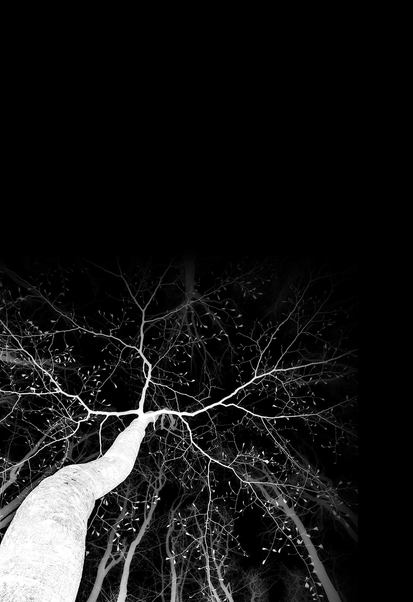
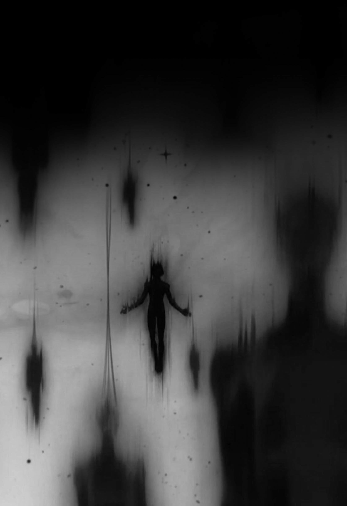
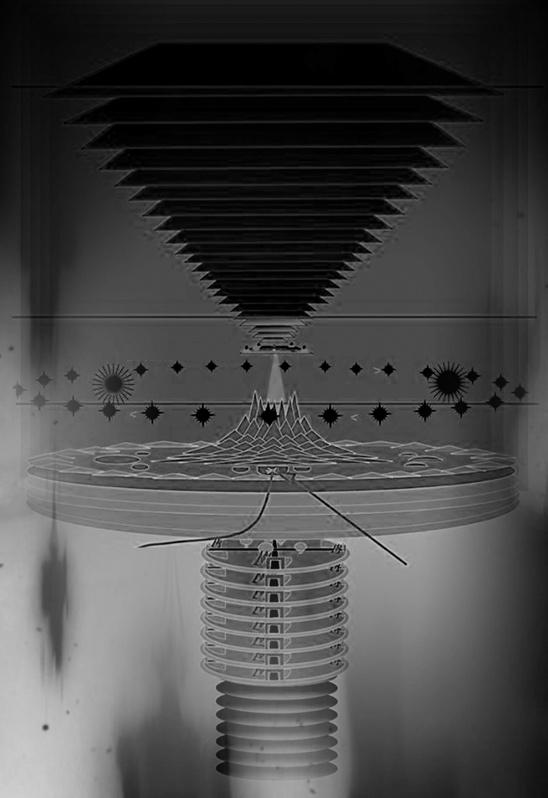
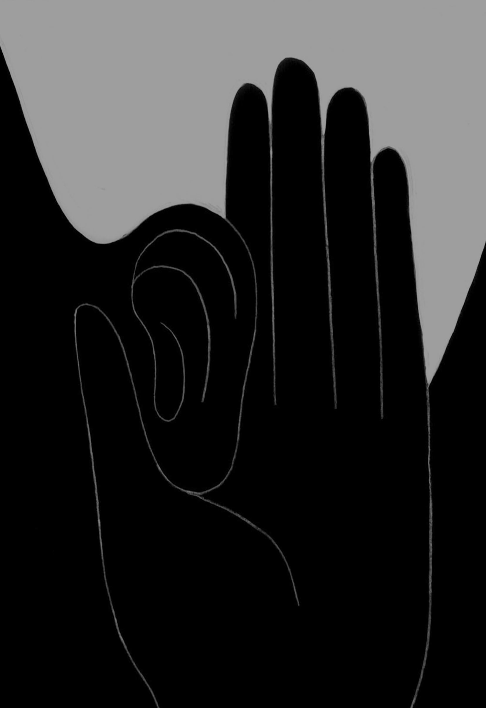
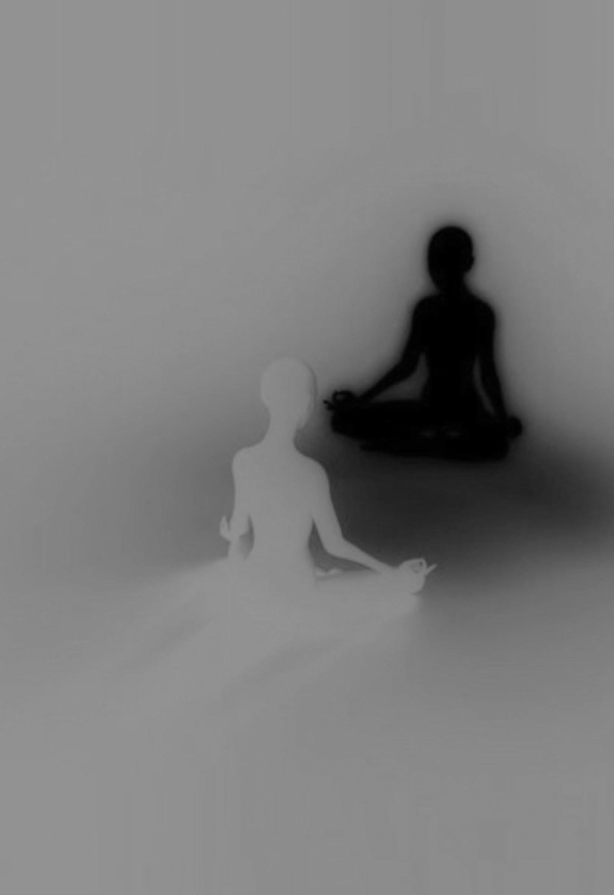
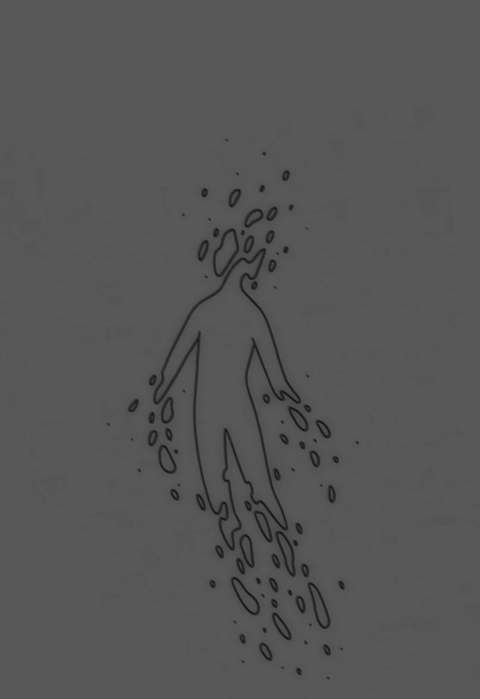
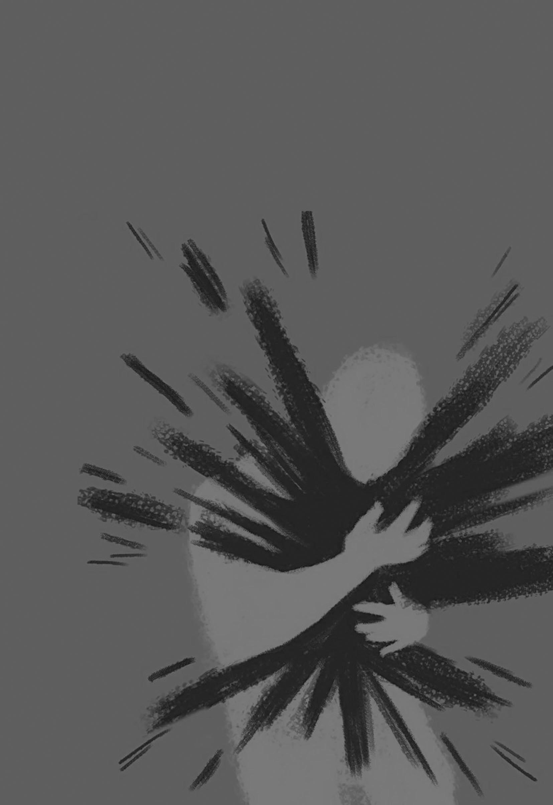
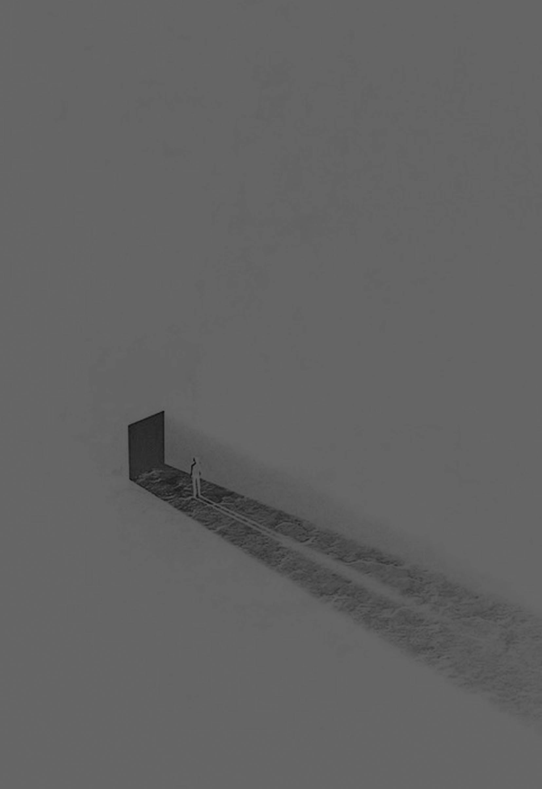
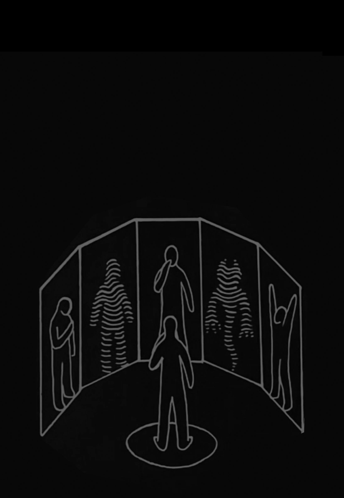

2014 年2 月25 日，樓主在百度貼吧開帖，回答佛法修行上的問題；2014 年7 月25 日，樓主在貼吧最後一次回帖，與大家暫時告別；前後剛好五個月。短短的時間裏，樓主就贏得了大家的認可和追隨。很多人開始按樓主帖子裏說的方法來修行，並在回帖中表示了強烈的拜師願望。樓主的追隨者們建立了一個專門的QQ 羣Taiguanglin 羣，用於樓主修行方法的交流和推廣，並一直延續至今，這位頗爲神祕的樓主，就是大家口中的Tai 師父。
《坐禪》和《坐禪之問答錄》兩本書，彙集了Tai 師父發表在貼吧裏所有的文章以及對禪友的答疑，其中還包含了已經被百度貼吧刪除的某些內容，畢竟師父現在的帖子已經不完整了，此書也對其脈絡進行了重新梳理、編排。
《坐禪》一書中，Tai 師父用現代通俗的語言，從宇宙的起源入手，結合佛法的基礎常識，闡述了佛門修行的方法和途徑，用事例論述了修行的具體步驟，特別是打坐修禪的詳細過程，提供了一套從零基礎到四禪的修行方法和途徑。更爲寶貴的是，Tai 師父以自己修行過程中的體會，結合現代醫學知識，對坐禪、身體和意識等方面的關係做了深入的剖析。其中涉及身體結構的某些內容，它的深度已經是現代科學研究所不能企及。
《坐禪之問答錄》一書中，Tai 師父解答了很多禪友在實際修行中碰到的問題，同時，也就一些禪友對於《坐禪》裏不清楚的地方，再次給出了開示！就一些禪友的體會來說，《坐禪之問答錄》的重要性絲毫不亞於《坐禪》。
Tai 師父所提供的這些資料，無疑將使那些致力於禪修實踐的人們少走很多彎路，節省下一些無比寶貴的修行時間。因此很多人將之視爲無可替代的實修寶典。在此，我們由衷地感恩Tai 師父的慈悲開示和無私奉獻！
Tai 師父說：“大家現在能在這裏學習佛法、追求真理和解脫，都是上輩子修來的福報；大家都是佛前大種福田的人，否則無法遇到此等妙法。”爲此，我們也真心希望能看到這部書的所有人都能珍惜這樣的機緣，從Tai 師父的修法中獲得真實的利益。
TaiguanglinQQ 羣：481903304

↓2014-02-28 ↓
在此開演終極佛法——你如果看明白了，恭喜你，可以縮短無數劫的修行！
別人講法先講樹葉，從樹葉看樹枝，從樹枝看樹幹，從樹幹看樹根。樹根很簡單，就是空。樹葉多啊！什麼四諦法呀、八正道呀、十二因緣法呀、三十七道品呀。那是雲裏霧裏，說得是一愣一愣的。
我給你倒過來講——從樹根開始往上走，宇宙的時間、空間、我們的生命等，一切終極問題都在裏面！
自性本有——這個沒什麼好說的，本來就有，給他起名叫第八識——阿賴耶識。在這個第八識當中，什麼都沒有的時候叫佛，也是給他這麼起名的。名相本空——不是要說的重點。
這個第八識裏突然出現了一個妄想——對於第一個產生的妄想，得先說明兩點：
第一，原因。這是爲什麼呢？沒有原因！《楞嚴經》裏說了，就那麼忽然出現了。
第二，這個妄想可數不可數？這個問題很重要，延伸到後面的漸悟、頓悟。答案是：這個妄想是可以數的。
我們看佛經，凡是可數的、但數量太多、無法計算的叫無量。凡是不可數的就是一種存在狀態的，叫無盡。佛經裏，唯有虛空用無盡形容，叫無盡虛空。虛空就是一種空間的存在方式——沒有一個虛空、兩個虛空。其他一切統統稱爲無量，都是可數的！
當第八識裏產生第一個妄想的時候，叫菩薩！這一個妄想消失了，那就是佛。一個妄想變兩個妄想、兩個變三個、三個變四個——越來越多！菩薩有十一種妄想。
發展出十一種妄想後，又出現了新的認識：發現這個妄想和那個妄想不同啊——這叫分別心，叫第七識末那識。有了這個分別心，就變成阿羅漢了。妄想繼續變多，分別心越來越重。阿羅漢有九種分別心，我就講其中幾個（“分別心”將在本章第6 節詳述——話頭禪）。
九種分別心中，有一個分別心叫先後分別：認爲先打了這個妄想，再打了那個妄想。如此分出先後，就出現了這該死的時間觀念——時間就是從先後分別來的。
還有一種叫你我分別：認爲這個妄想是我的，那個妄想不是我的——就出現了對別人的認識。
還有一種叫衆生分別：把不是我的妄想再分成很多個，個個都不一樣，從此有了無量衆生。
其他六種分別心說了也不好理解，這裏不提。
那分別心發展到九種之後，又開始出現新的認識：就是第六識執着心了——這一執着就變成凡夫進入輪迴了。
那總結一下：第八識中什麼都沒有的叫佛，第八識中有妄想的叫菩薩，菩薩又有了第七識分別心的叫羅漢，羅漢又有了第六識執着的叫凡夫。
接下來講凡夫的執着都是什麼。
第一個出現的執着叫對妄想本身的執着。這個執着沒有具體內容，就是打妄想。一個接着一個打，這一個一個妄想被分別心分成一段一段，叫分段——從此有了分段生死。
對妄想本身的執着怎麼理解好呢？我們打妄想都有內容，這個內容就是妄想，妄想就是內容；可對妄想本身的執着是沒有內容的，就是打妄想。
舉例子，我奶奶八十六歲去世。她喜歡看電視，電視一直開着，她看着看着睡着了。別人一關電視，她就醒，說她在看，拿過遙控器開電視，過一會兒又睡覺。從去世前三年起，她都分不出各個頻道了！電視不管演什麼都行，只要開着就行；看着睡，關電視又醒，說自己看，又開電視。對奶奶來說，電視的內容不重要，只要開着就行，這叫對電視本身的執着，不是看什麼內容。這麼解釋應該好理解吧！
有了這個對妄想本身的執着，這一段一段的妄想所形成的，就是天界二十八天中最高的非想非非想處天。非想非非想，顧名思義，不是想，又不是不想。怎麼理解？不想，因爲這個想是沒有內容的，所以叫不想。不是不想，想還在繼續，所以是想，叫不是不想。話有些繞口，但IQ 一百以上的肯定能明白。
在這沒有內容的執着中產生了內容，最初的具體內容就是無。認爲啥都沒有啊，沒有自己，沒有認識的客觀對象。對“無”的執着形成了無所有處天！
接着，出現了對自己的執着，認爲有我啊，我的意識無邊大啊。這叫識無邊處天！
接着，出現了認識的客觀對象——第一個認識的客觀對象就是虛空！我在哪裏啊？我在虛空裏啊。虛空無邊大，我的意識也無邊大，我無邊大的意識覆蓋了無邊大的虛空啊。這叫空無邊處天！
到這裏叫無色界四天！
爲什麼叫無色界？色指的是物質，這四天裏沒有認識的客觀對象，只有虛空。
接着，在這虛空裏，開始出現可以認識的各種東東了。先產生名字，接着出現東西——這個東西得靠器官來認識。
第一個出現的器官就是眼睛。眼球不能自己飄在虛空吧，那個東西也不能用眼球直接碰吧，碰壞了眼球咋辦啊！得有個保護眼球和可以用來碰東西的軀殼吧——所以有了身體。這個東西它動啊，有振動我得感覺啊——就有了耳朵。看了、摸了、聽了，還需分別得更細緻啊，要不然你不知道這是屎還是大醬啊——所以有了鼻子。你還得把它裝自己身體裏面去啊，這樣纔是你的嘛——所以就有嘴了。放進嘴了得有感覺啊，不能喫屎和喫大醬都是一個感覺吧——所以有了舌頭了。
以上形成了色界十八天。有物質、有肉身——稱之爲色。色界十八天的執着對象是死物，沒有生命的。
那欲界六天的執着對象便是活物，就是另一個衆生——我們美其名曰愛情。這個愛情，最初在色界十八天就有了，但只在想和看的層面上。
你開始想別人了！一個人好無聊嘛，有別人一起玩耍多好啊；單是腦子裏想不夠啊，最好能看見；光是看見了，還不夠，最好手牽手、皮膚摩擦，表達一下愛意。接下來出大事了！單是皮膚摩擦、耳鬢廝磨，還不夠表達愛意，真希望兩個人的身體融爲一體——我中有你，你中有我。有一部分衆生出現了可以進入其他衆生體內的兇器，帶有兇器者起名爲男人；有一部分衆生出現了可以接受這個兇器進入自己體內而不死的器官，起名爲女人。
有了男女，便形成了欲界六天！
男女之愛愈演愈烈，形成新的執着——就是淫慾。欲界六天的各天，就是根據淫慾強弱程度來分的！越往下，淫慾越重——淫慾是越來越重了！
男找女，女找男。可喜歡的對方不理你啊——這個可恨啊！這叫愛生恨，恨極生殺。我愛你，可你不愛我，可惡！宰了你再說。宰了還不解恨，我喫你的肉、喝你的血——這樣我倆在一起了。這叫“吾愛汝，故食汝”——這是佛經裏的原話！
這些殺人兇徒們形成了人間。喫來喫去，也忘記了當初是因爲愛——才恨、才殺、才喫的。開始執着於味道了——任何東西經常喫，都會變成習氣！殺人者爲了方便被自己殺害者報復，就變成畜生了。人要殺畜生，畜生還能有什麼辦法！畜生之間也有了天敵，互相喫來喫去——下三途咱就不解釋了。
到此，宇宙的時間、空間、生命的開始、業力的產生，全部演繹完畢——這就是終極佛法！一切佛理都從這裏可以得到解釋。
↓2014-06-10 ↓
佛陀把禪定各個次第的名字和天界的名字連在一起，就是在告訴大家：這個禪定次第就是進入各個天界的門檻。而你要解脫生死成爲阿羅漢，必須跳過二十八天所有天界。
佛陀在早期跟着外道修行的時候，已經修到了非想非非想處定，但未能了生死；也看到了外道上師死後進入了非想非非想處天，卻福報消盡後又墮入畜生道。所以，決心尋找真正的解脫之道。
大家在網上找或者找別的修行人來問——人家告訴你的四禪理論，都是以凡夫的身軀修行時的感覺。這就好比一個高三學生參加高考，每個大學都有自己的分數線和專項要求；可這個高三學生卻不理那些要求，完全按照自己的感覺來學習。今天打坐覺得比昨天打坐更舒服，就說自己進入了深定——這是多麼幼稚的想法！
看《楞嚴經》，欲界六天就是按照淫慾的多少來分的。四天王天的要求最低：只要守五戒，卻不捨妻妾之愛就能去。最上面的他化自在天的要求最高：做愛的時候，要沒有快感、味同嚼蠟、還神遊天外——你都不把注意力放到做愛這件事情上。當你徹底滅了淫慾，對淫慾連概念都沒有的時候，就能進入初禪天了。
下面這段法，唯有“再來人”纔會說！
全世界進入四禪的人，可以用三位數來計算！但是凡夫修到四禪，也不可能深刻認識到整個宇宙的演化過程；只有已經解脫過的“再來人”，用解脫的智慧來看宇宙和生命，才能把一切解釋得圓滿無礙！
大家能得聞離苦的終極理論，都是上輩子在佛前種下了無量福因；也說不定在我苦修的時候，曾向我佈施和供養。所以，此生不需要付出任何代價卻能聽聞妙法！希望大家能夠珍惜這樣的法緣。
先從空無邊處天開始說。
前面已經講過，我無邊的意識覆蓋無邊的虛空叫空無邊處天——人的意識可以認知整個虛空，沒有任何障礙。
從這裏開始，我執出現——就是沒有內容的情緒。意識開始收縮，這個意識叫陽神、也叫元神；我也不再另起名字讓人迷惑了，就叫陽神吧！
在我執的作用下，陽神開始一點一點收縮，但是從陽神延伸出去的感知能力，還可以認知整個虛空。這個陽神收縮的過程，對應於四禪九天中的上五天，叫淨居五天——無煩天、無熱天、善見天、善現天、色究竟天。
人的我執逐漸發展出喜情！這個喜情並不是我們能感受到的、讓人興奮心跳加速的歡喜心，這個喜情是相對於苦情而說的。因爲沒有苦情，就叫它喜情，更準確地說就是“自我存在的滿足感”，感覺自己是一個活人，是一個生命，自己存在在這個世界——就是這種感覺！
當人出現喜情的時候，陽神進一步收縮，陽神外圍出現不能認知的部分，向外延伸出去的感知能力也不能企及的地方。這個不能感知的部分我們取名爲黑暗。出現黑暗開始，陽神進一步收縮，喜情越來越嚴重，這個過程對應於四禪九天中的下四天——福生天、福愛天、廣果天、無想天。
這樣大家就明白了！在前面的淨居五天中，陽神就是一個發光體，本來陽神本身覆蓋整個虛空；後來陽神收縮，但是向外發射的光芒可以照亮整個虛空；當進入四禪九天的下四天的時候，陽神收縮，光芒減弱，開始出現不能照亮的地方——那裏就是黑暗的虛空。陽神覆蓋整個虛空的時候，其密度無限接近於虛空；當他收縮的時候，密度逐漸增加。
其實，陽神也是物質組成的！所以說，明暗二相實非明暗二相，取名明暗二相，暗即是非暗。超越了暗與非暗，才能進入空的境界。
這種文章方式是不是很熟悉？這就是《金剛經》裏的敘述方式！你如果真悟道了，一天寫出一百部《金剛經》都不在話下；你沒悟道，那就只能翻來覆去地背佛經了！
四禪九天的發展過程很簡單，可到了下面三禪天開始就有點複雜。不過，你的IQ 只要超過一百，你完全可以理解我在說什麼。
你本來沉浸在自我存在的滿足感中，根本沒有注意到外面。可突然有一刻，你意識到你被黑暗包圍着。大家要跟着一起想象！這個時候，人就是一個發光的球體——就是陽神，掛在虛空中，周圍一片漆黑。人就對黑暗產生了第一種苦情！這是什麼樣的情緒呢？是恐懼嗎？不是！恐懼是苦情發展到後面很嚴重的時候纔出現的。這個第一個苦情就是疑情！人會升起好奇心，黑暗中有什麼呢？當然，這個疑情絕對不是文字妄想，就是一種細微的好奇的情緒。
當人升起疑情的時候，陽神中的物質開始向裏凝聚——陽神的中間出現密度稍微大的引力點；整個陽神開始自轉起來，就像地球自轉一樣。這裏就是三禪第三天——遍淨天。
這樣大家就明白了——爲什麼說人是小宇宙了。陽神的自轉和宇宙的自轉是一個原理，宇宙就是從陽神的自轉中發展而來的。大家也明白了爲什麼參疑情可以參破一切苦情，因爲疑情是第一個出現的苦情。
另外，還有思情，和疑情屬於一個級別——這個情緒咱另說。這裏就用疑情的發展作爲線索來講！
人的疑情越來越嚴重，發展成不安的情緒。
舉個例子，有人來敲你家門，你第一個升起的情緒就是疑情。你會想，門外到底是誰呢？你去開門，發現門外沒人，你不以爲然，以爲鄰居家的小孩子來搗亂，你回來繼續幹你的事情；這個時候敲門聲又響了，你又出去看，還是沒人。三番兩次重複這種情況，你的疑情就開始發展成不安的情緒了。
有些人直接發展成恐懼的情緒，那是害怕自己的身體受傷，或者自己的所有物被奪走的情況下出現的情緒。所以，恐懼的出現還在更後面。
緊隨疑情出現的就是不安的情緒，這個不安再發展就成了煩躁。人的陽神也進一步收縮，陽神中心的引力點越來越大，引力越來越強。這裏就對應於三禪第二天——無量淨天和第一天——少淨天。
接下來更有意思了！
你對周圍的黑暗出現了煩躁的情緒！你不知道黑暗中有什麼，這讓人很着急，你決定去黑暗中探索一番。
大家繼續想象，你是一個發光的球體，掛在虛空中，周圍一片黑暗。你要探索黑暗，是不是要先選擇一個方位？這個選擇就是注意力！這個注意力就是眼根境界。這眼睛是不是來得很突然？
這時候，人沒有實體身軀。眼根就是注意力！注意力用另一種說法來解釋，那就是選擇和放棄。你選擇了外面的黑暗，而放棄了裏面的光明；所以，你的眼睛只能看外面，不能看身體裏面。你選擇了黑暗中的某一個方位，而放棄了其他方位；所以，你的眼睛只能看一個方位，視野中還有焦點。
當你選擇了一個方位後，向那個方向移動。你是一個發光的球體，沒有實體身軀，你的移動速度就是光速。
在這裏，我們要仔細思考這個移動。你在漆黑一片的黑暗中，外面沒有任何參照物，你怎麼判斷自己移動了呢？
如果你說你動了，外面黑暗的虛空也在一起動；如果你說你沒動，那這個動就是你的幻覺。所以說，動與不動二相實非動與不動，取名動與不動，動即是非動。要超越動與非動，才能進入空的境界。
在量子物理學中，有一種理論，宇宙中某一個粒子一動，與其相隔無數光年的某個粒子也在一起動，中間沒有時間間隔。所以，科學家們推理出宇宙應該是一個整體。
你在漆黑的虛空中飛行，整個虛空也在跟你一起動。你說沒動，那虛空也沒動——動只是幻覺而已。虛空和人的陽神都是妄想中形成的幻覺，而且都一起形成、一起變化。整個宇宙就是一個整體，包括在裏面的人（對不起，我不懂量子物理學，這只是聽來的理論，別跟我來討論科學）。
當你向黑暗中以光速飛行去探索，卻始終沒有發現任何東西的時候，你開始希望外面也有光源，能夠照亮黑暗，讓你看清黑暗中到底有什麼——這樣外面就出現了光源。這個光源也和你的陽神一樣，是發光的球體。這個時候，咱就叫氣態球體吧！外面的光源也是氣態球體。這裏就是二禪第三天——光音天。佛經裏說，光音天的天人們飛行自在，自身發光。
咱們再插一個題外話——速度和時間的關係！
科學家們經過實驗，的確證明了速度越快，其物體的時間會變慢；從而推理出：速度接近光速的時候，時間也會接近停止。爲什麼會有這樣的現象呢？大家別忘了這個移動和時間都是妄想和合而成，都是幻覺。
你如果拋開人的妄想，只把速度和時間拿來分別研究，那很難明白這到底是什麼原因，從而推理出荒唐的結論，就認爲速度超過光速，時間會倒流。
那我們把妄想放進來一起看，問題就簡單了！人當初開始移動的時候，是以光速移動的，而這個移動也是在一念之間完成。當你想朝某個方向移動的時候，只要念頭一起，你就會以光速移動，所以，這個光速就是一念的速度。一念即是光速，光速即是一念。從而推理出：妄想越少，速度越快；妄想越多，速度越慢。
再看時間。時間出現在阿羅漢的分別心中——叫對於妄想的先後分別——這個我們在本章第06 節裏詳述。單說這個時間！
我們無法捕捉時間，所以只能用物體的發展變化過程來表現時間。地球繞太陽一圈就說過了一年了，這個物體的發展變化過程，咱就叫衰老吧！那衰老和妄想有什麼關係呢？這就簡單了！當你感到開心的時候，時間過得飛快；當你感到痛苦的時候，時間過得很慢。
開心和痛苦之間有什麼區別？就是妄想少和妄想多的區別！你開心的時候，你專注於讓你開心的事情，注意力高度集中，都不想別的事情。看一部精彩的電影，兩個小時很快就過去了；愛打麻將的人通宵打麻將，一宿很快就過去了，憋尿都可以憋一宿。反過來，你痛苦的時候，打雙盤熬腿的時候，那一分一秒都是煎熬啊！腦子裏各種妄想此起彼伏，時間過得非常非常慢。
當你開心地度過了十個小時，你都覺得這十個小時就像一個小時一樣快的時候，你的身體也只衰老了一個小時，而外面的人都衰老了十個小時。所以說，心態好的人，腦子裏妄想少，所以衰老慢，活得比較長；心態不好的人，腦子裏妄想多，老得快，比較短命。這樣得出的結論是：妄想越少，衰老越慢；妄想越多，衰老越快。
和上面的速度聯繫起來：妄想越少，速度越快，衰老越慢；妄想越多，速度越慢，衰老越快。去掉前面的妄想，那就成了速度越快，衰老越慢；速度越慢，衰老越快。
衰老慢與快是相對而說的！衰老慢的人眼裏看衰老快的人，就認爲他們的時間過得很快。
所以，科幻小說中說，主人公以光速去旅行，回來之後發現物是人非——地球上過了幾百年。虛雲和尚的一個弟子在山洞裏修行，被觀音菩薩帶到了極樂世界；一個來回加上短暫的參觀，回來後過了六年半，還寫了《極樂世界遊記》。
再回過頭來看速度，這個世界能有比光速更快的速度嗎？
那是不可能的！光速是一念的速度，比一念更快就是無念——無念就不會動了。既然沒有超過光速的東西，那時間倒流也是不可能了——這個時間觀念也是！先有了妄想流向，再用分別心分出未來和過去，妄想流向的方向就是未來。好比先有了人臉，按照臉部朝向的方向來分出前後一樣。你的臉朝向哪裏，哪裏就是前面；轉過身來，後面就變成了前面。妄想也一樣！新的妄想出現的時間就是未來。你不能倒過來做過去的妄想，你把過去的妄想重新做一遍，那也是新的妄想——還是未來。你把以前看的電影重新看一遍，你也不可能回到以前。所以，時間是永遠不可能倒流的！
這麼一看，速度和時間的關係也很簡單。當然了，信不信是各位看官的事。
或許你會問，那你打坐的時候腿很疼，時間過得很慢，是不是這段時間裏你在加速衰老呢？是的！你在加速衰老。但是，當你打通完了全身經脈，開始進入禪定境界的時候，你腦子裏妄想很少。這個時候你衰老的速度會變得很慢，比別人慢很多——你會健康地多活十幾二十年。所以，你賺得還是更多。
回到主題！
你是一個發光的球體，以光速飛行；外面也有了光源，氣態球體的光源。可是，你不管怎麼飛行，都不能探索完黑暗的虛空。前面始終有黑暗，你的注意力也向一個方向高度集中，結果你的陽神表層中，注意力集中的地方出現了新的引力點。陽神中心有情緒形成的引力點，表層又有了一個注意力形成的引力點。
在兩個引力點的作用下，本來自轉式的陽神運動開始發生變化。把兩個引力點連成一線，再把這個線擴展成一個面，陽神物質在這個球體的豎切面上形成車輪式旋流，自轉式運動使整個球體一起轉動，而這個車輪式旋流就像一個扁平的車輪向前滾動。它有區別：中間的豎切面上有車輪式旋流，兩側的半球體當中的物質運動速度較慢。在這種運動下，球體開始被拉長，變成橄欖球形。
在宇宙中，有一種天體就是由兩個質量差不多的恆星組成，兩個恆星相互圍繞公轉，好像叫天狼星吧。我忘了，就是那種現象。
這個橄欖球形的陽神正好對應於我們人體！中間由情緒形成的引力點在膻中穴，表層中由注意力形成的引力點在頭部——人的頭部就是注意力高度集中的產物。眼、耳、鼻、舌加上打文字妄想的意根，六根中有五根集中在頭部。
中間的車輪式旋流被拉成橢圓形，這個橢圓形旋流就是人的中脈——這樣大家就明白打通中脈的重要性了！
你說你不打通中脈能修到哪裏去？要修回到陽神的階段，必須打通中脈！不然，啥都不是——你的陽神就是散亂的臭雞蛋！
陽神開始進行車輪式旋流，內部物質之間的摩擦力度大大增加。本來整體一起自轉的時候摩擦很小，現在不一樣了，人就有了感知這種巨大摩擦的能力，就是第二種感覺能力——叫冷暖覺。
你注意力高度集中於一方，以光速拼命飛行的時候，陽神內部物質運動加速，摩擦力度加大，這個時候的感覺叫暖——叫熱。
你把注意力放下了，不飛行了，表層中由注意力形成的引力點變弱，車輪式旋流也變慢，這個時候的感覺叫冷。
所以說，冷暖二相實非冷暖二相，取名冷暖二相，熱即是非熱。超越了熱與非熱，才能進入空的境界。
你也靠這個冷暖覺來判斷自己動還是不動：身體發熱就認爲自己在動，身體不發熱就認爲自己不動。你覺得高速移動的時候發熱，所以高速移動的東西應該是熱的。宇宙中最高速移動的就是光，因此光也帶有了巨大的熱量。這個有冷暖覺的天界就是二禪第二天——無量光天。
現代人都知道，光可以分解成有熱能的部分和沒有熱能的部分。太陽光進入大氣層的時候，有熱能的部分被大氣層反射和吸收掉大部分，所以，照到人體也不會受傷。要是在太空直接被太陽光照射，人就會被燒死。這個光先從沒有熱能的光開始出現，後來因爲人有了冷暖覺，光也有了熱能。
接下來，人的陽神進一步收縮，外面發光的光源向四面八方發射光和熱能，這些光和熱能也是物質——是氣體。
這裏的氣體和我們這個地球上的氣體不是一個氣體，後面說的液體、固體都不是——是天界的東西。爲了解釋方便，直接用這些名詞而已。
宇宙間開始佈滿氣體，人的陽神也濃縮成氣態——從光音天開始，陽神都是氣態。人在飛行的過程中，外面的氣態物質會進入人體陽神裏面，並從後面噴出；也可以說陽神裏的物質和外面的氣體進行了交換，這種交換留給我們人類的就是呼吸。人不停地移動，氣體交換一直在進行，以至於讓人們認爲這種氣體交換是必須的，不交換不行。所以，我們現在不呼吸不行，會死人的。
在移動的過程中，不僅進行氣體交換，人的氣態陽神會和外面的氣體衝撞。人的氣態陽神密度大，外面的氣體密度小；密度不同的兩種物質碰撞會產生振動，人就有了捕捉這種振動的第三種感覺能力——就是聽覺。
這個聽覺不僅可以感知人自身氣態陽神和外面氣體的碰撞產生的振動，還能感知到外面不同物體之間碰撞產生的振動。外面的物體碰撞產生的振動，會讓遍佈虛空的氣體跟着一起振動，把振動傳遞到人的陽神氣體當中。所以聽覺比視覺更圓滿！視覺只能看一個方位，而聽覺是靠氣體的振動來捕捉聲音。只要有氣體這個媒質，不管從任何方向來的振動都能感知。這個有呼吸和聽覺的天界就是二禪第一天——少光天。
你會問：既然呼吸在二禪第一天出現，爲什麼我們修行的時候，呼吸在四禪纔會停止？
這裏牽涉到業的問題，還有現在這個肉身的維持問題。人體不呼吸就會死的！你要用陽神催動身體細胞，把人體所有細胞進行升級——我們叫氣化身體。到了這個程度，身體會直接用皮膚來呼吸。注意：不是停止呼吸，是用皮膚呼吸。要真停止呼吸，人馬上就完蛋了！四禪以上的人泡在水裏都不死，皮膚不但可以從空氣中吸收氧氣，還可以從水中吸收氧氣。
接下來，人的氣態陽神進一步收縮，開始變成液態。
外面發光的氣態光源體在散發了光和熱能之後，逐漸冷卻成爲液態；虛空當中開始遍佈各種液態東西。人的液態陽神與外面的液態物質發生碰撞，人爲了感知這種碰撞，就有了第四種感知能力——就是觸覺。而第二種感知能力——冷暖覺——也一併歸入到液態陽神當中。
如果你不修行，不悟到這個境界，你根本不可能知道身根可以分解成觸覺和冷暖覺，而且出現的前後順序還不同！這個有液態身體和觸覺的天界，就是初禪第三天——大梵天。
接下來，外面液態身體進一步冷卻和收縮，液態表層出現固態硬殼——就像地球一樣，地球中心還有液態岩漿。這個時候，人雖然有了液態身體，但還是可以飛行，不過，已經不能以光速飛行了。當人靠近外面的液態、固態物體的時候，會和這些物體周圍的氣體進行氣體交換。這些物體都是先從氣體開始凝固而成，周圍的氣體也含有這些物質一樣的元素，人就有了分辨這些氣體的第五種感知能力——就是嗅覺。這裏就是初禪第二天——梵輔天。
接下來，虛空中佈滿了各種氣體、液體、固體。你對某種特定的氣味產生了執着，你喜歡這種氣味，所以把散發這種氣味的物體放進了自己身體裏——這種行爲叫喫。喫了東西就出現了第六種感知能力——就是味覺。這裏就是初禪第一天——梵衆天。
欲界六天就不說了！
我們看佛經！佛經是佛陀按照當時人的理解水平來說的。四大理論早在佛陀出世前已經存在。印度的婆羅門教，還有瑜伽學派都認爲世界是由地、水、火、風，加上虛空，五種元素組成——佛陀就直接套用了這個理論。
你要拿這個來對號入座也可以！人在光音天先動起來了，用光速飛行——那就是風大。人在無量光天，由注意力和情緒形成陽神物質的車輪式旋流，有了冷暖覺——這就是火大。到了初禪三天出現液體、固體，這就是水大和地大。
佛經上說，世界有大海，大海外有大風，把大海吹得波濤洶湧，浪花被吹到虛空，在虛空中凝固成一層一層的天宮——須彌山就飄在香水海上。不是先有固體山，再有水把它包起來。不管怎麼說，都是先有水大，後有地大。
佛經上說，人類是由光音天的天子變化來的。這些天子飛到了地上，先喝了甘泉，又喫了地肥，結果飛不起來了，就成了人類。
這個對於我們的修行並不重要，而最重要的是人的六種感覺能力。這些感覺能力全部從注意力開始，所以我們要滅五根境界，就要滅掉這個注意力！只要注意力消失，五根自行脫落。
我們再仔細看看這六種感覺能力！對應二禪三天的上三根和對應初禪三天的下三根有區別——如果你足夠細心就能發現——這區別大了去了！
這舌根、鼻根和身根觸覺，必須和外境發生碰觸才能起作用。舌頭碰到食物纔有味道，鼻子吸入氣體纔有嗅覺，身體碰到物體纔有感覺。所以，你在這三根上用功修行，你的注意力也會跟着觸和不觸發生跳動——這樣注意力就無法高度集中！你觀呼吸也是如此，觀丹田也是如此——後面會講到觀丹田會出現什麼樣的現象。
再看上三根：耳根、身根冷暖覺，還有眼根。這三個根我們始終在用！耳朵始終在聽，有聲音聽聲音，沒聲音聽寂靜；身根冷暖覺也是，始終在感覺着身體內部和外部的溫度，沒有觸與不觸的分別；眼睛也是，睜眼看世界，閉眼看黑暗，瞎子也在看黑暗。你在這三根用功，就能高度集中注意力——和在下三根上用功完全不一樣！《楞嚴經》裏，火頭金剛觀身暖處的修法就是在冷暖覺上用功——從觀淫慾開始，觀身體內部的熱流。
這樣，大家就知道用觀呼吸都能進入四禪的說法全是扯淡！說這種話的人連初禪都沒進，打坐絕對沒超過四個小時——四個小時就是初禪的極限！雖然根據每個人的情況會有出入，但基本到這個時候就該起情緒了。你觀呼吸觀四個小時，你會發現呼吸一直在變化——呼和吸，後面還有停頓——你的注意力也會跟着一跳一跳。時間長了，你就開始煩躁！這種一跳一跳的感覺很讓人揪心——你就會出定！
總而言之，你觀身體任何部位的修法都只能到初禪——不能進入二禪！想進入二禪，就要在上三根上用功！比這更好的，就是在情緒上用功——參疑情或者思情——直接跳過六種感覺能力——你的禪定可以直指四禪！
↓2014-03-03 ↓
再說說天界如何——這個可能佛經裏沒有。我這麼一說，大家也這麼一聽，別問我怎麼知道的。現在講一下天界也是說說而已——就說四天王天和忉利天。
娑婆世界的中間有須彌山，山頂住着帝釋天，帝釋天管的天界叫忉利天。忉利天的中間是帝釋天的天宮，周圍有三十二個區域，各有一個天王，就是三十二村婦，合成三十三天。
看我們的銀河系，整個銀河系就是須彌山，中間的黑洞部分就是須彌山頂。我們認爲銀河系像圓盤，其實是中間突出來的山型——就當我沒有天文常識就行了。整個銀河系中間大概三分之一的部分屬於忉利天，周圍三分之二屬於四天王天——在須彌山山腰到山腳的區域。四天王天分成四部分，各有一個天王掌管。再往下，須彌山的山腳到快掉進海水的地方屬於人間——在銀河系是最邊遠地區。
這個四天王不但管他的天界，也管人間——我們這裏屬於南天王的負責地區。佛經上說四天王壽命如何，那個世界如何，我就不重複了。我只說，四天王如果和我們正常人一般大，那地球只有一個乒乓球那麼大。在四天王眼裏，地球上的人就是活兩天就死的小蟲子，附在一個小泥球上苟延殘喘。
四天王天的衆生怎麼樣，佛經裏有，不寫了。
南天王喜歡藍色，把自己管的地方全部用藍寶石裝飾，所以我們看天是藍的——你也別說那是太陽光在大氣層出現什麼反應那樣的——那狗眼裏世界全是黑白呢！
東天王喜歡粉色，他那個世界的天是粉紅色的，那裏人間的衆生也比我們高大長壽，皮膚很白，很漂亮。
那忉利天的衆生怎樣就不多說了，自己找佛經看。
從須彌山的山頂往上走，就是一層一層的天界。每上一層，所能享受到的福報，無法用我們的腦袋想像。我說這些就是想給修行的人們一點信心，哪怕你只是戒肉，未來能享受到的福報也是相當大的！
↓2014-06-16 ↓
爲什麼說思情和疑情是一個級別？你要是看過《阿含經》，也就大概能理解了。
在三禪第三天裏，人對周圍的黑暗產生疑情。黑暗中有什麼呢？從哲學的角度來看，只要有疑問，那就肯定有答案——這是相對關係。比如說，大家在這裏提問，我的回答讓你滿意，這是一種答案；我的回答不靠譜，也是一種答案；我不回答，也是一種答案。任何可能性都是答案，就看你怎麼理解和接受了。
咱回到主題上。
當產生疑情時，就有了假設的答案。黑暗中有什麼呢？有人就假設黑暗中有別人——問題就出在這裏！在這種假設前提下，人就開始產生孤獨感——這個孤獨感就是思情！
在我們的用詞習慣中，思念都有針對性的對象——思念母親、思念情人等。這個孤獨一詞就沒有針對性的對象，你想朋友也是孤獨，想親人、想愛人都是孤獨。所以說，這個最初產生的思情更接近孤獨感。
前面講疑情會發展成不安，再進一步就會成爲煩躁。這個孤獨感也一樣，很快就會發展成不安，再進一步就是煩躁。
到了二禪第三天，在孤獨感的驅使下，你也會去探索黑暗，去尋找同類。所以說，這個思情和疑情是一個級別，同樣可以用來參破一切苦情。
而且，這個思情還是業力產生的直接原因。你一個人做夢，那就是夢。自己一個人創造出來的幻境很脆弱，很容易破碎。但是你因爲感到孤獨而去尋找別人，那這個夢境就不是你一個人的夢境了。很多人一起做夢，夢境越來越堅固。
在這個孤獨感的基礎上，又發展出兩種情況。有人是自己主動去尋找別人，就是動起來了。有人是坐着等，心想：好無聊啊！要是有人來找我一起玩就好了。
這樣兩種願望開始產生共鳴：向外尋找別人的人——死後就生到了坐等別人來的人的夢境裏。
接下來，就是《阿含經》的內容了！坐等別人來的人，因爲這個世界是他創造出來的，所以他對這個世界有更強的控制力；而那些生到這個世界的外人，他們的控制力就比較弱了——更重要的是，每一次重新出生，人會失去記憶。這些新來的外人們因爲沒有了前世記憶，他們就會認爲自己是這個世界原來的主人創造出來的，所以就大家一起尊奉這個世界原來的主人爲天王，這也是神創論的起因。
神創論並不是別的哪個宗教先發明的，佛陀早就對神創論解釋得很清楚了！
以上是從上到下的演化過程！那凡夫從下往上修行又會怎麼樣呢？
當一個人間的修行者修到初禪第三天大梵天的時候，他能回憶起自己生到大梵天后的前世——就是從生到大梵天開始到生到人類爲止。這段前世記憶他能找回，但是他卻不能找回大梵天以上那些天界的記憶。所以，這個修行者就認爲大梵天王就是造物主——整個世界乃至所有有情生命都是大梵天王創造出來的。所以，人類應該信奉大梵天王——這就是印度四大種姓制度的來源。
婆羅門由大梵天的口中所生，所以只要動動嘴祈禱一下，充當人與神的傳話員，就可以過無憂無慮的生活——就是宗教人士。
剎帝利由大梵天的肩膀所生，肩膀是最有力量的部位，所以剎帝利掌握國家權力和軍事力量，是權力貴族。
吠舍由大梵天的雙手所生，手是用來勞動的，所以吠舍是勞動平民，生產食物和消耗品爲上面兩個貴族階層提供服務。
首陀羅由大梵天的雙腳所生，所以註定被踩在腳下奴役，是奴隸階層。
後面的兩個階層還分出很多職業。不但不同種姓之間不能通婚，連不同職業之間也不可以通婚。你只要生爲哪個種姓、哪個職業，一生就已經註定下來，永無翻身機會。
再回到主題上！
佛陀的弟子中有迦葉三兄弟，這不是首座大弟子大迦葉，是拜火外道迦葉。他們修行超越了大梵天，到了二禪第二天無量光天，這個天有冷暖覺，就是火大。迦葉三兄弟的修行未能超越這個天，他們就認爲這個火大是宇宙中最根本的元素，是無法超越的元素，所以就開始拜火。後來遇到佛陀，比了很多神通之後徹底拜服，向佛陀正式皈依，成爲弟子。
因此，這個思情也是最初產生的苦情——參思情也可以參破一切苦情。而且，這個思情也是移居別的世界的直接原因——所以可以用來移居到極樂世界。阿彌陀佛希望有人生到他的極樂世界，你又希望自己生到阿彌陀佛的極樂世界。這樣兩種願望產生共鳴，你死後就很容易生到極樂世界去了。
咱們再分析分析苦情！
疑情屬於貪物，探索黑暗屬於追求知識吧——追求知識也是貪物，思情屬於貪人。貪人、貪物都是貪——有貪念就有苦！
思情、疑情發展成不安，下一步焦躁，然後你就動起來去尋找貪念的對象了。當你的思情得到滿足的時候，也就是找到了別人的時候，你會升起歡喜心。同樣，你的疑情得到滿足的時候，在黑暗中找到了你想找的東西的時候，你也會升起歡喜心。由思情帶來的歡喜心，我們也叫愛情，友情、親情都包括。
歡喜過後開始擔憂——你會擔心自己所得到的這個愛情或者物件會消失，擔憂發展成恐懼；當你失去愛情或者失去已經擁有的物件時，你會傷心，傷心又發展成憤怒；憤怒之後就是羨慕嫉妒恨了——這三個都是對那些還擁有愛情和物件的人起的不好的情緒。
再整理一下整個情緒的發展過程：疑情、思情→不安→焦躁→歡喜心（幸福感）→擔憂→恐懼→傷心→憤怒→羨慕嫉妒恨。
看看這中間的歡喜心：你追求這個歡喜心的過程是焦躁，你得到它又怕失去它的時候是擔憂——前後都是痛苦！
所以，佛陀說，凡夫認爲的快樂就是壞苦！只要一變質、變壞，馬上就是痛苦。你有多歡喜，它變質的時候你就有多痛苦。
大家都好好觀察自己：你現在幸福嗎？因爲什麼而幸福？你老公愛你所以幸福？那你老公拋棄你的時候會怎麼樣呢？因爲你的孩子而幸福？那你孩子死在你前面，你會怎麼樣呢？
這次下山後，聽說韓國發生翻船事故：死了三百零四個人，其中學生兩百五十個人。副校長因自責而自殺，失去雙胞胎的母親也自殺了。你所期盼的歡喜心、幸福感就是這麼脆弱！說多了挺讓人揪心！算了，不說了。
結論是：參思情可以參破所有苦情，也可以往生！就算你沒能參破苦情進入四禪，只要到三禪，哪怕你都沒滅盡五根境界，平時多唸佛、憶佛，有空就思念阿彌陀佛，你也可以往生極樂世界。
去不去是個人自由，你修什麼都可以！參疑情到了天界後，可以去兜率天跟着彌勒菩薩修行。可是天界太安樂，很多人都不會精進修行，結果就是繼續輪迴。極樂世界就沒有從上到下的輪迴了，可以一直修行到上品上生，直到阿羅漢。
↓2014-07-17 ↓
陽神是發光的球體！每個人都有陽神，只是你把肉身當做自己，感覺不到陽神而已。陽神原來的光是乳白色透明的。
疑情出現，陽神中間出現引力點，陽神物質開始自轉。這個疑情最後發展成貪物，陽神的顏色變黑。貪慾屬水。動食慾的時候，口裏流口水。世界上的水災是衆生貪慾感召而來。古人把金、木、水、火、土五行和顏色相對應的時候，黑色對應水也是有原因的。
思情最後發展成淫慾和殺戮。淫慾屬火，陽神的顏色變紅。殺戮主嗔心，嗔恨心也屬火。世界上的火災是衆生的嗔恨心感召而來。淫慾重的人會下各種火地獄。
修到三禪以上，在定中觀察別人的陽神，一般人都是黑紅色，都是貪慾、淫慾、殺心的混合體。顏色越深的，各種慾望越重；陽神的顏色越淺、越接近乳白色的人，修行境界越高。
參疑情入道的人，陽神是乳白色中帶有略微的灰色；參思情入道的人，他的陽神是乳白色中帶有略微的粉紅色——這個參思情是極樂世界的獨門絕學——極樂世界來的人大部分都是粉紅色陽神。
這也是在定中觀察別人根器的原理，而且各種執着其陽神顏色都有略微的差異，這就不細說了。
這個上面用陽神顏色看人根器的能力就叫法眼。其他神通都有其出現的條件，除了滿足條件之外，還要學會發揮的技巧。除了最初級的宿命通（就是可以看自己前世的能力）不需要任何技巧外，其他神通都有技巧。
在後文的第七章裏，我只會講神通出現的條件和原理，不講發揮的技巧——這也是在打擦邊球！我告訴你各個神通都是怎麼修成的，知道原理了，你就不會瞎求什麼神通了——先修到滿足條件再說。而且我不教你發揮的技巧，就看你自己的造化了。
求神通，最後都會被外邪控制！自己死活自己負責，與我無關，死了算你倒黴！
↓2014-02-28 ↓
↓2024-11-12 ↓
先講《金剛經》裏的四相。
當菩薩的妄想達到十一層，接下來他會試圖觀察其他衆生的妄想，這個時候我相、人相同時出現，佛經裏叫能所，能觀察的主體——我，所觀察到的客體——人，稱爲人相、我相。有了人相、我相，菩薩就跌落爲阿羅漢，在人相上進一步分別，意識到每個衆生都不一樣，這叫衆生相。
在分別心之上，又產生執着，成爲凡夫，有了分段生死，叫壽者相。
總結一下，佛沒有妄想，處在絕對寂靜的狀態，稱爲大空，也叫究竟空。菩薩有妄想，但沒有分別心，稱爲無相。阿羅漢有分別心，高級阿羅漢沒有衆生分別的時候只有我相、人相；低級阿羅漢有了衆生分別，因此有我相、人相、衆生相。在六道中輪迴的凡夫四相俱全。
《金剛經》主要是給阿羅漢講分別心，在佛陀住世的時代，阿羅漢屬於中等根器，菩薩屬於上等根器。
《金剛經》在大乘理論中屬於中段。達摩傳給慧可的是《楞伽經》，主要講的是菩薩到佛的境界。但到了後期，衆生根器下滑，《楞伽經》過於高端，就改用《金剛經》作爲主要的印心義理。
再來，五蘊怎麼解釋？
“識”——指的是第八識中產生的妄想。
“行”——指第七識分別心。
“想”——指第六識執着心。
“受”——指五根和感覺。
“色”——指物質，包括肉身、世間萬物和虛空。
再來，十二因緣法怎麼解釋？
“無明”——指第八識中產生的妄想。
“行”——指第七識分別心。
“識”——指第六識執着心，這裏具體指對妄想本身的執着。
“名色”——“名”指意識中產生的名相，“色”指與名相對應的物體。
“六入”——指六根。
“觸”——指六根和六塵發生的反應，就是接觸。
“受”——指感覺。
“愛”——指貪戀之心。
“取”——就是行動，但意識形態中不能說是行動，應該說是業力開始牽引了。
“有”——指肉身、世間萬物和虛空。
後面的“生死”對應“有”的三樣：肉身有生老病死、憂悲苦惱；世間萬物有成住異滅；虛空有成住壞空。
以上解釋和網上能看到的解釋會有所出入，但我堅信此爲正法，這樣解釋才能解釋得通“佛法是什麼”——就是妄想、分別、執着。
有不一樣的見解的朋友也別來論了——我固執得很！你也改變不了我的想法，頂多也就表達一下自己的觀點而已。想表達可以，但辯論就免了！我悟到這些花了不少時間和經歷！目前還在廟裏修行中。所以，不是別人一句兩句就能改變的。
還有，本人極其反感講古文的人、套佛經原文的人！你也看到了，以上全是大白話。佛也講大白話，是印度當時的大白話。我們的佛經應該是當時通俗易懂的文章風格——但現在不是了。所以，別搬佛經！
↓2014-07-23 ↓
接下來就講分別心。
當初，達摩來到中國傳法時，所傳的經是《楞伽經》。可是，這部經書起點太高，講的就是菩薩和佛的境界。後來人們根器越來越差，這部經不適合作爲禪宗的核心教義來印證修行，所以就用次一級的《金剛經》作爲核心教義。
《金剛經》講的就是羅漢的分別心！我就不把整部經書都講，就講《金剛經》的核心思路。大家看完之後，再去看《金剛經》，會有新的感悟。
分別心一共有九種，我只講其中最關鍵的一種，每一種又分出三種境界。
最初佛經傳入中國被翻譯的時候，當時的修行人們就用生活中常用的語言來翻譯，就用“有”“非有”“無”來表現分別心的三種境界。後來覺得這個“無”無法表現佛說的無，就引入了“空”的概念，這樣就成了“有”“無”“空”三種狀態。在《金剛經》裏，採用的還是原來的表現方式，就用“有”“非有”“無”來表達。
咱們就拿衆生分別來講這個分別心。
1）衆生分別
《金剛經》裏出現我相、人相、衆生相、壽者相——這個衆生分別就是衆生相。有衆生分別是什麼樣的狀態？非有衆生分別又是什麼樣的狀態？無衆生分別又是什麼樣的狀態？
先說有衆生分別和非有衆生分別的區別！
就拿螞蟻來舉例。如果抓兩隻或者更多隻同一種類的螞蟻，個頭也一樣大，把它們放進玻璃瓶裏，讓你看一眼，再讓你轉身等幾分鐘，這段時間玻璃瓶裏的螞蟻還在亂爬，你再回頭看螞蟻們，你是肯定分辨不出原來的那些螞蟻。就算把裏面的螞蟻全部替換，再放進同一種類一樣大小的螞蟻，你也不可能察覺。你只能記住玻璃瓶裏原來有幾隻螞蟻，卻不能把每一隻螞蟻一一認清，這種狀態就就叫非有分別。
如果給每一隻螞蟻用不同的顏色做標記，有紅的、黃的、綠的，那你就算過幾天再來看，還是能分辨出哪個是哪個，這種狀態叫有衆生分別。
有衆生分別和非有衆生分別的共同點是都有個體概念！先把螞蟻分成一隻一隻，然後再進行分別，如果可以依靠每一隻的特點來分辨出，那就是有衆生分別；如果分辨不出，把所有螞蟻都看作同樣的螞蟻，那就是非有分別。
那第三種無衆生分別是什麼狀態呢？
簡單來說，你的意識當中有螞蟻這個概念，但卻沒有個體概念——這種狀態對我們來說很難理解！
對於螞蟻，我們已經有了個體概念，那咱們就拿更小的生物舉例——就說細菌吧。在科學家們發明出顯微鏡之前，人們都不知道世界上有細菌。對於我們這些不是細菌專家的人來說，細菌只是概念而已。我們知道我們的周圍生活着無數細菌，但不能把細菌一個一個分別開來認識——就是沒有個體概念——更不能用肉眼來分辨每一種細菌，甚至同一種類細菌中的不同個體。我們對細菌的認識就是無分別的境界——只知道有，卻不知道更多。
再舉個例子，我對蔬菜不關心，天天喫着，卻連名字都沒記全，有啥就喫啥，也懶得知道名字。如果你問我山上有什麼，我只能回答山上有樹和草，頂多還有灌木。樹倒是認識幾個，但是草基本不認識。在我的意識裏，高的有樹幹的是樹，矮的沒有樹幹的是草。我只知道山上有草，這種狀態叫無分別。如果去草坪，仔細看，知道草有一棵一棵，這種狀態叫非有分別。對於那些植物學家，草有很多種，每一種有不同的名字，有各自的特點，還有的可以喫，有的可以入藥，有的有劇毒，對於這樣的人來說，就是有分別。
對於有衆生分別的阿羅漢來說，每一個衆生都不一樣，都有各自的特點。當修行到非有分別的時候，所有衆生都一樣；雖然有個體概念，但每一個衆生沒有了各自的特點——父母和仇人都是一樣的衆生。當修行到滅除衆生分別的時候，就進入了無分別的狀態。只知道有衆生，卻不再有個體概念——衆生就是一個羣體的代名詞。
2）人我分別
羅漢破了衆生分別後，接下來就是人我分別——這個就好理解了！
這個人就是他人，就是衆生。有人我分別的時候，我和他人不一樣；在非有人我分別的境界裏，我和他人一樣。這兩種狀態都有我和他人的個體概念，當滅除了人我分別的時候，就進入無人我分別的狀態。
這樣，有些人就迷茫了——既然沒有衆生相，那怎麼度衆生呢？我對草沒有分別心。就因爲沒有分別心，我給草澆水的時候，就不會有偏袒——給所有草平等澆水。草是客觀存在的，每一個草都不同，這也是客觀現實，只是我的意識裏沒有這種分別心而已。
這樣講你也不明白，那就別想了——這本來就不是凡夫能理解的境界。想多了頭疼！佛法是修的，不是用腦子想的。
3）先後分別
再講第三種——妄想的先後分別。前面已經說過，時間概念就是從這裏來的。
這個先後分別是怎麼出現的呢？
人在打妄想，就拿數字來說吧，先想了1，又想了2，接下來想3，然後又是1，又是2，又是3，3，2，1，2，1，3，4，5，3，5，6 等等，一直打妄想。
當你想了很多次1，這個1 又出現的時候，你突然多了一個認識——這個1曾經想過啊。這個“曾經”就是對過去的認識，曾經想過的1 是過去。可這個1 又出現，出現的此刻就是當下。過去和當下有了區別，時間觀念就這麼開始了。
那未來呢？
未來其實不存在！對於我們來說，未來也是不存在的——只有當下和過去——未來只是我們打妄想的慣性而已！
你昨天上班下班，前天也是上班下班，你就認爲明天也會上班下班。這個上班下班是業，也是習氣。我們的業和習氣推動我們繼續打妄想，而未來實際不存在。你說不定今晚就因爲意外死掉呢，可你還在爲明天做準備。據說中國每年都有六萬人死於車禍，這些人出門時也沒想過會死，也按照以往的習慣上路，可是就那麼死了。
對凡夫而言，未來根本不存在。所謂的宿命通看未來，也是根據你的過去所造業來看。而這個世界的人的命運也有專人安排，先給你設計好了大的脈絡——宿命通看的就是這個先設計好的劇本。
當修行進入非有先後分別的境界，那就沒有了過去和當下的區別——過去和當下一樣。
接着修行，進入無先後分別的境界，過去、當下的概念消失，只有妄想——這樣的境界無法用語言來表達！
時間比衆生分別更難解釋，大家也就看看，別多想。
再看《金剛經》，“法”“非法”“無法”，這樣的說辭大家也可以大概理解了。無爲法是什麼？破了有爲法和非有爲法後進入的狀態叫無爲法。其他同類措辭方式都可以這麼理解。
↓2014-03-01 ↓
法共分五乘，從下往上是：人天乘福德法、聲聞乘離苦法、羅漢乘解脫法、菩薩乘六度法、佛乘寂滅法。
佛乘寂滅法講的是菩薩如何滅十一種妄想成爲佛。
菩薩乘六度法講的是羅漢如何滅九種分別心成爲初地菩薩。
羅漢乘解脫法講的是聲聞如何修無色界定成爲羅漢。
聲聞乘離苦法講的是人間凡夫如何修四禪成爲聲聞。
人天乘福德法講如何修福、修德，爲後來的修行積攢福報。
聲聞乘離苦法有五個禪定階段：欲界禪定加上初禪、二禪、三禪、四禪共五禪。
羅漢乘解脫法有無色界四禪。
菩薩乘六度法有羅漢九禪。
佛乘寂滅法有菩薩十地，加上等覺地，總共十一地。
菩薩沒有出禪、入禪，已經斷滅禪定，所以叫地。除了等覺地，把剩下的合成十地十八禪。
其中佛乘寂滅法和菩薩乘六度法咱不講——這是解脫後的事！去了極樂世界自然有大菩薩教你，去了兜率天跟彌勒菩薩學也可以。
最下面的人天乘福德法，咱也不講。這個主要講修福，怎麼做人、做事；如果出家，那怎麼做一個合格的出家人等。
本書主要講聲聞乘離苦法和羅漢乘解脫法，特別是着重講聲聞乘離苦法。
↓2014-07-21 ↓
在唯識裏，般若分五段——和五乘佛法相對應。
從下往上看，第一個般若叫成所作智——和人天乘福德法對應。這個很簡單，成所作智，顧名思義，就是你做什麼都可以成功的智慧，就是世間法。你只要深信因果，相信輪迴，做人、做事都先想想別人和可能出現的果報，那就算有了成所作智了。
第二個叫妙觀察智——和聲聞乘離苦法相對應——就是修到四禪後出現的實相般若。我要給大家講的就是這個實相般若，所以放在後面講，先把其他三個般若的概念講完。
第三個叫平等性智——和羅漢乘解脫法相對應。成了阿羅漢，你就沒有了執着，沒有執着的人觀察世界就是平等的。一是一，二是二，一和二不一樣，但是我不執着於一，也不執着於二，所以我可以把一和二平等對待，這叫平等性智。
放到我們身上舉例。我沒有淫慾，也沒有思情；那在我眼裏男人是男人，女人是女人；我知道男人和女人不一樣！但是我不喜歡女人，也不喜歡男人；所以我對待男女是平等的！不會見了美女就眼直，不會見了男人就反感。
第四個叫圓滿鏡智——和菩薩乘六度法相對應。成了菩薩，就沒有了分別心。沒有分別心的人，觀察世界是圓融無礙的——一就是二，二就是一。菩薩用圓融無礙的妄想來認知世界，就像拿鏡子照看世界一樣，在一個鏡子裏可以照出所有世界，不分彼此。
在菩薩的神通裏，只要動一下念頭馬上就出現答案。比如，誰在哪裏做什麼呢？菩薩只要這麼動一下念頭，意識裏馬上出現答案，可以看到這個人在哪裏幹什麼。
菩薩沒有入定出定，用妄想來認知整個世界——從這裏開始用語言很難形容！大家也就這麼看，也別糾結於這種問題。
第五個叫法界體性智——和佛乘寂滅法相對應。成了佛，就沒有了妄想，沒有妄想的人已經和法界融爲一體。法界就是佛的體性，佛的體性就是法界。
就像我們打坐的時候，可以知道身體裏面的所有感覺一樣，整個法界都在佛的意識裏。法界裏發生的所有事情佛都知道，本來就知道，根本不需要動妄想。所以，大家現在看我的文章，一邊看一邊思考，一邊做小動作，佛都知道。
五段般若的概念都講完了！
我們就着重講妙觀察智——就是實相般若。
你只要修到四禪，就能獲得實相般若——就是如實觀察世界的智慧。咱不能講禪定裏的境界，但是擦邊球還是可以打的。
我就給大家講真人真事。在韓國慶尚南道，有個大寺院叫海印寺——裏面藏有木刻大藏經——是韓國曹溪宗八大寺院之一。故事裏的主人公，就是這個廟裏的和尚。
有一天，這個和尚和其他人一起上山採栗子，爬上了栗子樹卻不小心摔下來。和尚起來後，第一個想到的是要回家看看，所以就那麼忽忽悠悠地回了自己以前的家。
家裏有姐姐和媽媽，姐姐在幹活。他看到姐姐很高興，想靠近她打招呼。結果一靠近姐姐，姐姐突然打了寒顫，開始嘔吐。這個時候，屋裏的媽媽跑了出來，往姐姐身上和周圍丟撒糯米，一邊丟一邊喊，哪來的野鬼快滾。
和尚聽了有點傷心，原來媽媽和姐姐都不歡迎他。他心想自己應該回到自己真正的家，就是海印寺，然後就上路回廟去了。
走到半路，看到一個大美女來拉他，說自己沒有丈夫，能不能和自己結婚去，弄得和尚手足無措。大美女很積極，但是和尚猶豫了一陣子後，還是拒絕了。心想：自己已經是出家的和尚了，怎麼可以和女人成親呢！
然後接着趕路，走了一會兒，看到一夥兒獵人們在路邊燒烤。烤的是剛打下來的鹿，肉烤得香氣撲鼻，非常誘人。獵人們看到了和尚，就邀請他一起來喫。和尚又饞又餓，猶豫了一陣子，最後還是拒絕了獵人們的邀請。心想：自己出家爲僧，受了比丘戒，在佛前發願不再食衆生肉，怎麼可以破戒呢！
又接着趕路，這回在河邊草地上看到一羣男男女女們在歡歌載舞，看來是出來郊遊的年輕人們在娛樂。這些年輕人看到和尚，就來拉他加入。和尚又猶豫了一陣子，最後還是拒絕了。心想：戒律裏說到，比丘不可以看歌舞，更不可以參加，還是守戒比較好！
和尚接着趕路，回到了海印寺。看到和尚們都聚到涅槃堂門前，和尚也一起湊過去看，看到和尚們一起對着一個屍體在唸經。和尚心想，自己纔出去半天，廟裏就有人死了，真是世事無常啊。一邊感慨一邊向前擠，看到爲首的兩個和尚，一人敲木魚一人搖鈴，正在非常認真地念佛。可這個唸的內容，從來沒聽過；仔細一聽，一人念銀杏木鉢盂，一人念一本佛經的名字。和尚感到挺奇怪，這都念的是什麼呀！但是先不管，還是先看看死的人到底是誰。和尚上前一湊，仔細一看，嚇了一跳，原來躺着的屍體是自己！
這一下嚇得夠嗆，就這麼一驚嚇，意識瞬間回到了肉體裏。眼睛一睜，一聲驚呼，把周圍的和尚們也嚇得夠嗆。
等大家都平靜下來後，這個和尚就問前面帶頭唸佛的兩個人：我聽你倆唸的不是經咒，一人念鉢盂，一人念一本佛經的名字，這是怎麼回事啊？二人不好意思回答。可再三追問下，二人說了實話。一人說他很想要這個和尚的銀杏木鉢盂，現在人死了，這個鉢盂應該可以拿了吧。另一個人說他很想要這個和尚的那本佛經，現在人死了，佛經應該可以拿了吧。這個和尚也把自己剛剛經歷的事情告訴了大家，大家唏噓不已。
等和尚緩過勁兒來，就叫人扶他往回走，去看看路上拉他的那些人。在河邊一羣男女歡歌載舞的地方，他看到了一羣金色青蛙們在呱呱亂叫——和尚很喫驚！再往回走，在獵人們烤鹿肉的地方，他看到了一個大馬蜂窩，很多馬蜂進進出出，和尚更是喫驚！再往回走，在大美女拉他去結婚的地方，他看到了一條大蛇盤着孵卵。
這個和尚經歷了一次生死後，感覺到生命很脆弱，死亡只在呼吸之間。可自己修的還遠不夠解脫，以後就不出門——精進修行，最後成了遠近有名的大和尚。
現在大家修行，如果你這輩子修得還可以，那死後立刻昇天；做了很多壞事，那死後立刻下地獄。
但是，不能立刻昇天，也不能立刻下地獄的時候，人就會進入中陰身階段——在屍體旁邊徘徊二十四小時，等待工作人員來接你去見閻王。這段時間就是各種冤親債主變化成你的親人來勾引你下三途的最好時機。如果你有了實相般若，那在你眼裏冤親債主們原形畢露。其實你修到這個程度，你死後會立刻昇天或者去其他佛國，根本不會進入中陰身階段。
所謂的實相般若就是這樣：你沒有了淫慾，看到大蛇就是大蛇；你有淫慾，那你的淫慾會變成障礙——在你眼裏大蛇也會變成美女；你沒有殺生喫肉的習氣，那看到馬蜂窩就是馬蜂窩；你還有殺生喫肉的習氣，那你的這種習氣會變成障礙——在你眼裏馬蜂窩也會變成美味烤肉。同理，你還喜歡跳舞唱歌等娛樂活動，那青蛙就會變成歡歌載舞的男男女女。
這個和尚如果被大美女勾引過去了，那就會投胎成蛇；被烤肉吸引過去了，那就會投胎成馬蜂；被跳舞的男女們勾引過去了，那就會投胎成金色青蛙。
進入四禪的人，沒有了文字妄想、注意力、苦情，也就沒有了世俗間的一切執着和慾望，那在定中看到的世界就是真實的世界——衆生就是衆生，苦就是苦——不會再被自己的執着、習氣形成的幻覺所障礙。
也有書上說，有個修行人死了，看到一個巨大又華麗的宮殿，感覺去那裏住再好不過。剛要進去，有個白衣老頭出現，叫住他，說那裏不可以進去，叫他快回去。等他活過來，去看了看，原來有宮殿的地方只有一個大鳥巢。
修到四禪的人有了實相般若，看世界是真實的！看衆生的苦，就能看出苦因，對症下藥——不會再講那沒用的空論！
對衆生而言，世界是真實的，苦也是真實的。你想從真實的痛苦中解脫，那就實實在在地修行——別把寶貴時間浪費在吹牛上！
↓2014-03-02 ↓
大家也想知道自己到了什麼境界、如何判斷、死了會去哪裏。人死後根據什麼來裁定其投生的世界？根據以下四點來判斷：
第一，習氣——就是各種執着；
第二，所造之業；
第三，自身願力；
第四，佛菩薩加持。
其中，習氣和業相輔相成，不能分開。你的習氣催動你造相應的業，業力牽引你投生到相應的世界，那個世界又逼迫你繼續造業加重習氣，就像滾雪球一樣越滾越大，最後落到地獄。這兩個中，習氣是硬指標，沒有迴旋的餘地。
你有什麼習氣，就會投到什麼世界！
你愛喫肉，修行一輩子都沒戒肉，那你只能生人道以下，最好的就是人道——因爲四天王天開始，是沒有殺生喫肉這一舉動的。你想喫肉，那就必須來人間以下的世界。
我們的修行就是滅各種習氣的過程！
過了這第一關，接着看所造之業。
你雖然沒了喫肉的習氣，可你喫的很多生靈們不肯放過你，你就會被他們的怨念拖入人道以下的世界。要被對方喫，最好是畜生道。人喫人的事也有，可是不多。
那修行對消業有多大幫助？
並不大！修行是滅習氣的辦法，不是消業的主要方法。消業只有一個辦法，就是受報——沒有一點餘地！
那我念經唸咒迴向、放生迴向，都沒用嗎？
有用！打個比方，你上輩子殺了一個人，他現在來討債，你念經唸咒迴向，還要痛哭流涕地懺悔，求他原諒。他不接受，那你放生迴向給他，印經流通功德迴向給他。他還不接受，你的誠意如果感動了佛菩薩，佛菩薩就會來替你仲裁，跟他說這個人所造的功德足以讓你往生善道，你這樣生活在怨恨中無法解脫，是不是很苦啊，得饒人處且饒人，差不多就可以了，走吧！你這次報復他，下次他再來報復你，啥時候是個頭啊。到這地步，他還不原諒你，非要跟你死磕到底，那你只好一命還一命，以死了債。
所以，原則上，修行不能消業！
我們說冤家宜解不宜結，凡事能忍則忍。你原諒別人容易；求別人原諒，不能說是難比登天，至少不會很輕鬆。碰到一根筋的債主，那隻能認倒黴了。
因此，我們很注重懺悔！你沒有悔改的意思，不誠心誠意道歉，單是造功德迴向，基本沒什麼用的。
功德歸功德，會有相應的善報。惡業歸惡業，人家找你討債，你不付出代價是不可能解決的。如果人家原諒你了，那你不用死了！生一場病，躺個半年；或者出門讓車撞飛一次；或者破財，破很多財。這就算了結了這個冤孽了——這叫大災小受，提前受報，再好不過了。
如果你給親人迴向，想和別人的債主和解，那更是難上加難。那個當事人如果信佛，肯懺悔還好說；你給不信佛、不懺悔的人迴向功德，說不定那個債主還來整你。你的誠意感動了佛菩薩，佛菩薩也會來給你仲裁。如果那個債主心眼好，說不定仲裁成功，跟着佛菩薩投胎去。如果債主是一般人，非要接受當事人的懺悔，那就沒什麼用了。
人都是活的，你砸爛一個公家的東西，賠錢就完了，那是公家的，不會有人跟你拼到底。可害人的事，就不是簡簡單單用錢就能解決的。
結論是：人要廣修十善造功德，嚴持戒律防惡業。
第三個願力——這個好理解。
菩薩、羅漢會乘願再來，人也一樣，不過這個願力只能是從上到下。你修到三禪，可以去三禪三天；你發願到二禪天、一禪天、欲界六天，或者到人間來修行，這個可以。但你一個連肉都沒戒的人發願去天界——那是做夢！完全不可能！
最後一個佛菩薩的加持。
這得看你接受佛法或者出家後的表現了。首先你得通過習氣這個第一指標。可是已經造的業很重，足以把你拖入三途；但你接受佛法後，嚴持戒律，刻苦修行，行善佈施，傳法度人；那你死的時候，哪怕鬼差來拖拽，佛菩薩也會給你強大的加持力，保證你生到人間，還能聞得佛法。這個只能到人間，這已經很不錯了！如果你接受佛法後，或者出家後，不守本分，胡亂造業，那基本沒救了。
很多出家人，喫了一輩子供養，卻不修行、不持戒、不傳法，貪圖安逸生活——就投胎到了畜生道。山中廟周圍多蛇、多蛤蟆，不能全是懶和尚們變的，但也不少。有時候，一些大長蛇都跑進廟裏，盤到蒲團上不走，大家都說這傢伙上輩子應該是本廟裏的和尚。能投胎到畜生道，沒到餓鬼、地獄，這也是上輩子在廟裏薰香聞法的結果。
因果不爽——沒有半點含糊！
有人問：大修行落不落因果？
百丈法師和狐狸的故事大家都知道！我就不說不昧因果了，我就說，肯定落因果！連登地大菩薩用報身，帶着業來人間；只要造了多餘的業，照樣落因果，一不留神就回不去了。

↓2014-03-01 ↓
談打通任督二脈的帖子被徹底刪了，管理員回覆說違反百度貼吧協議，也不說是哪一條。不管，以後再慢慢談。
從凡夫修到佛的第一個障礙是業障！
你發願去極樂世界也好，去彌勒菩薩身邊也好，要解脫生死成羅漢也好，都是要離開這個娑婆世界的。就好比你欠人一屁股債，要移民國外，債主是肯定不答應了。
在這裏有好多人喜歡談空，說這個空、那個空——很抱歉，一切都是真的！
你欠債就得還，債是真的，因爲債主認爲是真的。你跟債主說錢是空的，管用嗎？要是別人欠你錢，你說錢是空的，你可以離開這個世界，這算是佈施功德；但欠別人的必須還！
欠錢好說，欠命也無所謂——大不了讓你殺一回就完了！就怕這個感情債，你傷了別人心，別人以同樣的方法來討債。你知道感情是空的，可這苦悶的感覺、悲傷的感覺，卻實實在在地折磨你。
所以，談空沒意義！老老實實還債。
債主是活人還好，罵你的不用管，坑你錢的隨他去。老公打你，你還可以拿被子護住腦袋，再不行報警、離婚什麼的。
最可怕的是無形的鬼道衆生來討債！你都看不見人家，人家卻時時刻刻影響你，讓你運氣低落、生病；還經常磕磕碰碰、小傷不斷、神情恍惚，猛烈一點的就鬼壓牀。
還陰債怎麼還？就用《地藏經》！修行一開始，起碼念一年《地藏經》！本來沒事的人，開始修行就有債主上門——這都是好事。可有些人一碰到困難就退縮，認爲自己和佛法無緣。你要堅持下去！
還要放生迴向！放生的功德很大，可以迅速消業。每個月拿出一部分收入堅持放生。債主是來一波送一波，走了一波又來一波。閻王那裏專門管這個！你開始修行，就把未來要去討債的債主放幾個上去討債。你送走一波，又放幾個上去——閻王還是很人道的！人活無數輩子，債主也不計其數；一下子全放上去，弄死你幾百次都不嫌多。所以，一點一點放。而且，真修行的人有佛菩薩加持，不會要你命的。所以，苦一點就那麼熬過去就是了。
佛也說了，面對命運，你只有接受——就是忍！靠你的努力可以改變的，那不叫命運。所以，不要抱怨，一切都是自作自受，出來混早晚要還的。
我們說有帶業往生，那得看你帶多少業了。既然妄想是可數的，業也可以量化計算。往生要達到一定的標準，你才能走——這個標準不好用言詞來表示。有《地藏佔察經》，可以自己算自己的前世善惡業。
總之，還債是必須的——儘量多還！有錢就多放生。
↓2014-03-01 ↓
大家從第一章可以得知，最後出現的執着是殺生喫肉。
愛生恨→恨生殺→殺生食，再往下發展就是殺生鬥了。一開始只是殺，再發展就是虐殺，再發展就是鬥爭——鬥爭生修羅。喜歡玩對抗遊戲的朋友應該深有體會：一開始只要打倒對方就爽；後來就發展成虐菜鳥，用各種高超的技術往死裏整菜鳥，那叫一個爽；再發展就是高手了，菜鳥不理，找實力相當的人進行博弈，不分高下那才叫興奮；特別是在最後關頭險勝對方，那個成就感沒法說。
好殺發展成好鬥，你離修羅道不遠了！所以，修行人第一步就是戒鬥！不與人爭鬥，不與人爭辯，凡事能忍則忍。
這個談不上有什麼特別的修行方法——現在道德觀念也是提倡和平！要時刻觀自己：嗔恨心一起，馬上覺知，最好離開那個場所。
《觀音菩薩普門品》裏說，嗔心重者，念觀音菩薩可消嗔心。平時多念觀音菩薩，念阿彌陀佛也行——念什麼都行。淨土法門好就好在隨時隨地都可以念；不一定要拿出時間，找個地方修。
然後就是戒殺、斷肉了！
作爲佛教徒，不殺生是根本——這個大家都容易做到。蚊子、蒼蠅、蟑螂之類的能不殺就別殺，殺了你也別過於自責，多唸佛迴向給他。雖然這也是殺業，可追求完美是不可能的。活在世上，夏天走路都會踩死螞蟻，我們只能儘量看着地小心地走了。
然後，就是最糾結的斷肉了！
有人說喫三淨肉可以——那是方便法。現在小乘佛教不戒肉。他們的寺院沒有廚房，都是上街化緣來的，人家給什麼就喫什麼。
大乘、小乘爲什麼有這樣的分歧呢？這得從佛陀在世時說起！
佛陀傳法四十九年，前二十年傳小乘理論——就是《阿含經》。你讓剛出家的弟子們這個別幹、那個別幹、肉也別喫——要求太高了，沒人願意跟你修行。所以，一開始就用方便法！可惜，有一部分弟子學了小乘理論後，覺得自己已經學完了，就離開佛陀回到故鄉去傳法。弟子們大部分都來自印度各地，就回到了自己的家鄉；向外發展傳到斯里蘭卡，傳到東南亞。
等佛陀傳法的晚期，開始講大乘理論。說以前喫的肉，都是佛陀用神通變化出來的——沒有靈魂，喫了不成罪業！但佛陀入滅後，就沒有人有這樣的神通了。所以，後世弟子應該戒肉——殺心不除，塵不可出！
等佛陀入滅後，這些大乘弟子們去印度各地傳法，發現以前離開的小乘弟子們已經站穩腳跟了。這些小乘弟子們就開始攻擊大乘弟子，說他們說的法不是佛陀親說，不是真法，還不讓他們傳法。這樣大乘弟子們只好往北發展。
佛陀是尼泊爾人，這個大家都知道。以尼泊爾爲點，南部的印度和東部的東南亞傳的是小乘法。從尼泊爾往西走到中亞，再北上，往東進入中國，再到朝鮮半島和日本，這些地方傳的是大乘法。
大小乘之間的爭論持續千年。喫肉只是一個小問題——其他分歧問題暫且不提。還有藏傳佛教的歷史又是新的科目，又不一樣，也不詳談。
咱就說肉肯定要戒，怎麼戒！
首先，你得確立正確的觀點。你認爲喫三淨肉沒有關係，那你一輩子都戒不了。萬物唯心造！戒肉也好、戒淫也好，後面修禪時滅的各種執着也好，都要先有個正確觀念。你要發願戒肉，帶着這樣的願力修行，那纔有可能戒肉。
戒肉不需要坐禪，只要擺正觀念，不再喫肉。修行法門隨意！唸佛、唸經、唸咒都行——過個七年以上基本就戒了。
戒肉的標準是什麼？叫夢中持戒——前面也提到過這個夢中持戒。
你不喫肉三年，做夢。夢裏很餓，有人給你肉，你毫不猶豫就喫了——這就要知道你還沒成就。
再修三年，又做夢。夢裏很餓，有人給你肉，你猶豫了一下，最後還是喫了——還是沒有成就。
再過幾年，又做夢。夢裏很餓，有人給你肉，你說你是以大慈悲心修菩提道的人，寧可餓死，不食衆生肉——到這裏算成就了第二個殺戒！
那這樣的夢會做嗎？肯定會！你如果真發心戒肉而修行，這樣的夢肯定有。
↓2014-03-03 ↓
我們修行就是爲了死後解脫！看了上面我演繹三界，應該知道每一種執着都有對應的世界。
你如果徹底斷了殺生喫肉的習氣，根據四個判定死後去處的條件中的第一個條件——習氣，你可以去四天王天。你一生沒幹過大壞事，只是守五戒念念佛，沒有修禪，這樣也能去。
如果你行善佈施，有一定福報，那可以升到忉利天。如果你行大善，積了很多很多的福報，你可以位列仙班。當然，那也得有空位子。
從帝釋天開始，他下面的所有神仙都不是靠修行封仙的，都是根據福報來封的。大家都知道，佛經裏說，帝釋天有一世當街道婦女主任，看到破敗的廟，召集三十二名村婦一起出資修廟，這個善舉開花結果，就成了現在的帝釋天。這個帝釋天也有修行，但修行並不是成仙的主要因素，還是福報管用。
在這裏，我們只考量第一個條件！後面三個——業力、願力、佛菩薩的加持——都是個人因素，咱就不提了！只以習氣而論，後面也是。說你修到這個境界可以去什麼天，都是隻考量習氣，不考慮其他因素。
四天王天和忉利天叫地居天，雖然屬於天界，但那裏的衆生都依地而居。再往上，從夜摩天開始，都是飄在空中的——要有修行纔行。
欲界六天中，上面四天就根據滅淫慾的程度上去。想徹底滅淫慾，必須修禪！你只靠唸經、唸咒是不能根除淫慾的。
↓2014-07-17 ↓
在佛陀滅度的時候，把迦葉立爲傳人。立他之前，有三次印證之說。有一次，佛陀讓出自己半個席子讓迦葉來坐；又一次拈花微笑；最後一次，佛陀入滅後雙腳不入棺，等外出的迦葉回來。
等迦葉成爲僧團領袖之後，阿難來問他：佛陀除了傳你衣鉢之外，還傳了你什麼？
迦葉回答說：放倒門前剎竿！
這個剎竿在當時是一種標誌，就像現在商鋪門上掛的牌匾一樣，是代表佛門淨地的旗子。
那迦葉說這話到底是什麼意思呢？剎竿在這裏的隱藏含義就是小弟弟，意思就是：你想悟道，就先把小弟弟放倒——也就是說，先滅盡淫慾。阿難到佛陀入滅的時候，都沒能滅盡淫慾；後來，迦葉領導僧衆編輯佛經的時候，以阿難未能離欲爲由，把他攆了出去。
所以說，滅淫慾是修行的第一難關！滅了淫慾，才能引出後面的禪定。淫心不除，塵不可出——這是《楞嚴經》裏的原話！
那凡夫如何滅淫慾呢？
欲知後事如何，且聽下回分解！
↓2014-03-03 ↓
你只要修行，唸咒、唸經，這個也會慢慢減少，修一段時間會發作。
打個比喻，你有淫慾一百點藏在意識中。如果修行，突然有一天淫慾會外漏，大概有三十點吧，就這三十點也足以讓你痛苦一個月。滿腦子都是女人，睡覺也是、起來也是，痛苦不堪！如果無法自控一旦自慰，一天來個三五回，沒幾天就虛脫了。這個時候要運動！邊運動邊玩命唸咒，不能放棄；否則這種情況會持續下去，那還活得了嗎！熬過去了，那你可以舒舒服服修行半年左右——這半年你的淫慾明顯比以前弱了！
接着第二波又來了，上次漏了三十點，那還有七十點，這回漏二十點。比上一次發作會好一些，但還是痛苦，會有三個星期左右吧。再熬過去，舒舒服服地修行半年——這半年你的淫慾比上次發作前還要弱一些！你覺得人越來越輕鬆。
接着再發作，這回還剩五十點，漏十五點——以此類推！
等淫慾減少到二十點以下，你平時就沒什麼做愛慾望了，但遇到境界還是興奮——這最後的二十點就靠禪定來消滅。
如果你是初學，前面沒有唸經、唸咒打基礎，沒有前面淫慾發作的過程，那我勸你打坐悠着點，別急着打通經脈！因爲在禪定中，這個淫慾翻騰出來就不是三十點了，直接倒出七十點、八十點——那你基本要自殘了！你在大白天也會進入神志不清朦朦朧朧的狀態，開始出現幻覺，看誰都想幹！佛經裏說，淫慾熾盛，不擇禽獸。在別人看來，你就是走火入魔，發瘋了！
我在這裏談禪，就怕有初學急功近利，貿然前進；所以，不得不再囉囉嗦嗦一篇。
修行不能着急，紮紮實實前進，一步一個腳印。
上面說的過程，我都經歷過！特別是滅最後一點淫慾的時候，那個時候，我已經能入定觀周圍的人和事了。居然有三個魅鬼附體，要吸精氣，讓我淫慾突然熾盛，痛苦不堪。最後發願得道之後回來度你們幾個魅鬼，加上佛菩薩加持，也是很不容易才熬過去的。
還有一次，在這之前，只是念《大悲咒》的時候，那個時候是一天念八百遍——夢中都在唸《大悲咒》。突然有一天起來，滿腦子都是拿刀子捅人的妄想——那是我第一次習氣外漏——不知道這是怎麼回事！那個痛苦啊，懷疑自己是變態殺人狂轉世！喫飯只拿湯匙，怕拿了筷子就捅身邊的人。實在不行就回家了，躲在房間唸咒。後來和朋友一起去看了一場電影，名字忘了，裏面有一個場面就是拿匕首捅人喉嚨的——拍得很真實——捅得那是血呼啦的。看完電影之後，妄想消失了，終於恢復成正常人了。
如果你修行，從來沒有過這種習氣外漏、滿腦子瘋狂的幻想的經歷，請你不要輕易試禪，真把習氣種子一下子翻將出來，後果不堪設想——切記！
↓2014-03-03 ↓
咱就把禪分兩個層面來講：一個是身體層面，一個是意識層面。
先講身體層面——理論咱就不多說了！身體也是妄想、分別、執着和合而成的虛幻。可身體的感覺無時無刻不在困擾着我們，不能讓心靜下來——一個病人心情肯定好不到哪裏去！所以，先把身體調服，讓身體進入絕對健康的狀態。
在坐禪時，達到忘記身體存在的境界，這叫坐忘。沒有了身體感覺的束縛，你可以進入意識層面的各個禪定。
那如何讓身體進入絕對健康狀態？就是打坐結雙盤！
都有什麼條件？
第一，飲食。喫肉的人可以打坐，但進不了禪定的境界。進了也只是暫時的，不能長久，更不能悟道。所以，你還沒有戒肉，那起碼從現在開始不要喫肉。如果一定要喫肉，那也可以來打坐，但不要指望能進入什麼境界。
第二，環境。找個安靜整潔的地方，放上一個蒲團來打坐。嘈雜的地方對初學影響很大，環境髒亂也影響心情。所以，禪房要經常打掃，儘量少擺傢俱。如果沒有這樣的環境，也可以在自己睡覺的牀上打坐——你不在意周圍環境就可以了。
第三，時間。打坐最好的時間是凌晨！睡醒了，肚子也餓了，身體還在半睡眠狀態，沒有全部醒來。
打坐第一步是要放鬆身體！這個時候身體已經很放鬆了，所以進去得容易些。如果白天打坐，那最好飯後兩個小時以後，等飯都下去了再打坐。否則食物堵塞經脈，腿比平時還要疼得快、疼得厲害。
還有年齡問題。上面有人問打坐有年齡限制嗎？沒有！但年紀大的人骨骼關節都硬了，身體不夠柔軟，結不了雙盤。如果狠下心來堅持，那最好，不能也沒有辦法。有些老年人連坐在地上都困難，只能坐在椅子上。我們也不勉強，一切靠自己的覺悟。就像佛陀的一個弟子一樣，七天七夜不睡覺，以致目盲，但最後還是解脫了。你有這樣的狠勁，那可以試試，不行就算了。反正還有下輩子，不求這一世非要修到什麼程度。
那姿勢應該怎麼擺？先把右腳放到左腿根部，再把左腳放到右腿根部；把腳儘量往裏放，這叫降魔坐。身體對我們來說是魔障，修行要先降伏身體；讓它靜，它就靜；讓它動，它就動；而且還要健康。
手要結三昧印：右手四指放到左手四指上，兩個大拇指對接，自然放到小肚子前面。
不能向前彎腰，腰板要挺直，但不要挺得自己不舒服。像拔蔥一樣往上使勁伸展，這樣不行。要放鬆，自己覺得這樣呼吸最順暢就可以了。
頭要稍微向前低！抬頭或者過於低頭都會壓迫到氣管，會呼吸困難，停在呼吸最順暢的位置就可以。
眼神要看前方一點五米處，半睜眼——不要完全睜開，也不要完全閉上。閉上眼睛妄想來得很多，所以初學建議半睜眼；但不要集中注意力看，就那麼發呆的眼神看着就行。等坐到自己妄想減少到一定程度就可以閉眼了。
嘴巴要閉上！嘴巴張開着打坐，時間長了會流口水，也會漏氣，所以要閉上。
牙齒要輕輕地碰在一起。不能使勁咬——使勁咬牙齒，時間長了牙齦發炎，牙齒脫落；也不能不碰——不碰的話，時間長了下顎骨越來越沒勁，與上頜骨分開越來越大，而且刺激唾液腺，會不停地分泌口水。
舌頭往上貼到上齶。但別使勁往裏卷，只要輕輕碰到上齶就行。
人的身體有自我修復的功能，受傷了會自己癒合。特別是晚上睡覺的時候，癒合的速度要比白天快多了——這是因爲睡覺的時候沒有過多的妄想。
那在這種雙盤的姿勢下，身體的修復功能會比睡覺還要加強幾倍。你不用刻意去控制，只要保持這種姿勢，身體會自己調節和恢復。
那時間多久最好？
至少要一個小時！跟前面的五十五分鐘相比，在後面的五分鐘裏身體恢復的程度還要快！效果更強！所以，儘量堅持一小時。實在不行，那就循序漸進了！那也得從三十分鐘開始，一星期後加五分鐘，一星期後再加五分鐘；如此一點一點增加，一定要加到一小時以上。
要判斷經脈打通沒有——那得坐兩個小時而不痛纔算通了！
想讓身體快速適應打坐，我建議磕頭。還有打坐的時候，身體自己來回晃動，或者一驚一乍似的身體跳動——那是你身體好動的習氣太強。辦法還是磕頭——用磕頭消滅好動的習氣！一天磕五百個，熟練了只要一小時，半年下來身體晃動的情況自己就沒有了。
姿勢對了，就看呼吸了！
一開始上座從深呼吸開始，使勁吸氣；吸的時候，肚子要鼓起。有的人吸氣的時候，肚子會進去，胸會鼓起，肩膀上去，那你只是用胸腔在呼吸。
我們要腹式呼吸！怎麼練？
你不要管吸氣，而是控制肚子。你讓肚子鼓起來，氣就自然吸進去了。一開始要練這個，鼓起肚子，氣就吸進來了，再讓氣自然呼出去。一呼一吸之間不要停頓。中間停頓的方法對初學——特別是心血管不好的人有影響，一不留神心跳紊亂，會出大事的。所以，初學不要玩特別的花樣！就使勁鼓起肚子吸氣，再讓氣自己慢慢呼出去。呼出去的時候，不要控制，不要一使勁一下子呼出去，也不要刻意放慢速度，要自然地呼出去。這樣深呼吸來個二十分鐘，你的情緒就平復下來，然後就進行自然呼吸了。
姿勢和呼吸都講了，就剩意念了！
做深呼吸的時候，肯定是在觀呼吸了！等不做深呼吸，開始自然呼吸的時候，怎麼辦？
我建議初學念《大悲咒》！什麼咒都可以，就是《大悲咒》最普及，最容易求到。背熟了，只要三十秒。動嘴但不出聲，聲帶不振動，只管念——腦子裏的妄想不用管！呼吸要配合唸咒。等妄想少了，就閉上嘴，心裏念。
你也可以直接跳過唸咒，一直觀呼吸！可妄想來得太多，無法集中注意力——那就唸咒！
總之，堅持就是勝利——要堅持一小時！每天凌晨起來，打坐一小時，再開始一天的生活；晚上少看一小時電視，睡前打坐一小時。對於初學，睡前打坐會讓你睡眠更好；對老修行，打坐會讓你越來越精神，反而不容易入睡。所以，睡前打坐只建議初學。
還得寫幾篇文章才能把禪詮釋完畢！有關實修的問題可以問，不過後面會陸續發上來。
要說理論，前面已經都講清楚了佛是怎麼墮落成凡夫的——這裏邊都有。
我要說的是如何一步一步往回走！不是成佛之後往下看，發現這個識、這個心怎麼怎麼樣。
接着說禪。上面說的降魔坐是打通身體右側胃和肝！我們的身體都是由喫進去的食物變成的，所以先把這個消化系統和解毒系統修復；這樣，你喫什麼都好消化；當然，除了不該喫的。
在這裏先說什麼東西喫了對打坐有不好的影響。
先戒肉！不要喝牛奶、酸奶、奶酪、牛奶含量高的冰淇淋、豆漿等。這些東西高蛋白，腎臟無法分解。你喫完打坐，就會發現腰越來越痛，氣都運轉不了。所以，只喫米飯、麪食、蔬菜、水果。儘量喫得清淡——油多了也不好！
如果你打算閉關修禪，一整天地打坐，那連米飯和麪食也別喫，只喫蔬菜、水果，這叫辟穀。因爲米飯和麪食帶來的膨脹感，還有消化時出現的過高熱量，都對禪定有影響。
等你打通了右側，可以坐兩個小時以上，左腿不痛不酸的時候，就該換腿了。換成先把左腳放到右腿根部，再把右腳放到左腿上，這叫蓮花坐。看佛像都是蓮花坐。佛祖修行了三大阿僧祇劫，最後證得無上正等正覺，已經把業障消得差不多了，所以直接就來蓮花坐。
這個坐法打通身體左側的內臟，同樣也以兩個小時爲標準；不過你打通右側了，左側比右側會輕鬆一些。
降魔坐、蓮花坐打通身體兩側，之後身體自己開始衝擊中脈。千萬不要觀氣！佛門修行不談氣、不觀氣，觀者肯定倒黴——你的意念會把氣引到不該去的地方。所以，觀還是觀呼吸，或者唸佛，或者參話頭。
我就說身體衝擊中脈時的感覺，大家也別求感覺——只是爲了告訴大家有這感覺就對了。
一開始，後腰雙腎發涼，有人會發熱——這是每個人體質寒熱不同導致的；接着有熱流排出，匯到中間，這股熱流隨着你的脊椎往上爬；脊椎有很多穴位，哪裏不通會停在哪裏，而且很疼——強忍過去；一個穴位一個穴位衝開，一直到頭頂百會穴；接着往下開始走，到人中穴爲止叫督脈，是陽；從人中開始往下走，衝開膻中進入丹田再衝開會陰，到這裏是任脈——是陰；經過會陰回到一開始的雙腎中間，算跑了一圈——就算打通任督二脈了。
加上前面打通的身體兩側的經脈，這兩個中一個通雙手，形成循環，一個通雙腳又是一個循環，三個循環在頭頂百會穴交叉，當三股氣在頭頂彙集的時候，叫三氣歸元。你會突然感到頭腦清明，進入禪定，達到了坐忘的境界，忘記了身體的存在。到這裏，纔算進入了欲界禪定——是禪定的第一個階段。
關鍵是不可觀氣，更不能用意念去控制氣！
我見過不少人，練氣功、練瑜伽還打坐！自身經脈沒有打通全，卻先打通了外部的竅穴。人身上有幾個大穴是和外部通的：頭頂百會穴、下面會陰穴、兩個手掌、兩個腳掌、前面膻中，後背也有幾個。這些個大竅穴一旦打通，人就開始漏氣！跟人接觸，自己健康的氣流到對方身體裏去，對方身體裏的濁氣流進來；漏氣多了，人就蔫了，又困又乏。到了這個地步再想煉氣化丹、封閉竅穴就不容易了——切記！
還有，進入欲界禪定前，心法根本不重要。你念什麼、觀什麼都無所謂。因爲你坐半個小時、一個小時之後，就開始腿痛或者全身痛；你的注意力全被痛感拉去了，你只是在和痛覺搏鬥而已。
所以，不管用什麼辦法，先打通全身經脈是第一步！

發現寫帖子很花時間！看到本吧關注的人少，還想在別的網站論壇再開一個道場。可寫這一個，就把我一天短暫的休息時間全部喫了。我就只寫這個，不再開別的帖子了——大家從中得到了利益最好！
網上有很多人空談理論，還時不時地進來考驗我——我真的沒時間跟無聊的人耍嘴皮子！網上傳法就是和在廟裏開法會不一樣：大和尚坐在上面說什麼就是什麼；個別人來提問，怎麼答都可以；不會跟你瞎掰！
下面就入正題——如何從欲界禪定一步一步進入上層禪定中！
有一次，我在佛堂裏玩命磕頭，來了一個居士。看眼神就是很不屑我磕頭的樣子，就問我：如來藏是什麼？
我看他眼中充滿殺氣，肯定是喫肉的。我說：居士啊，你連肉都沒戒，談什麼如來藏呢——那是佛祖才談的事！你就可憐可憐那些動物們，少喫點肉吧！
他就問我怎麼知道他喫肉。
我說：你看外面的那兩條狗，從你進來開始一直衝着你叫，還不敢靠前；你身上的殺氣連看院子的狗都能嚇退，喫的肉還少嗎？
他就打個哈哈，說：酒肉穿腸過，佛祖心中留。
我說：你的心都讓各種肉油給蒙得佛祖沒有地方下腳啊，還心中留什麼呀！
他就哼一聲出去了。旁邊一起磕頭的師弟說我太刻薄了。
這種人跑一輩子廟，也不可能登極樂！
很多人都把佛學當做學佛。佛學是佛教哲學，學佛是學習佛陀的一生，傳承和實踐他修行和傳法的意志。看佛陀的出家、苦行、悟道、傳法的一生，你能學得了哪一個？
一個人的成就就看死後的葬禮如何！佛陀死了，八個國王來搶舍利。舍利是什麼，就是骨灰！最後爭執不下，分成八份，一人一份，帶回國家供養。你看看你自己，你死了會有幾個人來參加你的葬禮，你的骨灰會有人搶嗎？
我也偶爾在想，如果我死了，會有多少人爲我流淚。我希望我死的時候，有國家總統爲我念追悼詞，能舉行一場國葬——我就不求祖國爲我降半旗了——不知道我這種願望能不能實現。現在還年輕，智慧不足，還不敢出門傳法，但早晚有一天會出去的！
菩薩行於世，猶如一盞明燈，燃燒自己，照亮衆生，不死不休。
↓2014-03-08 ↓
當進入欲界禪定後，你要迅速從忘我的安樂狀態中走出來——那種忘我狀態叫無記空。一旦落入無記空，三世諸佛出現你也解脫不了。不管打坐多長時間，你永遠在原地踏步——這是欲界禪定中的一個坎。
我自己也曾經掉入這種狀態！一坐幾個小時，時間過得飛快，起來啥也記不起來，似夢非夢——我還以爲這是好境界——還是讓師父看出來了！他說這是無記空，禪要有覺知；知道自己打坐，要感受五根進來的所有感覺，要清楚地知道一切感覺。
師父給我木魚，讓我到偏殿打坐；一邊唸佛一邊敲木魚；結果不到半小時，我又進入了這種忘我的狀態。這和睡覺不一樣，睡着了身體會塌；可我坐得很板直，一手抓着木魚，一手抓着棍，頭也不低，就那麼定在那裏，像雕像一樣一動不動。
師父來叫醒我，問我有什麼感覺；我說沒什麼感覺，再看時間過了兩個鐘頭了。師父叫我不要到禪堂打坐，以後就在偏殿打坐敲木魚，上午三小時，下午三小時；還叫所有廟裏的人過來，告訴大家，以後幾點到幾點之間我在這裏敲木魚；任何人聽到木魚聲停止就來叫醒我，讓我繼續敲。
一開始是很頻繁地掉進忘我狀態，經常有人來叫醒我；等過了兩個星期，我不再進入忘我狀態了。我坐着唸佛三小時，敲木魚三小時，清楚地知道我自己在幹什麼；但發現木魚會越敲越快，唸佛也越念越快。我知道我功夫還沒到家！這是焦躁的情緒起來了，但自己感覺不到而已。
又敲了兩個星期，我可以用同樣的速度敲三個小時木魚，一心念佛不起妄想；時間過得很快，但我清楚地知道我在幹什麼。
之後我就拿着木魚出山門，繞着圍牆轉。一邊走，一邊敲，一邊唸佛；我清楚地知道我在看，知道嘴上唸佛，知道手上敲木魚，知道耳朵在聽唸佛聲和木魚聲，還知道我在走路，遇到障礙物我還得繞着走。這樣繞了兩個星期，我才覺得我足夠覺醒了，可以去繼續坐禪了。
我很感謝師父——能遇到善知識都是莫大的福報！遇人不淑，不但你學不到什麼，還耽誤時間、消磨精力。
修行不是念佛經就能念出來的，自己不懂，隨便亂貼佛經是害人害己。
前面我講戒淫慾和煉氣化丹，有人就說我妄修分別，死了還是要輪迴；還有人說戒了淫慾還會遺精。自己沒修到就別來評論別人！連孔子都說自己不知道的就保持沉默，起碼不算口業。
如果我脫褲子給大家看，大家肯定很驚奇，我的小弟弟在一般情況下只有一釐米，外面只有包皮而已。我是成年的正常男子，一天喫一頓飯，磕八百六十四個五體投地，還要禮佛三小時。肯定不是胖子！小弟弟怎麼沒的？就是修來的！我沒有專門練氣，就是很常規的修法，修着修着就這樣了。隨着修行深入，內丹的吸力也越來越大，自己把小弟弟吸進去了。我內氣下注，膨脹起來和普通人一般大。內丹的吸力還會透體而出，開始吸進外部的氣。我出門要是不超過三天，在外面不喫任何東西，只喝水，晚上打坐就能恢復氣力。
佛的三十二相中就有一個馬陰藏相！你以爲佛陀不害臊，還炫耀這個？如果這是天生的，那是先天缺陷，更恥於談起；可他還結婚生子了呢！不管他是先天的，還是後天修成的，肯定不是隨便說說。
佛經裏有很多隱藏的祕密！你如果真的如法修行，上了一個層次之後再看佛經，你又能讀出新的信息。你連淫慾都沒戒成，還評論別人什麼妄修分別什麼的，你有那資格嗎？
我一再強調：修行不是耍嘴皮子；要老老實實修，一步一個腳印，一個障礙一個障礙克服。
我不是什麼游擊隊，打了兩回鳥槍就來這裏裝戰鬥英雄；我是正規軍，還是特種兵，經歷了嚴格的訓練和殘酷的考驗纔到這個程度的。
虛雲和尚的故事中也記錄了一件事。虛雲在山裏苦修的時候，有人來參訪他——跟他論法。說得那是天花亂墜，最後虛雲就說，你說的那都是口頭禪；要不咱倆比打坐，看誰坐得久。虛雲一坐就是七天，這個人半天就坐不住了。等虛雲出定之後問怎麼做到的，虛雲說參疑情，抓着疑情不放就這樣——這都是實實在在的功夫。
要真有人和我面對面的論法，我也會學虛雲一樣，咱不扯那沒用的，比打坐看看；你坐不住也行，靜的不行來動的，比磕頭，我可以像機器一樣連磕三千個頭，氣不喘、臉不紅，看你能磕多少個。
我本來在佛門吧裏發帖論禪！他們封我，貼上一段話，說什麼真正的佛教徒不是禪修者還是什麼來着——是一個喇嘛說的話，我也不記得了。我就搬到這裏來，發現這裏的人淨是空談，又發感慨。當然，真正修行的人也沒時間上網發帖玩！
不管怎麼樣，大家有緣看到了我的文章——有人真是發心虔誠，一心學佛；有人是蛋裏挑刺，非要找點什麼東西出來不可。你可以發表自己的觀點，我不會刪除，但不要跟人辯論。論來論去，誰也說服不了誰——最後只剩下煩惱！
有空辯論，還不如老老實實唸佛打坐，再不濟去看一段郭德綱的相聲，你也能開開心心地去睡覺了，總比跟人論這沒有結果的東西強。
感覺這一篇沒有什麼實質的東西，就是那個克服忘我狀態的過程對大家還有點用。抱歉！耽誤大家看我發牢騷。
↓2014-03-04 ↓
第二章講到了欲界禪定：打通任督二脈，做到三氣歸元——進入坐忘的境界；到這裏可以說，你進入了意識形態中全新的世界。
在這之前，談禪門的各種修行法門，沒有什麼實際意義！你只要不觀氣就行了，讓氣自己運轉。等身體疼痛的時候，咬緊牙關，堅持多久算多久——有條件就用磕頭來加快打通經脈。
等進入欲界禪定之後，纔開始導入各種禪門的修行法門——來針對性地修行，做到一次一次的突破。以後打坐也要時常換腿坐，保證氣的運行自如。
接下來要進入正題了！
還是那句話，我的這套百花錯拳的宗旨是契合現代人，不玩虛的；不搬佛經原文，不說人們聽不懂的鳥話；你只要IQ一百以上，肯定能理解。
說修行法門之前，我們要先詳細分解我們的意識。
王欲討賊，不知賊所——如何討之！
如果有人問你佛教是什麼？你答萬物唯心造。
那心是什麼？你答妄想、分別、執着——這樣回答，說明你對佛教有一定的認識。
心分解成妄想、分別、執着三層，就像洋蔥一樣，一層包着一層。再把它詳細分解：最裏面的妄想分菩薩的十一種妄想，其外的分別心分羅漢的九種分別心，最外面的執着心分凡夫的很多很多種執着。
我們不講菩薩的妄想和羅漢的分別心，只詳細分解凡夫的執着心。
——第一個，是對妄想本身的執着，對應非想非非想處天；
——第二個，是對無的執着，對應無所有處天；
——第三個，是對自己意識的執着，對應識無邊處天；
——第四個，是對虛空的執着，對應空無邊處天。
這是無色界四天！
再往下詳細分解色界十八天。
我在上面演繹三界的時候，從空無邊處天直接說到了“名色”，出現眼睛和物體；這中間還有很重要的一環：對虛空的執着之後，產生的是情緒。
這個情緒沒有具體內容，就像對妄想本身的執着一樣，是對情緒本身的執着。可以說，從這裏開始，覆蓋虛空的意識開始凝聚成一團了。這個對情緒本身的執着，對應四禪九天中上面的淨居五天。每一天這個執着意識凝聚的程度都不一樣，從上到下越來越緊密地凝聚。
在對情緒本身的執着中，產生的第一個有內容情緒就是歡喜心，叫喜情，對應四禪天中，淨居五天下面的四天。
喜生苦，接下來出現的是各種痛苦的情緒，叫苦情。但凡不是歡喜心的情緒，全是苦情：不安、憂鬱、悲傷、苦悶、恐懼、嗔恨、嫉妒等等一切都是苦情。但在這裏先產生不安感，不再歡喜了，有點開始不安了。這個苦情，對應三禪三天。
苦、喜二情生髮“名色”，開始出現五根境界。
最初出現的是眼根境界。外有塵、中有根、內有識——就是眼塵、眼根、眼識。接着，出現身根境界；然後，出現耳根境界。這三根境界，對應二禪三天。
再往下，出現鼻根境界和舌根境界。這二根境界，對應初禪三天。
然後就是淫慾了——對應欲界六天！
我們不談上面的無色界四天，就詳細談色界十八天對應的執着心和淫慾，從裏到外是：沒有內容的情緒，喜情，苦情，眼、身、耳三識，鼻、舌二識，淫慾——這些就是我們凡夫在禪定中要消滅的對象！
——欲界禪定中，要消滅淫慾；
——初禪中，消滅鼻、舌二根境界；
——二禪中，消滅眼、身、耳三根境界；
——三禪中，消滅一切苦情；
——四禪分上下兩段：四禪下段消滅喜情；四禪上段消滅沒有內容的情緒。情緒斷滅，凝聚成團的意識徹底融化，覆蓋整個虛空，進入空無邊處禪定。
各位看官，不要着急，本帖有始有終！
佛法是一套完整的體系，你不把理論搞清楚，就沒有正知正見！修行沒有正見作爲理論依據，基本走的都是死路。
苦、喜二情生髮五根境界，與五根境界對應的六識執着就是注意力和文字妄想。
五根境界對於凡夫而言是死的！比如說，你看到美女，美女在外，是眼塵，你無法改變，是死的；眼根看到美女，無法改變，是死的；你可以閉上眼睛不看，但還是在看黑暗；把眼珠子挖出來，眼前還是黑暗——這叫見性不滅。美女的畫面反應到意識，叫眼識，也是死的，不可改變。以此類推，五根境界都是死的，不可改變！
眼識反應到第六識，後面的情緒——注意力和文字妄想是活的——開始運作起來：
——先有情緒波動，你起了歡喜心；
——馬上注意力就上來了，你盯着美女看；
——文字妄想動起來了，你想，好美啊！得找藉口搭訕，說什麼好呢！
——接着身體開始動，嘴也開始動。
這樣重新整理意識：最裏面是沒有內容的情緒→喜情→苦情→注意力→文字妄想——我們修行，就用這些來修！
《楞嚴經》中，二十五聖講圓通裏也有用五根修行的方法，但那都是把五根當做觀照的對象，而不是改變五根、控制五根。
下來就談修行法門——就講四種：觀音菩薩的耳根圓通法、天台止觀法、話頭禪、唸佛三昧。
↓2014-03-05 ↓
原文如下：
初於聞中，入流亡所；
所入既寂，動靜二相，瞭然不生；
如是漸增，聞所聞盡；
盡聞不住，覺所覺空；
空覺極圓，空所空滅；
生滅既滅，寂滅現前。
就這一句話就把修行次第全部說出來了——這是我要講的四個修法中唯一一個在理論上直指涅槃的法門。但是我在上面說了，末法時代，凡夫修行就到四禪下段，之後很難有突破！所以，大家也別指望修這個就能一世成佛——能修到哪裏，就到哪裏！
我就不解釋這個原文是什麼意思。我直接說，你如果修這個會有什麼感覺、如何修。
我們還是假設你已經進入坐忘境界，併成功地從忘我的安樂中走出來！首先你要找個安靜的地方打坐。最好是放冥想時聽的清淨緩和的音樂，不能放搖滾啊、流行歌曲啊之類的，讓你聽了越來越煩躁的不行，更不能放你喜歡的歌曲——這會讓你興奮起來不能進入狀態。
你要集中注意力去聽，周圍還有別的聲音，但不要管，只聽那個音樂。聽到一定程度，你會覺得這個注意力讓你很累，想把它放下。這個時候開始，注意力開始返觀內照，能聽到你身體內部的聲音——這叫“外動滅，內動生”。你能聽到心臟的跳動聲音，能聽到血液在嘩啦嘩啦地流，腸子在咕咕地叫，空氣在氣管中上上下下——你就把注意力放到你身體內的聲音上。
再上一個層次，連身體內的聲音也沒有了，一片寂靜——這叫“動滅靜生”。靜也是聲音！動靜二相都是從耳根中進來的聲塵，你要繼續聽這個靜。
從這裏再上一個層次，靜也消失，你能感覺到你有聽的能力，就是耳根，就是聞性。你可以觀到聞性的時候，就進入了初禪了！前面的淫慾消失了，中間會淫慾起來而出定，那就休息再來，或者第二天再來。
總之，你用耳朵聽，聽到外面沒有聲音；開始聽到體內聲音，體內聲音也沒有了；開始一片寂靜，到寂靜都消失，能觀聞性爲止——一直用功在耳朵上。前面的鼻、舌二根不用管，自己破滅。你是在用第三個耳根修行！前面的一切隨着你的修行進步，都會自己破滅。
那你這個聞性是用什麼觀的？
那是在用第七識分別心來觀！耳根用功完了，就直接跳到了分別心上。中間的眼根和苦、喜二情，還有沒有內容的情緒，全都忽略。這個時候屬於二禪，你會因爲各種不安的情緒起來而出定，還要繼續下去。
等觀聞性觀到破滅的時候，你再觀眼根——眼根有明、暗二塵。這個時候，你已經領悟到訣竅了！六根就像用一根繩打的結一樣，你能破一個，其他的都很輕鬆地破。眼根破滅，觀情緒——這裏就是三禪了——能到這裏就很厲害了！
後面的我只能說是佛經上的解釋了，所以無法細微分解；我自己都沒到的地方，說了也是扯淡，大家就這麼聽。
理論上，五根盡破就會根滅覺生——覺就是分別心。你能意識到你的分別心的作用了。你用分別心來觀苦、喜二情。
二情破滅，接着往上跳，用妄想來觀。用菩薩的妄想來觀羅漢的分別，一直觀到“覺滅滅生”。分別心滅了，就開始意識到妄想的生滅，覺滅滅生的第二個滅就指這個妄想的生滅。
再往上跳，用佛的自性來觀菩薩的妄想，一直觀到妄想盡滅，叫“生滅既滅，寂滅現前”。
重新整理就是這樣的順序了：外動滅→內動生→內動滅→靜生→靜滅根生→根滅覺生→覺滅滅生→生滅寂滅→成佛。
修行的理論都這樣：用後面的來觀前面的，一個一個跳上去。覺得自己厲害的人，直接可以用後面的用功。
↓2014-03-07 ↓
接下來講天台宗的止觀法！
如果你去看《天台止觀》這部書，那夠你看一個月！問題是看完了未必能弄明白到底怎麼修、從何處下手！
“止”在這裏指的是六識執着，從最外的文字妄想到最裏邊的沒有內容的情緒，還有無色界天的四種執着，全部包括；“觀”指的是用第七識分別心來觀前面的第六識。理論上是這樣：我們只要留意自己的意識，坐在靜處好好感受，你就能發現前面在打文字妄想的是一個意識，後面還有一個意識在看着前面正在打文字妄想的意識——這兩個是不同的。前面的文字妄想是執着，在後面可以意識到自己在打文字妄想的是分別心。
天台止觀法就是直接用分別心來觀前面所有的執着，所以理論上這個法門可以修到阿羅漢——消滅一切執着。但是我在上面說到末法時代的衆生修到四禪就到頂了，所以這個法門也是修到哪裏算哪裏，可別指望一世修成阿羅漢——斷生死，出輪迴。
那具體怎麼修法？
我們還是假設你已經修到了欲界禪定，也從忘我的安樂狀態中走出來了。你先入定，然後開始觀。用第七識來觀所有執着，你要同時觀到五根進來的所有感覺。
一般這個時候，文字妄想已經熄滅，但並不代表完全斷滅，只是你在剛入定的時候文字妄想暫時不起來；還有注意力也是——這兩個最惱火的東西暫時休息——還有淫慾也是。
你要觀你的五根感受：眼前一片黑，耳朵能聽到外面的聲音，身體能感覺到冷熱，皮膚和衣服有細微摩擦，鼻子在呼吸，看有沒有什麼特別的氣味，有氣味也要感知，舌頭貼在上齶上也有感覺——你要同時觀這一切！過了一段時間，注意力開始動，你要觀注意力怎麼起作用，文字妄想起來又是怎麼起來的——這都要觀，是同時分別認識。
這是個功夫，一般人一開始是做不到的！所以，我們觀就觀一根，不觀五根。止觀法選擇的根是身根。
你觀眼前一片黑，觀不了多久就開始煩躁——因爲這個黑沒有變化。對於初學而言，沒有變化的東西是很難長時間地觀。
觀聲音，這個聲音要連綿不斷，且緩和安詳——你可以觀——這就變成了耳根圓通法了。可是周圍沒有這樣的聲音，一會兒是風聲，一會兒是鳥聲，一會兒又是樹葉摩擦的聲，一會兒是有人走動的腳步聲。這種不停變換卻沒規律的聲音你無法觀——爲什麼呢？因爲觀一開始還得動用注意力這個執着！你放一個緩和安詳的音樂，注意力就可以集中到這個音樂上。可是沒有固定的對象的時候，注意力要時刻跳動：一會兒注意風聲，一會兒注意鳥聲。這樣跳來跳去就無法讓注意力熄滅，開始用分別心來觀。所以止觀法選擇觀身體——呼吸也是身體的一部分。
因此，天台止觀法的入門觀法就是觀想自己坐在阿彌陀佛的光芒中，觀鼻子吸氣、呼氣——觀鼻息在二十五聖講圓通中也是一個法門。等你的呼吸非常細微，注意力都覺得是負擔的時候，就放下注意力，開始觀身體的感受——這裏開始纔算是走入正題了！你要觀皮膚給你帶來的感覺，和衣服接觸的感覺，對於溫度變化也要感覺。這個覺知不能斷，一斷就是發呆——我們叫無記空，啥都不知道了就是無記。爲了讓自己覺知不斷，有人就選擇比較冷的地方打坐；這個不能冷得打顫，要稍微冷。這麼一冷，你就始終可以觀着這個從身體進來的冷感。呼吸也要同時觀，呼吸也是身體的一部分，不能放棄不管。
在觀身根的過程中，有可能業障現前：你有可能會感覺到灼燒感，也有可能會覺得全身癢，猶如螞蟻亂爬；這都是意識中潛藏的業障表露，不用管；你就一直觀，感覺太強烈就會出定。
以前在禪房一起坐禪的同修，他修這個法門。坐了幾個小時，就開始抓臉，說感覺有蟲子在臉上爬一樣，抓得有點狠了，都抓紅了。這個也沒有什麼辦法，只能熬過去——這就和在欲界禪定中淫慾發作而出定是一個原理。
你只要觀到身體沒有感覺就可以了。就這麼一直觀到你的身體不再給你傳遞感覺的時候，這功夫就上一層樓了。接着，你就能觀到身根的存在，可以用來感知外部的觸碰和溫度的身根，到這裏就是二禪了。身根在五根中排第四，前面的舌、鼻、耳三根不用管。你一直觀到身根破滅，就知道怎麼破眼根了，前面的三根也就跟着破滅了。
進入三禪，還是用分別心來繼續觀，觀你的情緒。一開始還是很安詳，但隨着時間推移，會出現各種苦情：不安、焦躁、煩悶、憂慮、恐懼。情緒發作得厲害就會出定！你就這麼一直觀到苦情破滅，開始出現綿綿細細的歡喜心，並且可以持續很長時間，一天、兩天、三天、四天，甚至更多天的時候，就進入了四禪了。而且這個中間就有開悟的過程！這個感覺是很特別的，不會那麼稀裏糊塗就過去。
後面我就不知道了，只能根據書上的來解釋。就是一路觀到你的歡喜心也越來越淡，最後消失——那就是四禪上段了。再觀到我執破滅，意識消融，覆蓋整個虛空就進入空無邊處禪定了。一直觀，觀這個虛空，觀到虛空破滅就進了識無邊處禪定。一直觀，觀自己的意識，觀到意識消失就進入了無所有處禪定。一直觀，觀這個認爲啥都沒有的執着，觀到對無的認識破滅就進入了非想非非想處禪定。一直觀，觀這個沒有內容的、對妄想本身的執着，觀到這個執着破滅，你就成阿羅漢了。
是不是很簡單？看似簡單，做起來這個比話頭禪要難多了！
↓2014-03-07 ↓
禪宗的話頭禪是從宋代開始盛行——其實這個最簡單。
最常見的話頭是“唸佛是誰”四個字。但關鍵不在這四個字，是疑問，叫疑情，是一種情緒，在“唸佛是誰”這四個字出現之前先出現——這是關鍵。比如說，有人敲你家門，你第一時間會產生疑問，接着出現“誰啊”兩個字。
參話頭就要你咬着這個疑問情緒不放——這種疑問情緒屬於苦情。怎麼說？你對於不知道的事情產生疑問；當你知道答案的時候，那肯定就起歡喜心了。所以，反過來看，這個疑問情緒就是苦情。這麼一看，這個參話頭是直接忽略了前面的文字妄想和注意力，直接用功在苦情上——所以修法很簡單。
從你打坐開始，儘量咬住這個疑情——唸佛是誰？我是誰？就是這個疑問，把它當做一種情緒，始終咬着不放。並不是讓你念佛般把這幾個字反覆地念，而是把疑問的情緒引出來。不但要在打坐的時候抓住疑問，還要在平時生活當中也不要放下。一直抓着疑問情緒走——乃至到二十四小時不斷，這樣下去，淫慾可以滅，五根境界也一個一個破滅。當你抓着疑問可以打坐三天、四天、五天甚至更多天的時候，就是三禪了。當你參到疑問破滅，就是開悟——這是有明顯的過程。之後就進入四禪，唯有歡喜心的境界。
話頭禪到這裏就結束了，後面都沒有。但是，這個比前面講的兩個法門來得簡單實在——你先修到這裏，再說別的也不遲！
↓2014-03-12 ↓
這個發了很多次都發不上去，只好省去很多部分。我本打算寫自己的經歷，結果啥也寫不了了，只好簡單省略。大家只看修行法門就行！
最先修行，我是從念《大悲咒》入門，一天最多念八百遍，最後連睡夢之間都在唸《大悲咒》——這叫夢中一如！在不到一年的時候做了一個夢，夢見觀音菩薩，和她的簡單交流中大概知道了自己的來歷和死後的歸屬。從此我心中只有一個想法，那就是回去——我踏上了漫長的修行路！
之後也遇到了一些高人，得到了不少幫助；而且修行每次遇到瓶頸的時候，都能得到觀音菩薩的加持來度過難關。就連打通全身經脈的時候，後背肩胛骨下面的兩個大穴衝了很長時間都沒能衝開，最後還是夢中觀音菩薩倒出楊柳瓶中的水，給我洗了後背之後開始慢慢衝開了。
打通全身經脈，進入欲界禪定後，又在師父的點撥下，成功走出忘我的安樂狀態，之後就開始參本門的話頭了。
問題就從這裏開始！
參了兩年，到第三年感覺還是缺點什麼。打坐的時候，疑情不能長久。一開始還能抓着疑情走，但過了兩個鐘頭、三個鐘頭，疑情就不知道跑哪裏去了；之後就變成觀了，也談不上觀，基本屬於發呆。我清楚地知道自己在打坐，所以也不能算無記空，但沒有用功的着力點。理論上這樣觀也能觀到開悟，但是這個時候的修行不能再跳來跳去了——要參話頭就參到話頭破爲止。這個時候，淫慾也完全扼殺在情緒狀態下，不再是因淫慾而出定，而是一種煩躁感。
感覺這樣坐下去沒有終點——信心開始動搖！是不是有未消的業？難道該出去歷練歷練，喫點苦消消業才能往上走嗎？
有一天在禪房打坐，又在定中發呆。這個時候有一個意識進來了（這裏省略我和這個意識間的交流），這個意識離開前給我的幾句話，猶如醍醐灌頂。我一下子如夢初醒般從座上跳起來，也不管別人了，直奔藏經閣，翻找《楞嚴經》，看《大勢至菩薩唸佛圓通章》——憶佛唸佛——對！就是這四個字，這就是我要的。憶佛啊！我太蠢了！我自認爲死後歸宿是極樂世界，居然不修極樂世界的獨門絕學，跑這裏來參這沒頭沒腦的疑情。我知道我是誰，也知道從哪裏來；我疑什麼疑，我疑得起來纔怪。我歡喜無比，終於找到辦法了。從此我不再參疑情，開始參思情；就是思念，思念阿彌陀佛。
疑情、思情都是苦情，都是在苦情上用功，卻又有不同的地方。就是我們現代人的根器，每個人的情況都不一樣，所帶有的各種情緒也不一樣。
話頭禪起始於宋代，那個時候人們對真理的追求是極其認真的。宋代以前的慧可斷臂求法，玄奘徒步取經。有人可以拆骨爲筆、抽血爲墨，來抄寫佛經。他們的求道心不言而喻！到宋代，燒手指頭是很普通的事。有這樣強烈的求道心，完全可以激發出強烈的疑情——可以做到二十四小時不間斷抓着疑情不放！
可是我們呢？我們有這樣強烈的求道心嗎？沒有！但是，我們也有我們的武器——我們有強烈的貪愛之心！
釋迦牟尼佛之所以說淨土法門最適合末法時代的衆生，原因就在這裏。想想遠方的母親，想想初戀情人，想想你愛的人——都是什麼感覺？衣帶漸寬終不悔，爲伊消得人憔悴。這個貪愛之心可以強烈到茶不思、飯不香、徹夜難眠。舉個例子，你深愛的人受傷了，讓你捐獻一袋子血，大部分人不會猶豫。如果說哪裏有一個善知識，讓你抽一袋子血給他，他就傳你無上妙法——大部分人都不會接受。這就是現代人！
我們的貪愛之心遠超過求道心，參思情肯定比參疑情更適合我們了。把這種貪愛之心激發出來，把對象鎖定爲阿彌陀佛就萬事大吉了。
我開始參思情，一心思念阿彌陀佛。這並不是反覆念阿彌陀佛四個字，而是一種情緒，和疑情一樣，都屬於苦情，都是痛苦的情緒。一開始那真是情緒激動，經常流着淚從定中出來；但過了一段時間，這個思念越來越細微，我抓着一絲淡淡的思念不放；我可以打坐的時候持續五個小時以上，連喫飯、睡覺、走路的時候都在繼續；這纔是真正的唸佛三昧。不是讓你把四個字念成一片，而是讓你思念阿彌陀佛，用一絲思念把所有的執着全部破除。
我的修行那是一日千里！淫慾滅，我看到了自己，看到了一衆師兄弟——爲首的是觀音菩薩和大勢至菩薩；看到我們怎麼接受釋迦牟尼佛的委託，來到這個娑婆世界的人間，開始進行長達三千年的傳法活動。
我看到了衆人啓程投胎去人間之時，阿彌陀佛在一一叮囑。我們的世界不需要語言，直接可以用意識交流；但最後阿彌陀佛居然用人間的兩種語言說了一段話，讓所有人牢記在心，一種是印度梵文，一種是中文：
衆人應諾，阿彌陀佛還向觀音菩薩一再叮囑，一定要把所有師弟們全部帶回來。歲月如梭，兩千九百年過去了，每個人都有自己的分工，在自己的位置上恪盡職守；爲了傳法任務，本來沒有的各種執着也染上了，還好都不算嚴重，還有一百年就能回去了。
一縷思情化作利劍，開始斬斷各種煩惱執着：
舌根滅——舌頭開始變化，對味道的感覺越來越淡，雖然還能分辨酸甜苦辣，卻沒有了好喫與不好喫的區別，甚至在肚子非常餓的時候，看着各種美食都不起食念。
鼻根滅——鼻子發生變化，對氣味的感覺越來越淡，居然連廁所都不覺得有多臭。
耳根滅——一旦入定就不會再受聲音的影響，外面再大的動靜也聽不到了。
身根滅——身得輕安，感覺自己像羽毛一樣輕，走路都是輕飄飄的，人開始變得精神飽滿，滿面紅光，雙目炯炯有神。但在大衆環境裏生活，這樣醒目的外表只會給自己帶來不必要的麻煩。我又開始磕頭，參加禮佛，消耗一些氣力，再減少飯量；晚上打坐修凝丹法，儘量把氣收斂，讓人看起來和普通人沒什麼區別。
眼根滅——這個是定中的境界，就不說了。
最後苦情破滅，世界瞬間消融。我看到了真相：山是山，水是水，衆生還是衆生，苦還是苦——所謂的實相般若就是這個吧！
我的故事講完了！
對大家而言，我是誰並不重要；你只要記住這個唸佛三昧的奧義，你就掌握了去極樂世界的鑰匙。
我說了很多不該說的話，相信不會對我未來的事有影響。如果覺得有必要，我會把我發在網絡上的全部帖子刪去——我對大家而言只是一個虛擬人物。
這一世我投胎到韓國，現在是韓國人。很抱歉！我是棒子。今年該回國了，在這裏的道業也結束了。上面讓我負責韓國的傳法，是衆師兄弟中唯一一個投胎到外國的人，其他人都在中國大陸和臺灣。我們負責的是大乘佛教，傳真正的解脫法。
兩千九百年來，我投胎到中國、朝鮮——哪裏需要就去哪裏！我從來就不是地球人，更不在乎什麼國籍。
希望大家都能得到佛菩薩的保佑，同生極樂國吧！
以此法佈施，供養十方佛；
我等與衆生，當生極樂國；
同見無量壽，皆共成佛道。
願所有見過此文章的人，不管歡喜還是懷疑，不管讚歎還是誹謗，若有一人未得度，我誓不取正覺！
阿彌陀佛！
↓2014-07-21 ↓
在佛陀在世的時候，大部分弟子們基礎相當好，有不少人都是菩薩、阿羅漢投胎的。所以，佛陀在傳法晚期着重講空義，就是專門給菩薩們講的。
等佛陀滅度後五百年，這段時間，傳承佛法的人們也大多數是菩薩再來的人，直接修般若波羅蜜多法，目標直指成佛。雖然不可能成佛，但是修法還是最高端的修法——就是直接追求空和無生法忍！
下一個五百年，人們的根器差了一個層次——但還是以阿羅漢爲主。這些人修的是菩薩乘六度法——就是羅漢九禪，目標是成菩薩，修的是滅分別心的高級禪定。
下一個幾百年，人們的根器又差了一個層次——很多人是聲聞再來人，就是天人再來。這些人修的是羅漢乘解脫法，目標是成羅漢解脫生死，修的是四空定。從這裏開始引入觀的概念，用分別心來觀前面的六識執着。
天台止觀法也是在這個時期出現的。天台宗認印度的龍樹菩薩爲初祖，但人家是菩薩再來的，當初也的確傳過觀法；但是，他是以菩薩的境界直接用妄想來觀前面的所有分別心和執着。等到了中國，二祖北齊慧文禪師研究出適合當時人的觀法——就是天台止觀法的雛形。這是在佛陀滅度後一千多年後！
下一個幾百年，人們根器又差了一個層次，開始出現各種苦情。這個情緒有個特點，必須遇到境界纔會發作。針對於這些情緒，人們開始修話頭禪。
在中國，宋代開始流行話頭禪。修這個話頭禪的人們就開始攻擊還在修觀法的人，說他們的修法像枯木、像頑石，終不得悟。
止觀法和話頭禪本身沒有錯，關鍵是修行人的根器！一個人隱藏的情緒比較多，你修觀法自認爲覺得很好；但是，一旦遇到境界，各種情緒全出來了。所以，有必要在沒有情緒的時候，也要抓着疑情不放——用參疑情的方法滅掉隱藏的情緒！
又過了幾百年，人們不僅有了熾盛的情緒，還有了很散亂的注意力；想參疑情卻被注意力搗亂，不能長時間抓着情緒不放。這個時候，就開始出現各種觀身體和五根境界的修法。
這個觀和上面的止觀不一樣！觀身體是用注意力，止觀法的觀用的是分別心。
爲了區別兩種觀，人們又創造出了照的概念。把集中注意力的方法叫觀，用分別心觀察前面執着的方法叫照——合起來就是觀照！
觀有觀的主體和被觀的對象，而且這個對象必須是一個，要在一個地方高度集中注意力。
照是用分別心來同時觀察前面的所有執着——包括情緒和身體感覺。要同時知道外面的聲音、眼前的黑暗、皮膚和衣服摩擦的感覺、體內的溫度和外面的溫度，等等。總之，要同時知道所有身體和心裏的感受，就像電燈泡掛在半空中同時照亮四面八方一樣。所以，用這個照字也是相當貼切的。
又過了幾百年，就是清代，人們不僅有了熾盛的情緒和散亂的注意力，還有了更折磨人的文字妄想，所以就開始盛行唸佛、唸咒、唸經等消滅文字妄想的早期修法。
佛陀早就知道了末法時代人們的根器，所以就講《阿彌陀經》，說末法時代，唸佛法門是最適合的修法。
到了當代，情緒、注意力、文字妄想都很熾盛，雜念越多，呼吸越急促，身體也越來越不好。所以，我們也只好從呼吸開始入手，先從健康的呼吸法開始練起。
如果你知道了各種修法和人們根器的變化過程，你就不會整天翻佛經研究義理，跟人扯那些沒用的空論了！
咱們和佛陀滅度後頭五百年出現的大修行人不是一個級別——人家寫的論根本不是針對我們說的！
幼兒園的孩子讀博士論文，覺得自己很了不起——這不有病嘛！你也沒看明白，只是玩文字遊戲而已。
↓2014-03-04 ↓
本來，禪宗很忌諱談禪定中的境界，人們看了會刻意追求，反而誤入歧途。
我在第二章把三氣歸元詳細講了。你沒有做到這個進入坐忘的狀態，就不要求什麼禪定中的境界了。
世上沒有繞過身體直接修意識的方法！很多人以爲佛法只是修心，不修肉體——這是非常錯誤的觀念！身體不進入絕對健康的狀態，那是絕對進不了禪定的。
還有，欲界禪定要滅的是淫慾——你必須有這個正確的觀念！你不發心滅淫慾，就像前面不發心戒肉，就永遠無法戒肉一樣，你同樣也無法根除淫慾而進入初禪。
那沒出家的居士怎麼辦？
有老婆怎麼辦？
放心，沒有淫慾也能做愛！你心念到了，自然身體就有感應，不會變陽痿。不過，滅除淫慾的人是沒有快感的；不管做的過程，還是最後那一下，都沒有快感——你就當是盡丈夫的義務就行了。內力足夠強的時候，還可以內力下注，控制閥門——時間都可以隨意控制。女人咱就不懂了，女人都是被動的，沒有淫慾也當是盡義務吧。
我們就假設：你已經戒肉成功，也經過了前面唸經、唸咒打基礎的過程，滅了八成的淫慾和八成的文字妄想，又做到了三氣歸元，進入了絕對健康狀態。
在你剛打通了經脈之時，會感到非常舒服——會感覺到氣在體內奔騰，運轉自如。有些人一到這裏，就開始閒不住了，注意力一會兒放眉心，一會兒放丹田。有人還放到雙手，以爲能像武俠小說裏的高手一樣，內力外吐，做到隔空推物——這樣玩會岔氣的，很容易傷到內臟！被自身內力傷到的內臟，修復起來相當困難。不能喫藥打針，也不能找別人用內力幫你打通。再說，現在也沒有這種高人。真有內力的人都把內力當寶，不願隨便送人；就算幫了，每個人的內力成分不一樣，會和自身內力發生衝突——有時候會越幫越忙。
在修禪的寺院裏時，常會有人出這種事。一般都會叫他自己搞定，實在不行，就用鍼灸引導內氣——這還得是大行家下手纔行。說這麼多恐怖的後果，就是希望大家小心！
這個時候，你一定要老老實實修常規的法門：唸佛、觀呼吸、參話頭等。
其實，你這個時候還沒到坐忘的境界！就好比你修了一條土路，上面開始跑汽車了；跑是跑了，可叮咣亂響——這還不夠！要是修成鐵路，跑得更快更順暢；修成磁懸浮就更爽了，都沒有摩擦引起的聲音。
你的經脈也如此！你能感覺到氣在流動，說明經脈還沒洗刷乾淨，就像水管裏凹凸不平，水裏還有沙子，流起來嘩啦嘩啦響。等經脈非常乾淨通暢，內氣充足的時候，你就感覺不到氣在運轉——完完全全進入了絕對健康狀態！你就真的忘記了身體的存在，進入很平靜的欲界禪定中。
到了這裏，有些人又忘了自己完全沉浸在安詳的禪定當中——就像一隻懶貓喫飽了爬到陽臺上，曬着太陽睡大覺一樣——以爲這是好境界，那你就無法向前了！
人爲什麼會有這種舒服感？這還得解釋一下！
其實，我們從出生到現在，身體給我們的感覺全是痛苦的——但我們已經習慣於這種感覺！只要不生病、不受傷，就以爲是健康的。其實不然！如果讓一個非常健康的人接觸毒品，照樣也會上癮。毒品會麻痹神經，讓你感覺不到身體給你的痛感，就這已經非常舒服了；有的毒品還會產生幻覺，讓人以爲自己飄在雲上一樣，爽得不得了；等藥效一過，身體的感覺來了，以前習慣的感覺卻變得相當痛苦，所以就接着嗑藥了。
進入坐忘的境界就像這樣，但這不是靠藥物造成的，是你的身體真的達到了絕對健康狀態，不再給你一點痛苦的感覺，所以你忘記它的存在，以致於沉浸於此，一坐就幾個小時，不知道時間。
這個時候，你要覺醒，要繼續修常規的法門，守住意識——別讓它像瞌睡一樣斷了覺知。
坐一段時間，淫慾開始發作了。上面已經假設你滅了八成淫慾；如果沒有，你很難進入坐忘的境界。就算進入了，淫慾一來，來得非常強烈；腦子裏直接蹦出各種畫面，像電影一樣栩栩如生；身體馬上反應，你就直接從定中出來了。
如果你滅了八成淫慾，那淫慾來得非常細膩！先從情緒開始，你會感覺到有非常細微的慾望在起來，不是注意力，不是文字妄想，更不是畫面，就那麼輕輕地起來了。你要細細地觀照它的變化，情緒一動，身體開始有反應。
本來你已經感覺不到氣在流動，任督二脈的氣，在前面是從人中進丹田，從上往下的；但這個氣會在丹田凝聚，一點一點凝聚成一股熱流，接着兵分二路——一上一下：
——先有一股氣會逆流而上，進入膻中，接着進入心臟。你本來都感覺不到心臟跳動的，這氣一進來，心臟的跳動開始加速，血液流動也跟着加速，接着全身開始發熱；
——還有一股氣會從丹田直接進入兇器！它本來是要下到會陰的，可進了兇器，以氣御血，氣會帶動血液也跟着進去，兇器膨脹——到這裏你就會從定中出來。
一開始，這個沒有什麼辦法！淫慾來了，就出定——你就起來活動活動。淫慾又消失了，你再打坐；它又來，而且來得很快。所以，我們建議：剛進入欲界禪定的人一天只打坐兩次；每次都是被淫慾弄醒，然後該幹嘛就幹嘛——喫點東西，散散步。散步的時候，就來行禪，觀察自己的每一個動作，細細感受身體給你的所有感覺。要不坐下來，出聲唸經或者唸咒。
凡事不可強求，修行更是如此——你越着急越不行！只要每天堅持打坐，也別荒廢唸經、唸咒就可以了。
修行上了一定程度，你就能把淫慾扼殺在剛起的情緒狀態當中——不讓身體跟着起反應。
那最後，怎麼判斷自己斷盡淫慾了呢?
還是夢中考覈！你在欲界禪定沒有滅文字妄想和注意力，所以晚上還是要睡覺的。
——夢裏會出現美女，一開始你就毫不猶豫地上了，這你要知道功夫還沒到家；
——再過一段時間，又做夢，這回你猶豫了很長時間，最後還是上了，還不夠；
——又過一段時間，又做夢，這回你把持住了，可這美女和一盤肉不一樣啊！肉是死的，它不會跑進你嘴裏，可這夢裏的美女很積極，來撫摸你的身體啊、兇器啊，這樣你又投降了；
——再過一段時間，這回你很堅決；人家上來挑逗，你推開人家，說你是修清淨梵行的佛弟子，不搞這齷齪的事。
到這裏，你算是成功滅除淫慾！再打坐，就是初禪了！
淫慾一滅，你在定中能看到你的前世！但這個限制很大：你只能看到這一生中已經經歷過的事和與其對應的前世因，你還不能看未來的自己，更不能看別人。
但是，有一個非常重要的信息——你不能不看——就是你出生前的情況！每個人在出生前都會發願：我這一生要做什麼什麼事，或者了卻什麼什麼一段因果，受什麼什麼報等等。
這些信息對你來說相當重要！你知道了，就不會做非分的妄想！你本來要過這樣的一生的，是你已經做好打算來的，你不會再求什麼不切實際的名利了；你的心也很安然，遇到倒黴事也不着急，就當是還債。但是，修行還要繼續！
↓2014-03-03 ↓
每次寫完再琢磨琢磨，就會覺得有些東西越詳細越好。對初學也好，老參也好，等問題出現了，再找解藥已經是下策，很是被動！所以凡事以預防爲主。
欲界禪定中滅淫慾，等你快根除淫慾的時候，有可能會出現魔障。欲界六天中最上面的他化自在天叫魔天，這裏的天王不信佛。他看到有人要根除淫慾進入初禪，有可能會派人來搗亂。
面對這種障礙，釋迦牟尼佛也留下了針對性的咒，叫《穢跡金剛咒》。在網上找，這個咒怎麼來的，有什麼用，都有解說。
你滅淫慾的時候，可以持這個咒，把它背熟經常念，在定中出現什麼障礙，念出來就能破解。甚至在睡夢中，有魅鬼之類的來要和你做愛，吸你精氣，你一念就能嚇退。
還有，在打通全身經脈的過程中，你也應該選一個常規法門來修。一開始按照那個法門來，等身體疼痛的時候，注意力會被痛感拉去——你能堅持那個法門多久就堅持多久。
雖然法門本身對這個階段的修行沒有意義，但是會讓你形成習慣。等進入坐忘境界的時候，這個習慣就起作用了：讓你儘快覺醒，從失去覺知、沉浸在安樂的狀態中快速出來！
↓2014-03-04 ↓
在欲界禪定，滅除淫慾，進入初禪——評判標準是夢中持戒。
在初禪，滅除鼻、舌二根境界進入二禪；在二禪，滅除耳、身、眼三根境界進入三禪。初禪、二禪的五根境界連着來，所以中間沒有什麼特別的感覺。但是三禪有評判標準：你在定中可以持續三天、四天、五天、六天，甚至更多天！不起五根境界相對應的注意力而出定，那就算成就三禪了。
三禪滅苦情，苦情一破進入四禪下段。破苦情有明顯的感覺，就叫開悟——這個感覺沒法用語言描述！大千世界瞬間消融，看人看物透徹到底；見山是山，見水是水；唯有綿綿細細的歡喜心持續不斷。
理論上，到死爲止都可以不出定。到這裏叫聲聞——這是末法時代凡夫修行的最高境界！我建議大家看的那部叫《禪》的電影——很形象地表現了開悟的瞬間。（注：在《坐禪之問答錄》的第24 章的2014-03-01 20:29 處，Taiguanglin 師父提到了《禪》這部電影——話頭禪）
何爲聲聞？聞聲而悟道！到這裏可以用文字語言來教；你跟師父學，師父也是用文字語言來教你；自己看佛經，也是文字。
佛陀傳四諦法時說，修行是爲了滅一切苦——到這裏，你已經沒有苦了。
在佛陀在世的時代，有上根之人，在這基礎上還會有新的突破。他在定中觀察歡喜心，發現這個歡喜心，這個喜情是萬緣的根本；因爲這個喜情，纔出現了苦情；苦、喜二情生髮五根境界。他悟到了這一點後，就決定滅除喜情。喜情一破，進入四禪上段，唯有情緒——此情緒沒有內容，只能說是一種自我意識的凝聚體，也可以叫我執。到這裏叫緣覺——悟到萬緣之根的意思。
在這裏，上根之人又有了新的突破：他發現，這個沒有內容的情緒還是堅固的——他決定滅除情緒本身！我執一破，進入空無邊處禪定。意識融化，覆蓋整個虛空，我無盡的意識覆蓋無盡的虛空——到這裏叫辟支佛！悟到了空的道理——悟空之人的意思。
個人修行到這裏全部結束！
接下來的上段修行，對我們凡夫而言，拜了師父也沒用——我以後在第四章會說爲什麼會是如此！
還有，我一再強調：我的理論自成一家——和網上能找到的不一樣！這個名相就是：對緣覺和辟支佛的解釋有各種說法——大家不要糾結名相，你哪怕叫它聲聞一代、聲聞二代、聲聞三代，又有何妨！
↓2014-03-09 ↓
今天講禪定中會出現的各種幻覺。
首先你得進入欲界禪定，並且從忘我的安樂狀態中覺醒出來——從這裏開始到進入三禪爲止，會出現各種幻覺。這都是什麼緣故？如何判斷真假？希望大家好好讀完——這個很重要！如果不明就裏，你死在半道上，你都不知道怎麼死的。
首先要知道原因——很多事情只要知道原因，就不那麼可怕了。
幻覺分內、外兩種——一種是外魔入侵！如果你求神通，這種情況發生的概率很高；反過來你沒有非分之想，就可以大幅降低外魔侵擾的可能性。而且你從修行初期開始，必須選一個咒來護身；一旦有東西侵擾，你就唸咒。如果不是你貪求神通之類不該要的東西，一念咒，外魔就嚇跑了。《楞嚴咒》《大悲咒》《穢跡金剛咒》《準提神咒》——什麼都可以！
第二種原因是心魔作祟！這個要分三個原因來說——就是過去、現在、未來。
從未來開始說，你對未來有強烈的期盼，這樣很容易產生幻覺。比如說：你深愛你的老公或者孩子。你的老公或者孩子出遠門了，你天天盼着他們回家。有時候你做夢，夢見你的老公或者孩子推門而入——你歡喜無比——一睜眼竟然是夢。
再說一個我奶奶的事。我奶奶去世的時候，我沒有在身邊。我父母贍養我奶奶，所以我從小就跟着奶奶一起長大，她很愛我。等她去世幾個月後，我纔回家。我母親說，奶奶去世前一年開始，白天就坐在窗戶邊上向外看。有時候突然叫我媽媽，說我在外面被幾個流氓打呢，你做媽的快去報警啊，快去救人啊！一開始，我媽媽也嚇了一跳，馬上跑到窗戶邊上看；什麼都沒有，街上人來人往，都很正常。我媽媽就知道我奶奶開始產生幻覺了。過了幾個月，越來越嚴重。有時候，大半夜突然起來叫醒我媽媽，說我回來了，快起來給我做飯。我媽媽也很無奈！奶奶都八十六了，也不能喂安眠藥了。我聽我媽說這些話，心裏很不是滋味。
現在我說這個的重點不是我心痛，而是要說：一個人強烈地盼望什麼事情發生，就會產生這種幻覺——在定中更是如此！你所盼望的事情或者人什麼的，會變成非常逼真的幻覺出現，這是第一種原因。
第二種原因是現在你所擁有的原始慾望。比如淫慾，你有淫慾，你就會做春夢；你有食慾，你就會在夢裏喫大餐。在定中也一樣，你有淫慾，有時幻覺中會出現美女來勾搭你——這個就不需要詳細解釋了。
第三種原因應該說是過去——我稱之爲五根殘像。
先說眼睛！如果你一天看十小時連續劇，你閉上眼睛，你眼前還有連續劇的場景在上演，你還會夢見連續劇裏的事情。我上學的時候，也一度沉迷街機遊戲；每天去打遊戲很長時間，回家一躺，閉上眼睛，眼前全是遊戲場景；睡覺的時候，夢裏還在打遊戲，還說夢話，說的就是打遊戲的事。這就是殘像！你長時間所看的東西在你眼根當中留下殘像，你不看的時候就變成幻覺出現。
耳朵也一樣！你一天聽十小時歌，等摘下耳麥，你耳朵裏還有旋律在打轉，就像有一條小蟲子爬進了耳朵一樣。
其他三根也一樣！用得多了就會留下殘像。
我們用肉身活了無數輩子，這個肉身、這個五根彙集而成的肉身當中，留下了很多很多殘像——都是過去的事情。你在定中，這些殘像就會變成逼真的幻覺出現在你意識裏；還不是某一根的殘像單獨出現，而是五根的殘像編織成一個完整的、栩栩如生的幻覺來出現。
我有一次在禪房打坐，還有二十幾個同修一起打坐，我心無雜念地感受着禪定。這個時候，突然禪房的門被劈開，被一個大斧頭劈開的；接着進來了好幾個膀大腰圓的軍人，都是穿古代鎧甲的士兵，一進門就開始砍人。一斧子下來，把離門最近的人砍得腦袋變成兩半，腦漿迸得滿地都是。另一邊，有一個士兵拿着大刀橫着一揮，一個人的腦袋直接滾到我座下邊，身子不倒，脖子上血如噴泉，直接噴到天花板上，腦袋在我跟前，那表情還是打坐時的安詳表情。接着，後邊又跟進了一個拿長槍的兵，一戳一個，一連戳死幾個。這個時候，大家都被嚇起來了！幾個兵是左砍右殺，一時間地上躺了十多個人，胳膊腿滿地滾，腸子流一地。
我被這恐怖的情形嚇得差點沒喊出聲來；一睜眼一切如故，大家還是很安靜地打坐。我胸口憋悶，心跳得非常厲害，滿頭大汗，還好沒尿出來，這嚇得着實不輕！我都不管時間到沒到，就下地，發現腿打顫得厲害；一步一步慢慢向門口走去，還不能出大聲。禪房首座看我滿頭大汗，臉色煞白，知道我遇到境界了，也就不多說什麼。我出來找水喝，又散步，這情緒好久都難以平復。
長這麼大，殺人的事都是在電視、電影裏看的。看電視、電影，我們潛意識當中都有一個觀念，知道這都是假的，所以，不管你拍得多逼真、多恐怖，頂多也就讓人興奮一下而已，還不至於嚴重到這種程度。我想我在前世，也幹過不少殺人放火的事，以至於出現這種幻覺。
這樣，原因都分析完了——過去的五根殘像、現在的原始慾望、未來的期盼。
這其中，對未來的期盼佔的比重比較少！因爲修行人對未來沒那麼大的期盼，而且就算有，你也不會把他幻想得非常具體。比如說，你很希望自己能考上北大，你頂多也就這麼希望而已，你不會幻想自己在北大某個教室裏學習的情形、在食堂喫飯的情形、跟室友談天說地的情形。你不會把這些想象得這麼細緻，所以對未來的期盼所產生的幻覺不是很多。
其實，我們都是生活在過去和現在的！過去的記憶造就了現在的我們，也造就了現在的各種慾望習氣。所以，真正產生幻覺的原因大部分都是五根殘像和現在的原始慾望。
而我們的記憶都很關注痛苦的事情；通常幸福快樂的事情過去了就不會再想，但是痛苦的事情我們會記得很牢；還時常想起那些痛苦的過去，重新回味一下當時的感覺。所以，入定初期產生的幻覺，基本都是痛苦的。
隨着修行的深入，五根殘像和原始慾望不斷減少，幻覺也會越來越少；接着，對未來的期盼所佔的比重會越來越多。我們有所期盼，那肯定會期盼好事，這樣產生的幻覺也是美好的，會有一些你非常希望看到的事情展現在幻覺裏。
那怎麼分別幻覺真假？
↓2014-03-10 ↓
其實，沒有什麼好分別的——都是假的！不要管就行。
先說眼根產生的幻覺。
假設你的意識中有一個照相機，可以把你看到的東西拍下來給別人看，或者可以畫出來給別人看。這都是眼根境界中產生的幻覺，都是假的！不要管。不管你在定中看到多麼恐怖的情景，都是假的！
你有可能看到大火燒遍大地，把人都烤成焦炭；也有可能看到大水瀰漫天地，上面全是浮屍；也有可能看到慘烈的戰場，到處都是血肉橫飛的情景——這些都是假的！不要管。
你有可能看到美女們跳舞，也有可能看到你心愛的人或者去世的親人，有可能看到五彩繽紛的光芒中坐着金色的大佛，或者是某位菩薩，下面有無數的和尚們在聽法——這都是假的！
總之，你如果可以把它畫出來，那就是假的！是眼根產生的幻覺。
再說耳根產生的幻覺。
假設你的意識中有錄音機，可以把你聽到的東西錄下來給別人聽，那就是假的！不要管。
你可能聽到各種恐怖的鬼叫聲、各種難聽的哭喊聲、雷聲、雨聲，甚至是對你的辱罵聲，還會詛咒你下地獄等等，這些都是假的！
你有可能聽到非常美妙的音樂，有可能聽到你心愛的人呼喚你的聲音，你的親人對你叮嚀的聲音，有可能會有莊嚴動聽的聲音，對你訴說你的前世因果，還對你講無上妙法，這都是假的！
只要你認爲這是聲音，可以錄下來給別人聽，那就是假的——是耳根產生的幻覺！而且，這耳根和眼根往往會一起製造幻覺，感覺就像看3D 電影一樣逼真，還有身臨其境的感覺。
再說身根。
如果你在定中身體受到任何傷害，那都是假的！你有可能感到烈火焚身；有可能感到寒冰徹骨；有可能感到身上爬滿了毒蟲在噬咬你的皮肉；有可能感到就像掉進硫酸桶裏一樣，皮肉在自己融化，從你身上一點一點脫落，最後只剩下白骨；你有可能感到身體就像氣球一樣膨脹，最後跟着一聲巨響炸得粉碎；你有可能感到身體在逐漸縮小，最後隨風消失；有可能感到自己身上的水分在迅速蒸發，最後變成木乃伊；有可能感到身體像玻璃一樣被什麼東西砸得粉碎；你有可能感到自己掉進了熱鍋裏，被熱水煮成一鍋湯；你有可能感到遇上刀兵劫，讓一幫人把你把剁成十七八塊。這種種痛苦且恐怖的感覺，都是你的身根給你製造的幻覺，都是假的！不要管。
你有可能感到自己像長了翅膀一樣，輕飄飄地飛向天空，在廣闊的天空中自由翱翔；你有可能感到身體像打了什麼毒品一樣非常舒爽；你有可能感到有美女在用自己的身體摩擦你的身體，讓你心癢難耐。這種種美好的感覺都是假的！不要管。
鼻根和舌根就不說了——在這二根產生的幻覺比較少！無非就是能聞到臭味，或者香味，嘴裏感覺有非常難喫的什麼東西，像大便啊、腐屍肉啊等等，或者就是非常美味的東西。
在入定初期，通常都是一些恐怖的幻覺——這都是五根殘像在起作用；隨着修爲不斷提高，恐怖的幻覺開始逐漸減少。同時，你的原始慾望和對未來的期盼開始給你製造非常美好的幻覺——這些都是假的。凡是可以用五根來感受的東西，不管好壞都是假的！都不要管。
如果你被恐怖的幻覺嚇到出定，那就休息休息，讓心情平復後繼續打坐，或者第二天接着來。如果定中出現美好的幻覺，你千萬不要對其產生眷戀；這樣幻覺會越來越嚴重，你的修行就只會原地踏步，不能向前了。
幻覺雖多，都是假的，那幹嘛還這麼囉嗦？你可要注意了！重點是下面要說的內容。
在你的修行進入破滅五根境界的時候，幻覺會產生實質性的變化！你可要知道，我們這個世界看似真實，也是假的，都是我們的妄想、分別、執着所構成的幻覺。
你有可能在定中開始聞到異香，你心生歡喜，開始對其產生眷戀；這種異香會越來越濃烈，最後開始從你身上向外散發；你一打坐，你身上就會出現異香。外人聞到你的異香，認爲你是大修行，開始非常恭敬你；你也開始沉迷於這種境界。這是你的鼻根境界在破滅前出現的幻境！你若作聖解，認爲這是什麼很高的境界，那你這輩子就會這麼飄着香死去，修行不可能有更高的突破。
你有可能在定中感覺身體像羽毛一樣輕，在空中自由翱翔；你心生歡喜，開始對其產生眷戀；這種飄逸感會向外擴散，在入定的時候，你的身體會越來越輕，不知不覺之間，你就真的會從蒲團上飄起來，在空中緩慢旋轉或移動。外人看到這種情景，認爲你是大修行，開始非常恭敬你；你也開始沉迷於這種境界。這只是你的身根境界在破滅前出現的幻境！你若作聖解，認爲這是什麼很高的境界，那你這輩子就會這麼漂浮着死去，修行不可能有更高的突破！
你有可能在定中看到五彩繽紛的光芒，也有可能看到紅中帶黃的美麗光芒；你心生歡喜，開始對其產生眷戀；這種光芒會向外擴散，在入定的時候，你的身體真的會發光；特別是在夜裏參禪打坐，這種光芒還會穿透牆壁屋頂，從遠處看，不是像着火就像彩虹下界。外人看到這種情景，認爲你是大修行，開始非常恭敬你；你也開始沉迷於這種境界。這只是你眼根境界在破滅前出現的幻境！你若作聖解，認爲這是什麼很高的境界，那你這輩子就會這麼放着光死去，修行不可能有更高的突破！
遇到這種實質性的幻境，你不可以對其產生眷戀！相信這都是幻境，是五根境界在破滅前做的最後掙扎，這樣你才能成功擺脫身體對你的束縛——破滅五根境界——進入三禪。
到這裏，已經講了三種常規的修行法門和在修行中有可能遇到的各種境界！大家就當是看個故事，留個念想就行。
等你修行達到這種境界，開始出現幻覺時，你就會想起曾經有人說過這種境界都是假的，不可以當真。你心中有先入爲主的正確觀念，你就會很容易從境界中走出來。
↓2014-07-17 ↓
煉精化氣本來是道家用語！但是，佛門修行把關注點放在心上，不談身體。可是，身體又是實實在在的障礙，所以不談身體談修行，對現代人來說就是紙上談兵！因此，我們就用道家用語來解釋身體的變化。
我們說煉精化氣，煉氣化神，煉神還虛，這個放到禪定的次第來看：
——煉精，相當於欲界禪定；
——化氣，相當於初禪、二禪；
——化神，相當於三禪；
——還虛，相當於四禪。
精、氣、神到底是什麼？
——精，是生命力；
——氣，是能量；
——神，是光；
——把發光的球體陽神擴散到虛空中去叫還虛。
先說精。
精是生命力，可以發熱。在前期打坐到欲界禪定裏，滅淫慾的過程就是煉精的過程。這個生命力是與生俱來的，從媽媽的肚子裏出來的時候就帶出來了。
精有什麼表現？就是一個不懂做愛的小孩子，在不起淫慾，也沒有憋尿的情況下，小弟弟還會勃起——這就是精的表現方式。一個人身體變虛，或者變老，到你想做愛卻小弟弟不能起來的時候，說明你的精已經消耗殆盡。所以說，修行是年輕人的事！等你老得小弟弟不能起來了，這個時候纔開始修行，雖然會有進步，但是進步很慢。
你平時早晨不會勃起，但是打坐幾天，早晨就勃起了，說明打坐讓你的精——也就是生命力——有所增強。
欲界六天以下的衆生都由淫慾所生。行淫是什麼？就是用自己的生命力創造新的生命的過程。你把自己有限的生命力都用來創造新生命，那你自己的生命力就會減少——這是不可避免的自然法則。有些動物還有昆蟲只要一做愛一產卵就會死掉，就是因爲把自己所有的生命力，全部用來創造新生命，其代價就是死亡。所以說，你要煉精，節制性生活是必須的。
煉精不一定要禁慾，可以適當地做愛，但是不能太頻繁。比自己身體恢復的速度還要快的時候，身體就會喫不消。
從醫學上看，做愛一次，消耗三百多卡路里——相當於散步一小時消耗的能量，排出去的精液也不過是一點蛋白質和一些微量元素——喫頓飯就補回來了，那麼一天喫三頓飯——做三次愛應該沒有問題。可是現實卻不這麼簡單！如果你是十五歲到二十歲這個階段，一天三次或許還行；但過了二十五歲，一天三次很快就會虛脫！這說明做愛消耗的並不是物理能量，不可以靠食物來補充。
精可以發熱。我們練腹式呼吸到一定程度，身體就會發熱——也是修復身體的過程；等修復完了，用多餘的精開始煉氣。這個氣是能量，是支撐身體的動力來源。
接下來說氣。
氣分兩種，一種是靠食物消化獲得的氣，這個氣用來發力，主要是爆發力。還有一種氣就是先天真氣，就是用精凝鍊出來的能量，用來增強耐力和體力。
通常胖子們喫得多，爆發力很強，瞬間使出來的力氣很大，可以扛煤氣罐，但是沒有耐力，讓胖子長跑是堅持不了多久的。反過來瘦的人喫得不多，爆發力不強，就算扛不了煤氣罐，但是論耐力和體能卻比胖子強很多，只要適當地鍛鍊，跑幾千米不難。
我們修行要的不是爆發力，而是耐力——也就是用精這個生命力來凝鍊出的氣！這個氣不僅提高人的耐力，還可以大幅度提升免疫力，讓人身體健康、精力充沛。
現在大家打坐，很容易感受到身體發熱，能感覺到熱流走任督二脈——這只是煉精的過程！
等身體修復完之後，開始進入練氣的階段，也就是初禪、二禪。從腎臟開始充電，酥酥麻麻的電流開始衝擊督脈——這個感覺無法用語言來描述。你想快速感受到這種充電感覺，不僅打坐的時間要超過四小時，淫慾是肯定要滅得乾淨，還要儘量少做愛，肉肯定不能喫。
最後，這個神就不用解釋了——在前面講四禪理論的時候，都已經講過了（關於“神”的論述，詳見第一章的第02 節——話頭禪）。
↓2014-07-17 ↓
達到了二禪、三禪，有什麼身體特徵呢？
首先頭頂會突起。這個突起的形狀並不像佛像的佛頂肉髻，而是像雞冠一樣，中間一條線會微微隆起——這是因爲筋膜在頭頂重疊的緣故！光頭和尚們很容易看出來，沒練成的人都是圓頂。有些人是前額突起，那是氣血上湧弄的，並不是煉精化氣修出來的。
兩眼開始發光，變得又黑又亮，就像小孩子的眼睛一樣。臉部的筋膜往上推移，皮膚褶皺逐漸減少。特別是八字皺紋，就是鼻子旁邊到嘴旁邊的皺紋會逐漸消失——這個皺紋在觀相學上叫法令。皮膚褶皺減少，八字皺紋消失，人看起來比實際年齡年輕很多。
再下來，後脖子和肩膀的肌肉很柔軟，鎖骨比一般人高一些，雙肩寬闊，雙臂比以前會變長一個手指關節到兩個手指關節的長度。
胸骨擴展，肋骨條之間的距離變大，胸部的筋膜舒展，整個胸部鼓起變得圓滾。女人因爲筋膜舒展，把下垂的乳房上拉，弄得乳房堅挺變小，像少女一樣。
腹部鼓起，腹肌變大舒展。本來下陷的肚臍會突出來，就像嬰兒的肚臍一樣。肚臍之所以陷進腹肌中，就是因爲腹肌僵直收縮。如果身體稍微胖，那肚臍突出來的看不出來，但是仔細摸摸，就會發現肚臍在腹肌之外，而不在腹肌裏面。
再到下面就是最關鍵的特徵：馬陰藏相——小弟弟會逐漸縮進肚子裏，連睾丸也一起進去。在女人身上，子宮縮小，月經消失；如果是已經絕經的女人，那就會先重新來月經，然後再消失。
不過前面已經說過，小弟弟不能勃起，說明精已經消耗殆盡；對女人來說，絕經等於精已經枯竭，想再修行到月經恢復是不容易的。
有個故事，說某個尼姑悟道了，消息傳出去，有很多人來印證——其實就是挑戰——其中不乏修行多年的和尚。有個大和尚帶着弟子來見尼姑，說的佛理是一套一套的。尼姑聽了半天不吭聲，最後說了一句，你把褲子脫了讓我看看，大和尚扭頭就跑。徒弟不明就裏，也追着師父去了。
馬陰藏相是必然會出現的身體特徵。如果你真滅盡了淫慾，還做到了煉精化氣——那不需要說那麼多理論，還拿古人的禪語來試探——脫了褲子一目瞭然！
↓2014-07-14 ↓
這節就用身體放鬆的次第，來總結一下從零到四禪的修行！
佛門修行關注的是心的變化，修行次第也都是根據心的變化來講的。但是，這種標準很難判斷！自己都不清楚自己到了什麼程度、下一步應該如何修。
咱們就簡單說說心的變化過程。
第一步：滅除一切文字妄想，可以兩個小時以上處在沒有文字妄想的狀態——這是欲界禪定。
第二步：淫慾滅盡，開始收斂注意力。把散亂的注意力收斂起來，可以集中注意力長達四小時。這段時間注意力可以跳動，也可以被外界吸引注意力，但是可以馬上拉回來——這是初禪。
第三步：高度集中注意力。在一點上集中注意力達到十小時以上，期間不出現注意力跳動，或者被外界吸引過去的現象，別人輕輕碰你你都不知道——這是二禪。
第四步：注意力破滅，五根俱時脫落，進入陽神狀態。如果參疑情或者思情，可以高度集中在情緒當中，而且這個情緒起得相當細微，入定時間可以超過二十四小時——這是三禪。如果不參情緒，那基本上就會堵死在這個階段，一直到死不能再進步。
第五步：苦情破滅，陽神開始向虛空擴散，逐漸減少自我存在的滿足感，就是歡喜心。理論上，入定時間沒有限制，可以一直坐到死，通常三天以上沒有問題——這是四禪。
在這裏，欲界禪定和初禪在修行的時候，需要一次坐滿時間要求——中間不能起來！因爲入定需要的時間比較長，中間起來，你就不能感受到後面的注意力或者情緒起來的現象，就不能知道障礙自己進步的是什麼。
從二禪開始，中間可以起來。因爲入定時間大幅度減少，可以快速入定。但是，不建議每次都起來！必須嘗試連續地打坐，你才能知道你的障礙是什麼。
如果按照這種心理變化標準來參禪，能修到初禪的人不到二成——八成以上的人都會堵死在身體層面上！而且修行人都有一貫的思維模式，只要一出現障礙就認爲是業障，只要堅持下去、熬過去就行。可現實並不那麼簡單，如果你不瞭解身體的運作原理，盲目地堅持只會死得更快。
因此，我們先從身體入手，詳細地瞭解身體的運作原理。從身體開始練起，做到萬無一失地進入禪定的各個次第。
第一階段要做的是放鬆身體。
身體的僵直度和心裏的妄想多少成正比，而且比妄想還要多。如果心裏有一百的妄想，那普通人的身體僵直程度超過兩百——爲什麼呢？因爲身體的僵直度是可以累積的！
我們從出生開始，身體一直在僵直下去。如果人在小時候受驚嚇過度，腹肌瞬間收縮——這個收縮的力度之大遠超過我們的想象——可以直接把大小便擠出體外！同時有大量的血液送入心臟，血壓瞬間上升，顱內血壓也會跟着上升，大腦裏的毛細血管瞬間擴張。小時候，血管非常柔軟，伸縮性好，不會爆掉；但是，毛細血管過度膨脹，會壓迫到周邊的腦細胞，讓腦細胞不能正常工作，人就變成傻子了；而且過度收縮的腹肌不會輕易鬆開，顱內血壓也就不能下降；傻子也就不能恢復健康，一直傻到長大成人。所以說，身體的僵直度遠大於妄想的數量。
從一開始修行，你不需要做什麼，只是躺着放鬆身體。每天適當的慢跑，這樣身體也會很大程度地放鬆——兩百的僵直度可以很快降到一百五十。
從這裏開始，就要練呼吸和打坐，把身體僵直度進一步下降。打坐的時候，身體每振動一次，就會放鬆一次，人就感到更舒服——你會發現這個身體放鬆的程度遠遠超過你的想象。你以爲已經很放鬆、很舒服了，可身體一振動，又放鬆一下，更加舒服，直到身體的感覺越來越細微。這樣可以一直放鬆到僵直度達到一百，跟妄想的數量扯平。
這是第一個階段：放鬆身體的階段——相當於欲界禪定的前期準備階段。打坐的時候，儘量堅持到不能再堅持！
第二個階段是用調身來滅心的階段。
身體的僵直度和妄想的多少都是一百，從這裏開始就要激活神經系統，讓大腦和身體各個臟器徹底恢復健康，身體從發熱再回到平靜的狀態。
大腦和各個臟器不斷地分泌讓身體舒服的荷爾蒙，讓身體更加放鬆，僵直度會降到五十，意識也跟着越來越輕鬆，也會降到五十——這個階段相當於欲界禪定到初禪。
打坐時間要超過兩個小時，儘量接近四個小時。淫慾滅盡後，開始準備細胞充電。在這裏要注意的是，淫慾滅盡和行淫是兩回事。沒有淫慾也可以做愛，一次做愛消耗的能量其實並不大。雖然對細胞充電的過程有一定影響，但不會讓你不能入定。可如果淫慾沒有滅盡，那你是坐不了四個小時的！兩個小時以後，淫慾就會跳出來障礙你繼續打坐。
第三個階段是用滅心來調身的階段。
當身體的僵直度和妄想的數量都達到五十的時候，你就能感覺到妄想對身體的影響了。
只要情緒一起，陽神物質的中心引力點的力道就會加大，你就會感到胸口發悶，身體從外圍開始僵直，往裏收縮。
只要起注意力，陽神物質就會往你放注意力的地方彙集，形成引力點。如果你把注意力放在外面，那就等於用功在耳根或眼根，陽神物質就往頭上彙集，你就會感到頭脹。
如果你修耳根法門，這個時候聽的不是外面的聲音，應該開始聽陽神物質內部的聲音——叫反聞聞自性。這個時候的引力點不在頭部，在陽神物質的中心部位——就是膻中。如果你沒做到這個程度，還在用頭上的耳朵來聽，那肯定會出現頭脹的感覺。
眼根也一樣，不能用頭上的眼睛看，要用陽神來看。
如果你把注意力放到身體的某個部位，那個地方就會充血，肌肉會僵直收縮。
你只要一動腦子想事情，也就是文字妄想，陽神物質就會往頭上彙集，也會出現大腦充血，頭脹的感覺。
簡單來說：情緒會讓你胸悶，身體收縮；注意力會讓那個部位充血，肌肉僵直收縮；文字妄想會讓你頭脹。
當你可以感覺到心裏變化對身體的這種影響後，你就會想辦法儘量把腦子放空。越是修行好的人，越不願意跟人接觸——因爲聽別人說話，累；跟着一起思考也累；跟人說話，更累！我寫文章也需要思考，一動腦子思考，氣就往頭上跑，大腦開始充血，寫兩個小時就差不多了，再寫就開始頭脹了。
這種用放空腦子的方法來進一步放鬆身體的階段，相當於初禪到二禪。妄想可以減少到二十，身體的僵直度也會減少到二十。
第四個階段是用滅心來破身的階段。
當人身體僵直度和妄想都少於二十的時候，身體開始出現反彈。你連注意力都放下了，情緒也不起了；可身體從某一刻開始往裏收縮，從外圍四肢開始一點一點僵直——這是衝開身體障礙的最後一個難關！
前面說，欲界禪定和初禪會有八成以上的人堵死在調身的過程中，那剩下的二成修行人能活着修到這裏的就不到一半了，也就只剩下一成的修行人能感受到這種身體變化。而這一成人中能突破這個難關的人又不到二十分之一，甚至比例更少。
那身體爲什麼會出現反彈呢？原因就是隱藏的情緒——這個情緒只有遇到境界的時候才會出來。
你不知道這個，只管找安靜的地方，躲着人世修行；沒人來騷擾你，你肯定不會起苦情，也會覺得自己修得很好；但是下山跟人一接觸，各種苦情都起來了。
當你修到二禪以後，再往上努力：打坐的時候，從某一刻開始身體會自己僵直起來，這種莫名的現象會讓你產生不安的情緒，這個不安的情緒會讓身體更加僵直——這種惡性循環很快會讓你從定中出來！如果長時間反覆這種現象，你開始困惑，會失去信心。
如果你知道了這是隱藏的情緒在作怪，那就應該參疑情或者思情。就算沒有情緒的時候，也要抓着疑情、思情不放——苦情不引出來，是無法消滅的！
就算你參疑情、思情，情緒相當細微，也沒有變得粗重，可身體還會僵直。這個時候，你就起來活動活動，磕頭、慢跑出出汗，休息好了再來打坐。
能修到這個程度的人，一天打坐時間肯定會超過十個小時。所以，你最好第二天再打坐——別硬撐下去！
如此反覆，慢慢地滅隱藏的情緒，跟着身體也會一點一點放鬆。當你可以抓着細微的疑情、思情打坐，時間遠超過十個小時的時候，某一刻妄想少於十——這個妄想只有情緒，身體的僵直度達到零，身體會徹底放鬆，全身毛孔擴張，意識會衝破身體障礙，做到陽神出竅了。
這種用消滅隱藏的情緒來衝破身體障礙的階段，相當於二禪到三禪。能活着修到這裏的人遠低於1%。
三禪到四禪已經沒有了身體的障礙！只要一直抓着情緒不放，等哪一天情緒破滅了，那就進入四禪了。
初禪開始，還有消業這個重要因素。
這個以後再談！

↓2014-03-12 ↓
關於修行的法門是這樣的，如果你不修淨土法門，修別的法門，那你修到哪裏就可以升到相應的天界。爲了攝取這樣的人，彌勒菩薩在兜率天開道場。你只要能超過兜率天，就可以去彌勒菩薩那裏聽法，繼續學習。兜率天在欲界六天，所以，你只是修到欲界禪定，淫慾沒有根除，也可以到那裏。就算進不了內院，也時常有彌勒菩薩的弟子們出來講法。虛雲和尚也是參疑情到那裏的。
如果你修淨土法門，從唸佛到思佛，一直髮願往生極樂：
——那你參破苦情，進入四禪下段，就可以生到極樂世界的中品中生；
——沒能參破苦情，只到三禪，就能生到中品下生；
——二禪到下品上生；
——初禪到下品中生；
——欲界禪定到下品下生；
——單是念佛唸到死，沒能修禪，也有很大的機率生到下品下生。
關鍵是，極樂世界是沒有痛苦和輪迴的世界！你就算生到下品下生，也可以一路修行到上品上生，直到成阿羅漢斷生死爲止。那裏沒有痛苦，所以修行也會需要更長的時間。
在人間，中等根器的人，肯下苦功三十年，加上法門適合，基本都能修到三禪——相當於中品下生。但是在極樂世界，從下品修到中品要幾十劫，甚至是上百劫的時間；不過對那裏的衆生而言，因爲沒有苦，時間再長也沒什麼感覺的了。
那怎麼可以到極樂世界的中品上生、到上品，乃至以阿羅漢的身份去？
還是有辦法！你先修到三禪，到四禪更好。到這裏，一般人是無法再分辨禪定中有沒有歡喜心或者我執了，基本自認爲已經達到最高境界了，所以很難再有突破。這個時候，你要滿足一個條件，當你滿足這個條件，觀音菩薩會分派一個在人間傳法的人來帶你，這個人不是菩薩也是阿羅漢；不過因爲帶着業力來的，所以凡夫是看不出來的。
他會以普通人的身份接近你，有可能是出家人、有可能是在家人、有可能是你的朋友、也有可能是你的晚輩。總之，以容易接近你的方法接近你，再和你一同度過幾年時間來培養信任感。
當他覺得時機成熟的時候，他會告訴你他的真實身份，然後開始指導你的修行。怎麼指導法？你都無法分辨自己到了什麼程度呢！他有辦法，他會在你入定的時候進入你的意識當中，用加持力讓你體會一下下一個禪定境界，並告訴你從你這個境界消滅什麼執着就可以進入下一個階段。就好比沒有觸過電的人，是永遠無法理解觸電的感覺一樣，這個時候讓你觸一下電就知道了。這叫以心傳心！我用嘴說，你用耳朵聽，這都只是音聲傳法、文字傳法——和以心傳心沾不上邊。他會用這種以心傳心的方法把你帶到空無邊處禪定。
在佛陀在世的時候，佛陀用這種方法把很多弟子們在活着的情況下，帶到了阿羅漢的境界。那個時候的弟子們都是上根之人，活着就能證得阿羅漢果。
可是現在的人不可能！但是，到最後我們還留有一手！當你死亡的時候，從肉體的束縛中擺脫出來的時候，這個人會幫你掐斷萬緣；用強大的加持力讓你的禪定一下子提高兩三個層次，進入非想非非想處禪定或者是更高的阿羅漢境界；同時兩個人的意識混爲一體，就像兩個影子可以重疊在一起一樣，然後一同去極樂世界；極樂世界的阿彌陀佛也會用力拉你們。一個在下面推，上面又有人拉，你又有往生極樂的強烈願望，你就能成功地以阿羅漢的身份生到極樂世界，再不濟也是上品上生！
話又說回來，那你要滿足什麼條件，才能遇到這樣的人呢？
你自己是找不到的，只能等人家自己上門。你要滿足的條件是：發大菩提心，並用行動來傳法度人，傳承佛陀的意志。出家人有出家人的方法來傳法，在家人也有在家人的方法。不管出家、在家，只要你心中有衆生，放下自己，一切爲衆生謀利，你就有資格遇到這種人，有資格成就阿羅漢果。
很多人在深山裏苦修，修到三禪、四禪也不出來；別人問，就說自己有大菩提心；很可惜，沒有真實行動等於沒有菩提心。
到這裏把前面埋下的伏筆也全部圓上了，也把我可以教給大家的法全部傳達完畢了。
總結一下：從入門開始，念《地藏經》、念《大悲咒》等——用來滅文字妄想；一有空就唸佛，開始練雙盤，不要着急；用三年、四年打通全身經脈進入欲界禪定；從這裏開始參思情，一路參到三禪——如果你年輕就到四禪更好；然後發心出來度衆生，用實際行動來傳法度人，直到你死亡爲止。那你的一生很圓滿，就算不能證得阿羅漢果，也會去極樂世界！
我們的宗旨是：視佛如父，以戒爲師；依法依己，精進修行。
時間寶貴，大家努力吧！
阿彌陀佛！

↓2014-06-02 ↓
凡夫到阿羅漢的過程，也可以分三個階段：
從入門開始，持戒、消業，雙盤打通經脈入欲界禪定，滅淫慾進入初禪——到這裏，算是完成了登天的基本準備——算是下段修行！
初禪開始到四禪——算是中段修行！
四禪開始通過四個無色界定成爲阿羅漢——算是上段修行！
在初段修行中，打通經脈是一個難點！從入門開始用三年時間不算長，不要追求速度；滅文字妄想和淫慾的進度也要照顧到。進入欲界禪定後，又出現坐忘狀態——這個時候必須儘快覺醒！要是沉浸下去，一輩子都不會有什麼成就；可以選擇一邊唸佛，一邊觀自己身上的感覺。
上段修行，必須遇到已經解脫的人來以心傳心地傳授——這個咱不談！咱就講中段修行。
你要修行，首先要明確地知道自己在滅什麼執着！知道了纔算有了目標，沒有目標就是盲修瞎練，最後基本死在半道上！
要學這段法，就算你肯交錢，也未必能遇到肯教你的人。整個地球六十多億人口中，進入四禪以上的人可以用三位數來計算。你想，這個四禪內容只有中國大陸和臺灣、韓國有保留，其他地方根本沒有。菩薩、羅漢這些再來人又很低調，咱也有咱的規矩——非我門中人，不傳上妙法！要學必須經過一番考驗，不僅要有法眼的人判斷根器，還要經過人品考察，確認其發心和品行纔可以傳授。
你在網上找資料，看那些胡說八道的內容——估計寫那些內容的人自己都不知道自己在講什麼，都是書呆子們自己瞎琢磨，曲解佛陀的真實義而已。所以說，大家現在能在這裏學習佛法、追求真理和解脫，都是上輩子修來的福報；大家都是佛前大種福田的人，否則無法遇到此等妙法。
我留在中國的時間不多！整個極樂世界的傳法活動也只剩下一百年，就當是關門結業前的大甩賣，甚至都不是甩賣，是免費贈送。雖然人們不會珍惜免費的東西，也不管那麼多了。
有緣的朋友，不管你的修爲目前到什麼程度，看到了最好記錄下來，爲以後的修行留下資料。
自吹自擂是不是看着很不爽？你看完整個內容會豁然開朗！
我在網上的講法向來是以先問後答的方式進行；但是到目前爲止，沒有一個人問初禪後的修行問題。這也是人之常情！出家二十年的和尚，也未必都能滅盡淫慾進入初禪，更何況是在家修行人。所以，我就以帶師弟的過程作爲線索，詳細地講解！中間就算出現不可思議的內容，大家也不要驚訝。在天人眼中，人類就是細菌，細菌不知道的世界大了去了！
內容也比較多，要分多次來發。前幾篇文章沒有太新奇的內容！不要着急，我的時間也有限！只能這樣了。
開場白結束，下篇進入正題。
↓2014-06-02 ↓
這次帶兩個師弟去山中廟體驗，也頗有感受！（注：Taguanglin 師父於2014-03-20 至2014-05-31 號，帶了兩個去年剛從佛學院畢業的師弟去山中廟坐禪。因此，師父在這大約三個月的時間裏，並沒有在百度的“禪定吧”裏傳法。詳情可直接看《坐禪之問答錄》的第一章——師父在3 月19日14:16 以及6 月1 日11:03 的留言——話頭禪。）
此二人雖說是初學，但修行時間也有八年多。頭兩年在廟裏當行者幹活，期間可以參加法會，可以自己修行；通過兩年的考察後剃度出家成爲沙彌；再到佛學院學習四年理論，期間也不能放下修行；回來後在師父身邊修行，每天參加六小時的禮佛，兩個小時磕一千個頭，晚上打坐兩三小時；沙彌滿五年後受比丘戒，正式成爲出家沙門繼續修行。這麼看來，戒肉就八年多了，這一關算是過了。
這次師父叫我帶他們去禪房體驗——每天坐十六小時的禪，又是新的挑戰！
大師弟是富二代，該玩的都玩過，也算看破紅塵想解脫，身體好得很。在師父身邊修行的這段時間，打通了經脈，也讓他甚是得意。
小師弟從小體弱多病，經過八年修行也有大的好轉，現在基本算是正常人了；但進去時還沒打通經脈，在我的訓練下也打通了。
故事就從進山開始說吧！
剛進去幾天，我沒對他們提出任何要求，只要按時參加參禪、按時喫飯、按時睡覺就可以了。進山之前師父交代他們，進去以後一切聽師兄的，喫飯、拉屎都要聽，生活修行一切的一切必須服從命令；不聽話的回來就攆出廟，自生自滅去。所以，兩個人還是蠻在乎這個外國師兄，而且我們三個人一起磕了一年多的頭，他們知道我也不是喫素的。
等過了一個星期，大師弟就來問我了，說自己打坐的時候後脖子開始僵硬，肩膀也開始痠痛，這是咋回事？他認爲自己已經打通經脈，長坐也應該沒有任何問題。
我看了看他，說道：我看你打坐的姿勢，就知道你堅持不了幾天！你的姿勢一開始是板直的，但過一個小時候開始向前傾斜，頭也開始耷拉；這樣會壓迫到頸椎前的大動脈，時間一長脖子就會僵直，跟着肩膀僵直，後背也開始僵直，這樣呼吸就會困難，肯定不能入定了。
大師弟說道：我已經打通經脈了，氣循環很好啊！爲什麼會這樣？我在山下廟裏每天打坐兩三個小時，從來沒出現過這樣的情況；現在只是延長了打坐時間而已，難道這裏也有玄機？
我說道：師弟啊，百米短跑和馬拉松能一樣嗎？短跑看的是爆發力，馬拉松看的是耐力。耐力從何而來？從平衡中來！打通經脈和姿勢是兩回事。每天打坐兩個小時以上就能打通經脈，在這兩個小時裏，你只要保持雙盤，其他姿勢再不對也沒關係。爲什麼呢？一天二十四小時裏，除了打坐的兩個小時，其他時間你都在幹嘛？參加禮佛六個小時，磕頭兩個小時，還要參加勞動，還要喫飯睡覺。這麼長時間的活動，把兩個小時內積攢下來的負面影響都化解掉了。可是在這裏，我們一天打坐十六小時，剩下八小時裏一半還要睡覺，其他時間喫飯、休息，又不運動。你的姿勢只要有一點點偏差，這個負面影響日積月累，堅持不了一個月就得趴下了。
師弟憂心忡忡，看來信心大受打擊，說道：我總不能一直靠意志力來挺着腰板吧！這樣身體不能放鬆，也不能入定啊！身體一放鬆，自己會傾斜。這咋辦啊？難道是腰力不夠嗎？磕頭都一年半了，這還不夠？
我笑道：呵呵，問題不在腰，而是在……
欲知後事如何，且聽下回分解。
↓2014-06-03 ↓
我叫大師弟把小師弟也叫來，跟他們說道：身體向前傾斜的原因不在你的腰和背上，而在你的腹部。你的腹肌不夠大，不夠強壯，不能撐起你的前身，身體就會塌下來。一兩個小時你可以靠意志力來挺着腰，但每天這麼長時間的打坐，根本無法堅持下去，只會把身體拖垮。
二人疑惑，說道：那我們是不是該練腹肌，做仰臥起坐？
我說道：肌肉的大小固然重要，但不是一切。講下面內容前，我更想問你們，你們對未來有什麼打算？
二人一愣，一片茫然。
我也不兜圈子，說道：當和尚有三條路可走：
第一條是走學問的路。繼續去佛學院深造，再到東南亞各國，還有印度、斯里蘭卡、尼泊爾等地遊歷和學習，學小乘理論，也學梵文和英語，回來後在佛學院當老師。二十年後，你們也是桃李滿天下的好和尚。
第二條路是走大衆傳法的路。回到師父身邊，學習經營傳法的寺院——這個也不是容易的事！講法只要會講人天乘福德法就可以了；用心做每一件事，爲衆生服務；二十年後你們也是當地有名的大和尚，說不定能混個什麼代表，什麼委員來做做，出入衙門。政府或者社會團體有什麼活動，會叫你們去參加；廣收在家弟子，其中不乏有錢人，你們也不會爲衣食住行發愁。這兩條路都有名利相隨，都是好的歸宿！
而第三條就是走苦行的路，發誓要在這一生證得聖果，沒有結果絕不出去。五十歲之前有了成就，可以出去傳法——像師父一樣！師父出家苦修二十年，有了成就又出來接管寺院；現在又過了十年，名望不小——這是最好的結果！要是沒有成就，那就直接一路修到死爲止——這條路是一條不歸路！破釜沉舟，要是到了八九十歲，你也沒有在修行上有重大突破，你會很悽慘的——又沒有培養在家信徒，也沒有自己的寺院。
你們還年輕，現在可要考慮好了走哪條路。我這個法沒有死中求生的決心，你們也別學，學了也沒用。當然，這個初段修行還是會教的，出去傳法也好、做學問也好，總得比外面的人有點見地纔行吧。
聽我這麼一說，二人想了一下，各自表態，都要在修行上賭上全部的青春和經歷。
我跟大師弟說：你家境很好，就算走苦行的路，也不會爲喫穿發愁；如果小師弟老而無靠，希望你別忘了師兄弟的情誼！師父叫我帶你們，想必也跟你們交代過。
二人又一次表示修行的決心！
我講這段對大家沒有什麼有用的內容，只是希望大家知道，不是所有的和尚都是走苦行的路。
很多人動不動就說現在的和尚大部分沒有實修！那你呢？你有多大的修爲呢？有資格輕視僧寶嗎？佛法要傳承，需要做學問的人，也需要大衆傳法的人。
韓國的佛教現在都被基督教擠兌得快不行了！在飛機上看首爾，全是十字架，就像墳圈子一樣。和尚們都跑進山中廟修行，不願出來傳法。五千萬人口，現在只有一千萬的信徒。基督教在短短六十年發展出了兩千萬信徒。中國還好，有政府支持佛教；可是也有太多不如法的地方，一言難盡！
↓2014-06-03 ↓
我說：在講之前，我得先檢查你們的身體情況。
小師弟看病看多了，馬上伸出雙臂，以爲我要號脈。
我笑了笑：都啥年代了，還號脈！我不懂中醫，不過咱有手機啊。
我打開手機裏測心率的應用，讓二人測心率。小師弟一分鐘心跳七十多，也算正常人；大師弟一分鐘六十，這個算是非常健康的人了。我讓他們看好了，我一測，只有三十五。二人喫驚！
我說繼續檢查呼吸。讓他們平躺，放鬆，然後使勁吸氣。小師弟的腹部鼓起的程度也就一般人；大師弟的上腹肌參加呼吸的運動，腹部鼓得比胸部要高一點。我再給他們做做看，腹部鼓得比胸部高很多，像蛤蟆肚子一樣，看上去都不正常。二人又一次喫驚！
我跟他們說道：小師弟呼吸一分鐘應該在二十次左右，屬於正常人範圍；完全用胸部呼吸，一次大概能吸入4% 以上的氧氣。大師弟身體很好，每分鐘呼吸應該少於十五次，上腹肌一起參與呼吸的運動，一次大概能吸入6% 到7% 的氧氣。我們都知道空氣裏有21% 氧氣，那你們覺得我一分鐘呼吸幾次，一次能吸入多少氧氣呢？
二人胡亂瞎猜。
我告訴他們：我一分鐘呼吸不到五次，一次吸入氧氣在16% 以上——這還只是不入定的情況下！要是入定，呼吸可以停止。
二人第三次喫驚！
我說道：你們都不是學醫的，不知道這樣的呼吸和心跳說明什麼問題，我再給你們看看更好玩的。
我敞開衣服，露出腹肌；常年磕頭的身體，瘦中帶有強健的肌肉。我指着左側中間一塊腹肌，說道：我要動這一塊腹肌，其他腹肌不動。
然後心念一動，只有那一塊腹肌在收縮擴張。我又指着右側腰部的肌肉，說道：我只動這一塊肌肉，其他不動。
心念一動，又是那一塊肌肉在收縮擴張。
二人看傻眼了，都敞開衣服，動來動去，卻只能同時動所有的腹肌。
我說道：別試了，這不是普通人能做到的！我還可以動別人想都不敢想的地方，不過你們要給我保密。
二人答應，我叫他們看着我的眼睛。我深吸一口氣，連眨三次眼睛；每眨一次，瞳孔擴大一次；眨完三次，眼睛中的虹彩幾乎消失不見，眼睛裏只有黑色的瞳孔和白色的眼白。
二人徹底嚇到了，嘴都合不上來。小師弟驚道：這就是傳說中的天眼嗎？
我說道：不是！這在佛經裏叫肉眼。氣運雙目，給眼睛迅速注入血液，視力瞬間提升三倍以上；不僅視距變長三倍以上，視野範圍也會擴大很多；再一呼一吸之間熄滅注意力，注意力一旦熄滅，眼中的焦點就會消失；在可視範圍內，同時觀察所有事物；而且，動態視覺能力大幅度提升，在近距離內，可以看清楚快速飛行的蟲子們的飛行軌跡；所有事物的移動速度變慢，就像電影裏的慢鏡頭一樣；還可以在夜裏靠微弱的光線，看清楚周圍的所有事物。
二人都快流口水了，說道：太神了，怎麼做到的啊？
我繼續說道：不過，這種狀態不能保持兩分鐘以上；眼球畢竟是肉做的，充血時間過長會傷到眼睛。還有，你們不可以這麼做！大師弟已經打通了經脈，也會運氣，但是你身上的那個氣是凡人的陰氣。你盲目地往眼睛運氣，只會讓眼睛充血，卻不能增強視力；萬一眼球裏的毛細血管爆裂，會傷到眼睛的。我身上的氣是進入四禪後的陽神真氣，能量強大，運氣速度只在一念間，控制得更加細微；更重要的是，我的血液裏氧含量是普通人的三倍，所以才能在眼球所能承受的血壓範圍內，充入足夠的氧氣和葡萄糖，讓眼睛瞬間提升視力。
比這個更有用的能力是在耳朵上用功，用同樣的原理給耳朵細胞充血，讓聽覺提升數倍。耳膜本來就是可以振動的，能承受更高的血壓。現在在禪房坐禪的有三十多人，我不用入定，只要細心聽他們的呼吸聲就能判斷誰能入定，誰不能入定，入定的人又能入到幾禪。
修行人要對身體有深入的瞭解，還要做到入微觀察，最後還要做到控制入微。
二人驚歎道：原來千里眼、順風耳都不是傳說啊！
↓2014-06-03 ↓
我對二人開始講修行，先對他們提問：你們覺得人是怎樣呼吸，用什麼呼吸？
二人被這突兀的問題搞得有些不知所措，想了想都回答說：用鼻子呼吸，用肺呼吸。
我搖搖頭，說道：你們用這樣的認知去修行，打坐一千年也不會有結果的。
二人又一次喫驚！
我接着講：人怎樣呼吸，我們在上學的時候都學過，可就是不把它當回事。你們要仔細聽，這就是禪的入門！
人的肺沒有肌肉，自己不能收縮擴張，也沒有痛覺神經，肺生病了也不會發信號。我們呼吸的時候，先由肋骨中間的肌肉收縮，把整個胸部的肋骨抬起。胸部外面的大胸肌是管運動的，不管這個呼吸。呼吸是由肋骨之間的肌肉完成。接下來，胸部下方的橫膈膜下沉，整個肋骨抬起，橫膈膜下沉，這樣整個胸腔的空間變大；內部壓力變小，小於外面的大氣壓，空氣就在這個氣壓差的作用下，從外推進肺部裏，這是吸氣。呼氣肯定是相反的運動了，胸部肋骨下壓，橫膈膜上升，把肺裏的空氣擠出去。所以，呼吸不是靠鼻子來完成的，是靠整個肋骨和橫膈膜來完成的。
再說這個氧氣。
氧氣對我們有多重要呢？人只要不呼吸五分鐘，基本上要昇天了。身體所需的能量全靠氧氣和葡萄糖來製造——葡萄糖由喫的食物中吸收，氧氣靠呼吸來吸收。葡萄糖和氧氣的反應有化學方程式，生產出能量和水，還有二氧化碳。
爲了方便解說，我們就用簡單的單位來比較吧。正常男性一天需要兩千千卡到兩千五百千卡的熱量，女人需要一千五百千卡到兩千千卡。我們就算人需要二十個能量吧！人要喫二十個食物，吸入二十個氧氣，生產出二十個能量，這樣就算正常。可是你的呼吸很差，只能吸入十八個氧氣，那你喫了二十個食物也沒用！生產出來的能量還是十八個，這多出來的兩個食物也會變成大便，但其中的營養不會被完全吸收。可這大便的生產和運輸到排出，也需要能量——就算它需要一個能量吧，這樣，你的身體所能得到的能量就變成十七個了。你會覺得身體疲勞，沒有精神。
無知的你以爲自己缺營養，會喫更多的食物和補品。就算你喫了二十二個食物吧！你吸入的氧氣還是十八個，生產出來的能量也是十八個；可大便多出了兩個，這個大便還需要一個能量來處理，你的身體得到的能量就變成十六個了。這樣就成了惡性循環：你越喫越胖，越胖越虛，越虛越喫——最後變成三高人士——和死亡不遙遠了！
有些聰明的人觀察自己，發現早晨起來的時候很有精神，身體的疲勞也消失了；這個聰明人就用睡眠來緩解疲勞。睡覺的時候比醒着的時候，除了腦子裏的妄想很少之外，更重要的是，人處在很放鬆的狀態，呼吸自己就會變深，吸入更多的氧氣。身體不動，腦子不動，大部分氧氣都供應到內臟進行解毒和排泄。這樣睡一覺起來就有精神了——關鍵就是這個氧氣！
現在只要你能喫飽一日三餐，你基本上不會缺營養，缺的就是氧氣。人一旦缺氧，首先會從先天不足的器官開始發病，什麼這個炎那個炎，大部分都是從缺氧開始；所以，氧氣是治病的第一妙藥！只要吸氧足夠，很多病自己就會好。
當你吸入足夠的氧氣時，血液裏的氧氣含量升高。氧氣需要葡萄糖進行反應。
葡萄糖最多的地方在哪裏？就在小腸細胞裏！小腸裏始終有食物正在進行消化，小腸細胞首先獲得充足的葡萄糖。這個時候氧氣送到了，小腸細胞被激活，開始高效率地進行新陳代謝，開始發熱；你就會覺得丹田暖暖的，以爲丹田有氣感了。
被激活的小腸細胞更高效地消化食物，吸收葡萄糖，把葡萄糖送入血液。血液裏帶着充足的氧氣和葡萄糖，開始向四肢流去。四肢的細胞們得到了充分的葡萄糖和氧氣，開始被激活，高效率地進行新陳代謝，開始發熱；你就會覺得四肢發熱，認爲氣在走四肢了。
血液回到肺部，補充氧氣，再由心臟獲得動力，小腸中獲得葡萄糖。
血液流動必經的四個器官是什麼？還有一個就是腎臟，血液要經過腎臟進行過濾。當擁有充分氧氣和葡萄糖的血液送入腎臟時，腎臟細胞被激活，開始高效率地進行新陳代謝，開始發熱——你就覺得腎臟有氣感了。
腎臟用更高的工作質量把血液過濾一番。這個時候，血液不但有了充足的氧氣和葡萄糖，還把廢物排出了一番，變得很乾淨——這樣的血液咱就叫高能血吧。
腎臟直接和脊椎前面的大動脈、大靜脈相連！高能血出了腎臟就開始順着大動脈、大靜脈往上爬。這個和血液的流動方向無關！液體就算向某個方向流，在裏面滴入墨水，這個墨水也會往另一個方向擴散開；只要流動的速度不那麼快，完全可以逆流而上。
高能血在脊椎前的大動脈、大靜脈往上爬的時候，你會覺得脊椎有一股熱流在向上流動——你就認爲氣在走督脈了。
高能血到了哪裏，哪裏的細胞就被激活，開始發熱。如果哪裏的細胞有病變，哪裏就會疼。高能血的氧氣和葡萄糖，全部供應給那個地方的細胞用來自我修復；當修復工作結束後，高能血繼續向上爬。
後脖子玉枕穴也是人體大穴，衝開玉枕穴的時候也會疼痛一番。
當高能血進入大腦，大腦細胞被激活，你瞬間覺得意識變得清爽，太有精神了。
高能血來到前額。臉部沒有直上直下的大血管，但是眼睛是注意力高度集中的產物；所以，高能血分成兩路，進入兩個眼睛，然後在人中匯合。從這裏到膻中又有食道和氣管，可以直接下去。
膻中是最重要的氣門，只要膻中被衝開，下面就容易了。
高能血經過肺部補充氧氣，再經心臟獲得動力，經過膻中，回到小腸裏，又一次補充葡萄糖，然後下到睾丸，睾丸細胞被激活，你覺得睾丸暖暖的。
睾丸是生產男性荷爾蒙的地方，睾丸高效率地工作，生產出大量的男性荷爾蒙。男人有了這東西，就像打了興奮劑一樣，會變得精力充沛，白頭髮都會變黑。
女人也一樣，卵巢被激活，開始生產大量的女性荷爾蒙。女人有了這東西，最先出現反應的是皮膚。皮膚會變得光滑水潤，乳房像少女時一樣提升堅挺。
高能血繼續往下衝開會陰，回到雙腎之間，這就完成了一次大周天。再轉一次，高能血進入大腦一次，意識就變得清爽一次；連續進入三次、四次，意識一次又一次地變得清爽——之後一下子進入禪定的境界了！
大家要清楚，禪定是意識變得清晰又清晰、非常精神的情況下進入的！絕不是渾渾噩噩、打瞌睡一樣進入——這種狀態是腦細胞在受損的過程中——時間長了會變成腦殘的！
現在大家都知道了：早期的氣是怎麼來的——就是高能血！高能血怎麼來——就是靠吸入大量的氧氣來的。
那怎樣才能吸入足夠的氧氣生產高能血呢？
欲知詳情，且聽下回分解！
↓2014-06-04 ↓
上面講了呼吸的基本原理和氧氣對打通經脈的作用，下面繼續講修行需要的是怎樣的呼吸。
我問兩位師弟：現在能憶起前世的事情嗎？
兩人都搖頭！
我說道：要說這個呼吸，咱得回溯到出生時。你們要是能回憶起出生時的事情，也就知道這個呼吸應該怎麼做了。
當我們在母親體內的時候，泡在羊水裏，溫度保持三十六度，靠胎線直接從母親身上獲取養分和氧氣。可是離開了母親，一下子來到了陌生的環境，第一個衝擊就是溫度。外面的溫度遠低於三十六度，這讓我們感到突然進入冰箱一樣寒徹透骨。接着就是拿毛巾一包；你們要知道，嬰兒的皮膚多麼嫩啊；這毛巾就像一個巨大的針毯一樣，渾身痛得是其苦難當。這又冷又痛還不算大事！
胎線被剪掉了，氧氣的供應停止了。你們想想，這是要命的節奏啊！腦細胞只要缺氧三十秒就開始受損，死亡一下子近在咫尺。這個時候大腦做死亡前的掙扎，向所有神經同時發命令；動員全身所有細胞，一起完成人生第一大壯舉——呼吸！後背的神經把信號送到背部肌肉，肌肉收縮，讓脊椎向前突起；不是向後突起變成駝背，而是向前突起，把腹部挺起來。前身的神經把信號傳遞給腹肌——要知道嬰兒的肋骨之間的肌肉還沒長全，不能抬起胸部，嬰兒只能做腹式呼吸——所有腹肌加上腰肌一起膨脹，把肚子鼓得圓圓的。還要使勁晃動四肢，讓血液加速循環，幫助腹肌的膨脹。你們看嬰兒的肚子是什麼樣子的，這個時候嬰兒的所有腹肌，還有連接腹肌的神經都是活的，嬰兒用一個大哭聲把肺裏的水吐出，然後吸入空氣。這個人生第一次呼吸要是沒能及時完成，嬰兒就算夭折了。
可是，隨着年齡的增長，我們的呼吸逐漸轉換成胸式呼吸，腹肌和裏面的神經也不怎麼用，開始萎縮進入半睡眠狀態。
我們練習呼吸就是要找回嬰兒時的感覺，用整個軀幹所有肌肉、所有神經一起參與，進行更加完美的呼吸，給身體提供充足的氧氣。
再看看我們現在的呼吸：胸骨抬起，橫膈膜下降——用這兩個運動來進行吸氣。
大部分正常人都只能用40% 左右的肺部進行呼吸，每分鐘呼吸十八到二十次，一次吸入的氧氣有4% ～5%。
我們要吸入更多的氧氣，就得更大程度地抬起胸骨，更大程度地下降橫膈膜。可是這個胸骨和後背脊椎連在一起，抬起的程度很有限，那就只剩下在橫膈膜上做功夫了。
我們要讓橫膈膜儘量下降，多下降一釐米，可以多吸入相應的空氣。可是，橫膈膜下面就是胃，還有其他所有內臟；它們可不會自己讓路給橫膈膜的！
那應該怎麼辦呢？
第一，要給內臟找新的空間——就是打開腹肌，讓腹部鼓起。腹部鼓起的程度越大，內臟下沉的程度越大，橫膈膜就能下降更多，胸腔的空間也就變得更大。那我們是不是應該練腹肌呢？你要是連十個仰臥起坐都做不了，那你的腹肌再撐開，也大不到哪裏去！我們磕頭就是爲了鍛鍊腹肌，讓腹肌變得更大、更有力量。
第二，把整體內臟的體積壓縮。怎麼辦？縮食減肥！腸子裏也有脂肪，還有宿便。多運動，把脂肪都燒掉；宿便也要排掉，還要縮食，要養成飯後拉屎的習慣。我們現在一天喫一頓飯，一天拉屎一次——這拉出來的不是昨天的飯，是前天的；昨天的飯還在肚子裏消化中——那我們的肚子裏始終有兩頓飯。如果你是一天三頓飯、拉屎一次的正常人，那你肚子裏始終有六頓飯——這個四頓飯的差距可想而知吧！真正在修行上拼命的人，在飲食方面可是下足功夫的。
佛陀說要以火淨食——爲什麼？生喫的蔬菜水果，在肚子裏消化的時候會生產大量的氣體，會讓你腹脹，影響呼吸。
在閉關的時候，還要辟穀，不喫米麪——爲什麼？米麪消化後，變成的大便又硬又大。我們在做腹式呼吸的時候，所有的內臟也和腹部一起運動；可是裏面有又硬又大的大便，會阻礙正常的運動。喫蔬菜水果變成大便是軟的，體積又小，對呼吸的影響相對比較少。
儘量壓縮內臟的體積，儘量撐開腹肌，給橫膈膜讓出更大空間——這就是我們要做的！還有，練習腹式呼吸的目標是把原來的胸式呼吸習慣徹底改掉。平時也要做腹式呼吸，並不是只在打坐的時候做。
我對二人說：明天開始下午和晚上不坐禪，下午磕一千個大頭，鍛鍊腹肌。
第二天，喫完午飯再休息一小時，然後三人一起去偏殿磕大頭。我叫他們磕頭的時候心裏唸佛，還有起來的時候提陰縮肛，同時小腹用力。有些人盲目地練腹式呼吸，練過頭了就把腸子擠出體外，就成痔瘡了。爲了避免這種事故，現在開始鍛鍊肛門肌肉。
磕頭完了休息休息，然後開始練習呼吸。站着練，初學最好站着練；坐着練，很容易走神，一不留神就瞌睡，這是要死的節奏。所以，站着練最好。
站好了，雙腳分開與肩同寬，放鬆全身，然後吸氣。吸氣的時候讓肚子鼓起，更準確地說是鼓起肚子，讓空氣進入肺裏。進來的時候，要通過鼻子，不能用嘴吸氣，因爲鼻子裏有過濾用的粘膜，還給空氣增加溼度，不讓肺部受傷。這個吸氣不能使勁吸，要吸到自己覺得剛剛好的程度，從這個點上再多吸入20%——盲目地使勁吸氣會傷到肺部。吸完馬上呼出去，中間不要停止。呼氣的時候有技巧，念si——，輕輕咬牙，舌頭抵住下牙，然後從牙縫裏擠出空氣；這樣呼氣的過程變得很長，同時整個腹肌和腰肌都處在緊張狀態，就鍛鍊到了腹肌、腰肌。呼氣完了會停止幾秒鐘，這個時間你不要管，讓身體自己決定。
這個練呼吸不能圖快，要時刻注意自己的頭部。要是出現頭脹、頭暈等現象馬上停止，用普通呼吸緩解，恢復正常了再進行練習。小師弟身體還是比較差，做幾回呼吸就開始頭暈，我叫他緩解一下再練習，不要蠻幹。這樣練了兩個星期，兩個人的呼吸質量明顯提高。
第三個星期開始加大訓練強度。磕頭數量不變，但練呼吸的時候，不再站着練，開始慢慢散步，一邊走路一邊練。這一走起來，身體需要的氧氣量增加，肺不得不吸收更多的氧氣。出現不良反應，還要緩解一下再練。
普通人用40% 肺呼吸，每次吸收4% ～5% 氧氣。我們要把100% 的肺部全部激活，這樣吸收的氧氣也只有10% 左右；我們還要全面升級肺細胞，讓每個肺細胞的吸氧能力，至少要達到普通人的1.5 倍以上。
又過了一個星期，本來很難跟上的小師弟，也能跟上漫步的速度了。
再加大難度，走路再快些。這樣練了一個月，二人基本練成了腹式呼吸！平時也做腹式呼吸，而不是隻在打坐的時候做。
大師弟身體向前傾斜的問題也解決了——練習呼吸會鍛鍊到腹部肌肉。在平時都做腹式呼吸的時候，你的腹肌的大小和強度也就足以撐起你的前身，不會再向前傾斜了。
下一篇講練習呼吸和打坐時會出現的各種現象和原因。
剖腹產的朋友——修行人最忌諱開膛破肚！我們要呼吸，胸壓要小於大氣壓，這樣空氣才能進入肺部；腹壓還要小於胸壓，這樣橫膈膜才能順利下沉。你把肚子一打開，腹壓馬上和外面的大氣壓變得一樣，那你以後呼吸只能變得相當困難了。
你要多磕頭出汗，把肚子裏進來的空氣用汗水來排出。還要多喝普洱茶，不用太貴的，隨便什麼樣的茶都行，大量地喝，這樣能把空氣溶解在茶水中排出。還要練習腹式呼吸，要站着練。
要做好打持久戰的準備，加油！
其他問題改日再答。
↓2014-06-05 ↓
繼續上面的內容！
咱們算一算這個吸氧的量。
普通人用40% 肺來呼吸，一次吸收4% 到5% 氧氣，一分鐘呼吸十八到二十次。就算你呼吸的時候吸入四十個空氣吧，乘以5%，你一次呼吸吸收了兩個氧氣；再乘以二十次，你一分鐘吸收四十個氧氣。
如果你把肺全部激活，用100% 肺來呼吸，那就是一次吸入一百個空氣；這樣每次呼吸能吸收10% 的氧氣，那就會吸收十個氧氣——你只要呼吸四次就能達到普通人的吸氧水平。你一分鐘呼吸十次，就能吸收一百個氧氣——這還沒計算升級肺細胞吸氧能力的倍數！
你一分鐘只要吸入七十個氧氣，你的身體開始發熱——從小腹開始慢慢擴散——全身都發熱說明你身上的細胞正在快速自我修復。就算你不打坐，這種發熱的感覺還是會來的。
那我們只要激活所有的肺細胞，用100% 肺來呼吸就能吸入足夠的氧氣嗎？並不是！你能吸收多少氧氣並不取決於肺部激活的程度，而取決於你的血液搬運氧氣的能力。氧氣是靠血紅素來搬運的。你的血液裏要有足夠的血紅素，才能吸收更多的氧氣——這就涉及到淨化血液的問題了。你要多運動、多出汗，把血液裏的毒素排出；血液越乾淨，血紅素的量就越多。
很多人放不下喫肉！那喫肉會怎麼樣？咱不談因果，單說這個生理變化。肉比素菜難以消化。如果你喫肉，你的胃就會分泌出更強烈的胃酸來消化肉。胃酸的酸度提升，你的血液中的酸度也會一起提升；這種酸性的血液會破壞掉大量的血紅素，血液能吸收的氧氣量也會大幅度減少。大腦缺氧就會製造一種感覺，就是困，讓你發睏早點睡覺，以便在睡眠時提升呼吸質量來吸收更多的氧氣。酸性的血液進入大腦也會影響情緒，讓你變得易燥易怒。所以，你喫肉無法大幅度提升吸氧能力！喫肉的人能進入欲界禪定就很不錯了，根本不能再往上走！
所以，戒肉和運動出汗是必須的！否則，你單靠練呼吸無法提升吸氧量。
↓2014-06-05 ↓
這個內容很重要，記下來最好，等出了問題想找原因的時候又找不到就不好了。這些都是我多年在禪房坐禪，又觀察很多修行人，和他們交流中獲得的經驗，非常重要，也很珍貴。
修行沒有捷徑，只有下苦功！能得善知識點撥都是前世修了巨大福德的緣故，希望大家珍惜這樣的法緣！
練習呼吸和打坐的時候出現的現象，咱一起來看！
打坐的時候，你的呼吸自然會變深，和站着練呼吸是一樣的。打坐的時候，腿疼——這是必然的現象！說明你身體不好，內臟有毛病；只是還沒到用儀器可以查出來的程度。熬疼是必須經受的一個坎，是你不善待身體的果報！
先說說好的現象！
打坐或者站着練呼吸到一定程度，身體會發燙，從小腹開始慢慢擴散——這是好事！前面已經講了。
你會覺得後背癢，或者臉部癢，這是該部位的毛細血管擴張，促動神經的緣故，說明你的身體正在吸收比平時更多的氧氣。你可以抓癢，沒有關係，別抓破了皮膚就行。
你會覺得肚子咕咕叫，這是你的腸胃正在恢復健康的信號——也是好事！放屁也是好事，消化食物的過程中會產生屁，不放出來就會腹脹。
你的嘴裏會分泌出大量的唾液——這也是好事！當督脈神經被激活的時候，就會觸動到嘴裏管唾液的神經線，會分泌出清淡的唾液，沒有味道。當任脈神經被激活的時候，嘴裏分泌出的唾液會變得濃稠，還有點澀澀的味道。這都是打通中脈前的好徵兆。但是不一定所有人都這樣分泌出兩種唾液！有些人只會分泌出清淡的唾液。你可別吐掉唾液，這可是高能量產物，吐多了就會變虛。《楞嚴經》裏說，有一種仙，就是專門用咽口水的方法修行。
我們看一個人有沒有打通中脈，這也是一個標準！和尚們每天禮佛，連續唱誦九十分鐘、一百二十分鐘；如果是打通了中脈的人，唾液分泌很充足，不會覺得口渴的；沒有打通的人，嘴裏都要冒火了。看大和尚上臺講法，一講九十分鐘；他要是不停喝水，他連中脈都沒打通。你也可以用這個來判斷別人的修爲了。
修行剛開始兩個月，會出現不少好的反應：脫毛停止，頭髮變得有光澤；睡眠質量提升，視力有些恢復，淫慾也旺盛——這些都是好現象！
再說說壞現象！
這個很重要！你花錢也沒地方學這樣的內容，而且跟修行息息相關。
①一開始剛練的時候，你有可能會出現逆腹式呼吸。就是當你吸氣的時候，腹部向裏收縮，呼氣的時候腹部鼓起。這是因爲你在胸部上用功，你還一時無法放棄胸式呼吸的習慣，吸氣的時候使勁抬起胸部，結果胸部會拉動下面的腹肌，讓腹肌繃直收縮。你要儘快改掉這樣的習慣！把注意力放在肚子上，讓腹部鼓起，空氣自己會進入肺，不要管胸部。不管怎麼說，逆腹式呼吸也比胸式呼吸要好。
②如果你呼吸的時候總是使勁，使勁撐開腹肌，又使勁收縮腹肌，等你練完呼吸之後會感到非常疲勞，後脖子都發痛——因爲這種使勁會消耗大量的能量。所以你只要多吸入20% 的量就可以了，不要拼命！
③練習呼吸的時候，或者打坐的時候，有可能會出現頭脹、眼睛充血的現象——這是你吸氣太多，肺壓升高，空氣過度地進進出出的緣故。這個時候，大腦裏的副交感神經覺得你有問題、你在發神經，需要阻止你這種瘋狂的行徑；所以就發出信號，讓血液循環變慢，末梢神經阻塞。不能流入四肢末端的血液反而會流入大腦，讓眼睛充血，頭脹頭痛。
如果你打坐的時候觀頭部，在頭上用功，氣血上湧的現象會來得更快。所以，打坐也好、練呼吸也好，都不要觀膻中以上的任何部位。
還有一種情況，你沒有觀頭部，也沒拼命練呼吸，可是頭還有滿漲感，眼睛充血——這是你身體很不好，肺部的吸氧能力、血液的運氧能力都很差的緣故。這樣的身體條件下，你打坐或者練呼吸，呼吸變得緩慢，反而無法吸收到充分的氧氣。大腦在缺氧的情況下向心臟發出信號，讓心臟提高血壓，給大腦供給更多的血液，結果就會出現這種現象——這也是一些不修行的人長期犯偏頭痛的原因。歸根結底還是缺氧，多做運動，強化心肺功能，淨化血液就會好轉。
④你有可能會出現心悸、心跳加速等現象。有些人是在打坐或者練習呼吸的時候發生這種現象，有些人是在結束練習後出現。這是你呼氣太多的緣故，血液裏該有的各種氣體比例失調，會影響到心臟的正常工作。
還有最可怕的現象：你打坐的時候，有可能會出現意識朦朧，感覺意識向虛空擴散，又有點瞌睡的感覺，還會出現美妙的幻覺——這是要死的節奏！這個現象很多人誤以爲是禪定，那你真的要提前見閻王了！所以，這個現象不得不更加清晰地分析給大家。
首先看看我們的身體。我們的身體是非常非常精密的儀器，它的運作原理非常複雜，卻很死板。任何事情只要一過度，身體馬上會造反。
再說說這個大腦。大腦不但管理身體的所有運動，還要管理所有內臟的正常運作，還有呼吸情況。
我們每一次呼吸，吸入多少氧氣，呼出多少二氧化碳，大腦都在檢測。空氣中有20.98% 的氧氣，0.04% 二氧化碳，78% 氮氣。呼吸的時候，氧氣進入血液，換出二氧化碳。在正常的普通人身上做檢測，平均數據是這樣的：氧氣進入的時候是20.98%，出去的時候16.4%；二氧化碳進入的時候是0.04%，出去的時候是4.8%。
當你排出的二氧化碳超過7% 的時候，血液就會轉換成鹼性。大腦探測到呼吸異常——血液裏的各種氣體含量發生巨大變化，它就會向全身的神經發下命令：讓身體停止這種作死的呼吸。心臟會收縮，血管也會收縮。大腸的神經和肺相連，在中醫裏，大腸和肺都屬金，它們共進退；大腸會收縮，阻止大便往下運動。大便就會生產出大量的屁，整個大腸會膨脹起來往上頂起橫膈膜，連胃都停止蠕動；往上頂起，讓你呼吸變得困難；其他內臟也會罷工。你會覺得心跳加速，全身開始僵直，體溫下降，渾身痠痛。
當二氧化碳過度排出，而沒有相應的氧氣供應大腦的時候，意識會變得朦朧，開始出現幻覺。你感覺自己在遊仙境一樣，而且你還專注在這種幻覺當中，不能迅速察知身體正在發生巨大的變化。你的腦細胞會開始受損，與其對應的身體器官和肌肉也會出現功能性障礙，嚴重者就是腦殘——精神病。在別人眼裏，你就是練功走火入魔了。
切記！修行的時候，打瞌睡是要死人的。你真困了，乾脆躺下睡覺；等清醒的時候，再打坐！前面說到，禪定是在頭腦非常非常清爽的情況下進入的。我已經教得很詳細了，出了問題概不負責！
繼續把並不常見的壞現象也寫上！
⑤如果出現後背痛、後脖子僵直、頭痛等現象——這是過度呼吸的緣故。你要激活整個肺，也不能操之過急。肺已經承受着比往常更大的壓力，你還拼命呼吸，會傷及到下面還沒激活的肺細胞。這些肺細胞會壓迫後背脊椎附近的大神經線，會讓整個後背痠痛；逐漸往上擴散到頸椎，一直到大腦。這個時候要停止練習，用普通的呼吸緩解，還可以憋氣；然後做腸運動，就是收縮和擴張腹部，痛感會緩解得很快。
⑥如果你打坐或者練呼吸的時候感到冷——這是身體分泌出一種荷爾蒙，讓血管收縮的緣故。還有肚子脹，卻不能放屁。這個時候就停止練習，去磕頭吧！你的身體還不能承受這種練習和打坐！先運動強化心肺功能，增強體質，再來打坐或者練呼吸。
⑦女人來月經的時候，不要練呼吸。如果強練呼吸，會增加月經量——過量排出血也會讓你變得很虛！只是正常打坐可以。
⑧練到一定程度，身體會自己顫抖，就像男人撒尿的時候抖一下的感覺——這是好事！每抖一次，身體就會放鬆一次。
⑨丹田開始發熱的時候，就不要再強行練呼吸了——這樣會傷到腸子！只要觀就行，讓身體自己呼吸。
根據統計，一個人一生大概呼吸六億次，按八十歲來算。根據人生總量定律，你把呼吸質量提高，拉長呼吸，完全可以健康地多活十幾二十年。
還有，喜歡談理論的朋友，別跟我這樣的人論法！什麼明心見性、什麼三法印、什麼三關，你用這種書本知識問不出什麼來。修行不是靠嘴說的，是身體力行的。
前面說到，在四天王眼裏人類就是細菌，那更上面的天界呢！我現在教大家四禪，你想四禪是什麼境界？在人類的角度看天人，那就是神。修行進入初禪、二禪乃至四禪，是向神進化的過程。你不實修，整日紙上談兵，你還是細菌，死了還會投胎成細菌；更要命的是還會被洗腦，失去記憶，你那點書本知識也會被抹去。
我就告訴大家一個硬指標——你只要拿個手錶就可以測試——你的心跳一分鐘超過五十次，呼吸超過十次，你還沒到跟人論法的境界，你也沒有看出別人境界的眼光。還是老老實實唸佛，老老實實打坐吧！
幾十年一晃而過！等死了，站到閻王面前，你才發現自己原來只是一個可憐的細菌——這個時候說什麼都晚了！在閻王面前背誦你那書本知識，人家不喫那一套，該讓你去哪裏就去哪裏。
↓2014-06-06 ↓
兩個師弟坐禪也坐得很好了，但是磕頭和呼吸練習沒有停止，每天堅持。畢竟兩個人功力尚淺，還需要鞏固。
打坐的時候，我叫他們參疑情。這是最普及的法門，但實際修這個法門的人並不多，畢竟抓着疑情不放，堅持幾個小時乃至幾天不是一件容易的事。
過了一個星期，大師弟又整出新問題了，說自己不再參疑情，開始參般若波羅蜜多了。
我想這個傢伙真是花樣繁多啊！我問他：你是在說《心經》裏的般若波羅蜜多吧，那你說說看，般若波羅蜜多是什麼樣的？
他說道：《道行般若經》裏有解釋，做到空、無相、無願就是般若波羅蜜多。
我說道：不錯，你看過《道行般若經》，裏面的確這麼說了；再看《心經》，觀自在菩薩行深般若波羅蜜多時，照見五蘊皆空——這個五蘊怎麼解釋？
師弟就把他在佛學院學的那一套搬出來。
我說道：你的理解都是錯誤的！那些理論都是書呆子們在書桌前琢磨出來的，你對般若波羅蜜多的理解也是錯誤的。要是你都能理解，那《心經》應該改寫，就該說，凡夫行深般若波羅蜜多時，照見五蘊皆空，度一切苦厄。
師弟一臉狐疑：那應該怎麼解釋五蘊和般若波羅蜜多呢？
我說道：這得從三界的出現開始說起，這並不是一句、兩句就能說完的。你把小師弟也叫來，你們要是理解了這個義理，離解脫並不遙遠。
接下來就是前文講過的三界內容了，不再重複。但是重點還在後面——從空無邊處天到初禪天的詳細演化過程！我前面講的只是點到爲止，一筆帶過，大家去溫習一下——我當時也沒想過把這四禪的核心義理寫出來。你不懂這些，想進入四禪根本沒有可能。
↓2014-06-12 ↓
（注：接下來，Taiguanglin 師父講述了宇宙形成的過程，其內容就是第一章第2 節的“色界十八天”——話頭禪）
講完了宇宙形成的過程，兩個師弟眼睛都迷茫了，感覺修行的路好遙遠，和自己在佛學院學的不在一個層次。
我給他們繼續講五陰——“色”“受”“想”“行”“識”。
——“識”是菩薩的妄想；
——“行”是羅漢的分別心；
——“想”是凡夫的執着；
——“受”是感覺、是五識；
——“色”是世間萬物和肉身，加上囊括這一切的虛空；用佛教術語講，就是五根和五塵。
在前面講五陰的時候，說“受”是五根和感覺——那只是方便說法！現在五根放到了色陰裏，“受”就只剩下感覺，就是五識；所以，五陰就是所有妄想的統稱。
那這個般若波羅蜜多也應該和這五陰相對應。《道行般若經》裏講，般若波羅蜜多的相貌是空、無相、無願。這個空和菩薩的妄想相對應——有妄想叫無明，沒有妄想叫空。無相跟羅漢的分別心相對應——有分別心叫有相，沒有分別心叫無相。無願跟凡夫的執着相對應——有執着叫有願，沒有執着叫無願。
師弟，你說空是不主動起妄想，主動起的妄想是文字妄想；在佛經裏，有文字妄想叫有念，沒有文字妄想叫無念。你說不因外境而起妄想叫無相，因外境起的妄想是注意力；外面有聲音，注意力就起來關注那個聲音。在佛經裏，有注意力叫記，沒有注意力叫忘；我們說打坐進入坐忘的狀態，就是身體很舒服，都感覺不到身體的存在了，所以注意力暫時熄滅，這叫坐忘。
你說不奢求一切叫無願，你能做到無願嗎？人的肉身就是願的產物，你瞪着眼睛堅持幾分鐘看看，心裏會不會起眨眼睛的願望？你憋氣堅持幾分鐘看看，心裏會不會起呼吸的願望？連呼吸、眨眼這種最基本的動作，都是先有願望而後動的，更何況其他事情！你打坐都是先有打坐的願望纔去打坐的——這個願就是凡夫的執着！在佛經裏，有執着叫取，沒有執着叫舍。
這麼看來，般若波羅蜜多是什麼？就是沒有妄想、分別、執着的狀態。觀自在菩薩深入修行般若波羅蜜多，就是進入沒有妄想、分別、執着的狀態，發現五陰都是空的。
咱們在廟裏天天禮佛念《心經》，你卻不知道《心經》到底講什麼——這就是現實！
《心經》是八萬大藏經的濃縮版，第一句就把整個佛法都講完了，後面的都是第一句的修飾部分。沒有實修實證，經書背來背去，都是按照自己短淺的凡夫智慧來解讀而已——還是老老實實打坐吧！
你現在是在進入忘我的安樂狀態，你誤認爲這是般若波羅蜜多罷了！禪定是在非常清醒的狀態下進入的，你要知道自己在幹什麼。耳朵要聽聲音，皮膚要感覺到和衣服的摩擦，眼睛要看眼前的黑暗，鼻子呼吸。這一切的感覺你都要清楚地知道，這才叫禪！如果你這樣陷在安樂狀態，時間越長越難以覺醒。
以後打坐就心裏唸佛，別讓唸佛中斷——覺得煩也得念！還有，現在剛剛開春，山裏還比較冷；你以後打坐不要穿內衣，你就細細地感覺這個冷，唸佛和感覺冷同時進行。只要坐一會兒，氣運起來，身體就會發熱；你要同時感覺身體內部的熱流和皮膚的冷感，同時還要念佛，這些都要同時進行。下午繼續磕頭和練呼吸，這個時候，心裏也要念佛，不要停止。這樣就能很快從安樂狀態覺醒過來的。
還有，修行法門上不要自己胡亂創造，也別耍小聰明！你能想到的我都經歷過——都是浪費時間！一不留神就會被堵死在半道上，身體出現問題自己還不知道。
師父叫我來教你們，就是不讓你們走岔路！你看現在禪房裏打坐的那些和尚們，有幾個是用正確的方法修行？有的人真的陷入了安樂狀態，基本和睡覺一樣——聽他們的呼吸就能知道！進入安樂狀態的人呼吸和睡覺很相似。
今天就講到這裏吧！
還有各位，不要刻意地等我發帖——這是浪費生命！帖子發上來什麼時候看都一樣，沒必要非要看直播。
以後給自己定下上網的時間：如果你上班的時候一直在電腦面前，那回家就別再上網了；如果你在公司不能上網，那晚上就上一個小時。這段時間沒有更新，也別乾等着，該幹嘛幹嘛去！該修行修行，該看孩子看孩子，該睡覺就睡覺。
電腦、電視、智能手機都是喫人的惡魔。
珍愛生命，遠離惡魔。
有空還不如唸經！
↓2014-06-13 ↓
我繼續給師弟講：修行是技術活。身體有多少個細胞組成、如何運轉、喫進去的食物怎麼消化、呼吸進來的氧氣怎麼吸收、怎麼發生反應生成能量、每個細胞如何新陳代謝——這些問題看似簡單，只要一個環節出問題，修行就會停止不前！不只是身體，人的意識也在起作用。
我指着一起在禪房裏打坐的幾個和尚說：看那幾個面黃肌瘦的人，你覺得他們有什麼問題？
師弟說：腸胃不好吧。
我繼續問：爲什麼腸胃不好？他們天天坐禪，單是煉出來的氣也足夠治療所有毛病了。
師弟搖頭：那就不清楚了，我不是醫生啊。
我說：我觀察他們幾天了，他們喫完午飯直接來打坐——問題就在這裏！人喫完了飯，胃就要蠕動進行消化。你這麼一打坐，呼吸變深，橫膈膜下壓胃部，胃就不能正常蠕動了；久而久之，胃就漸漸失去蠕動的能力；以後喫什麼都會腹脹，難以消化。人一旦營養不良就不能生產高能血來製造氣，坐的時間越久越虛弱。
你再看看那個經常擤鼻涕的鼻炎男，你覺得是什麼問題？
師弟隨口就說：感冒吧。
我說：他坐禪的時間少說也有六七年，還感冒，那也不用修了，捲鋪蓋回家算了。
師弟說：難道這裏也有原因？
我說：當然！我仔細聽過他打坐時的呼吸聲，他吸氣後就憋氣很長時間，到後面吸氣的量很少，但還是會憋氣——問題就在這裏！
空氣中78% 是氮氣。吸氣後不及時排出，氮氣就會被肺壓壓進血液裏，血液裏的氮氣濃度上升；在壓力大的地方，氮氣溶在血液裏；到了空間大的關節處就會變成氣泡。
你看他打坐還拿毯子蓋着膝蓋，關節應該像痛風一樣疼。氮氣到了鼻子、耳朵這種毛細血管多的地方變成氣泡，出現的症狀就像鼻炎、耳鳴；在牙齦處發作就會牙齦炎、牙齦出血。這就和潛水員從深水裏突然出來，得的潛水病是一個原理！潛水病嚴重就會死人的。打坐雖然不至於死人，但是修行無法進入更高的境界是肯定的。
你再看看那個馬臉老和尚，他出家的年份絕對不少於三十年，坐禪也應該有二十年，你覺得他有什麼問題？
師弟說：那位師父一看就是老修行，很好啊！他也有問題嗎？
我說：有啊！他是不懂身體和心的關係。我仔細聽過他的呼吸聲，他的呼吸從來沒有超過三十五秒。要超過初禪進入二禪，呼吸時間要超過四十秒——這個四十秒是個坎！
再看他的臉，他坐到一定程度，下顎骨會掉下來；嘴雖然是合着的，可裏面的牙齒已經分開了。
再看整個臉被拉長的樣子，他應該在觀丹田。
師弟驚歎：哇！師兄，光看外表都能看出修的法門，不得了啊！觀丹田不可以嗎？
我說道：在打通全身經脈前，觀丹田可以快速打通中脈——是很好的方法！但是打通之後還觀丹田就不可以了。你只要把注意力放到哪裏，哪裏的肌肉就會繃緊收縮。
前面已經跟你說過了，在人的陽神階段，注意力會讓陽神物質匯聚，形成引力點——在人體的作用也一樣！
比如說，你要抓一個東西，注意力會放到那個東西上。大腦還會通知你的手指肌肉，讓你的手指肌肉緊張繃緊，這樣抓東西的時候降低受傷的可能性；還要往手指肌肉輸送更多的血液，手指裏的神經細胞得到更多的血液，變得更加敏感，以便於抓東西的時候細細感受觸覺。
人爲什麼會起繭子？按理說，使用一個部位多了應該會磨損的，可人反而會起繭子！就是因爲注意力會把更多的血液輸入那個部位，那個部位的細胞會更快地進行新陳代謝，生產出更多的皮膚角質。
觀丹田會怎麼樣呢？
一開始，氣走中脈之前，觀丹田會更快地讓氣運行，身體會振動——你也應該感受過了。每一次振動，身體就會放鬆一次；經過六七次振動，身體的感覺基本都會消失——你就會入定了。
到了這個時候，你還觀丹田，丹田的肌肉就會開始繃緊。本來很放鬆的肌肉一繃緊，身體又會開始振動；從這裏開始每振動一次，身體會僵直一次，僵直的範圍一次一次擴大。先是小腹肌肉僵直收縮，它會向下拉扯上面的腹肌。身體再振動一次，上腹肌也會僵直收縮，又開始拉扯胸骨。又振動一次，胸骨之間的肌肉僵直收縮，拉扯上面的鎖骨。又振動一次，鎖骨拉扯脖子上的肌肉，脖子上的肌肉僵直收縮。又振動一次，脖子肌肉拉扯下顎骨，下顎骨就會掉下來。
你還在丹田上高度集中注意力，你都不知道身體在逐漸繃直。整個臉部肌肉都被拉扯成馬臉，下排牙齒的牙齦都會被向下拉扯；時間長了，牙齒自己脫落。你看他下排牙齒已經少了幾個！
每次振動，身體僵直一次；血管也會收縮，輸入大腦的血液也會逐漸減少；頭腦開始變得昏沉，身體僵直，體溫下降，頭腦昏沉就會出定。
觀丹田的人只能進入初禪，到四個小時之前自己就會出定。
師弟說：還好，我牙齒都在的時候聽到了這樣的妙法。我也曾想過用觀丹田的方法，幸運啊！師兄既然看出問題了，爲什麼不告訴他們？
我說：你看他們的樣子，像是肯聽話的人嗎？
師弟說：也是啊，修行人的通病！在修行方面都很自負，不肯聽別人的，只能說他們沒有福德。
我說：方法倒是有，你給我配合一起演戲就行。
師弟說：怎麼演？
我說道：如此這般就行。
我叫小師弟觀察他們的起居作息時間，知道了他們啥時候上廁所蹲坑。先等那個鼻炎男去蹲坑，我和師弟一起跟着去。把他夾在中間，一左一右進坑位；中間隔着板子看不見，不過能聽見。
師弟就大聲說：自己居然得了感冒，老出鼻涕，山裏的天氣太冷了。
我就說：你那不是感冒！
接着說了一套理論。
最後師弟又問：那怎麼排出血液裏的氮氣？
我說道：喝普洱茶！茶室裏有上好的普洱茶，每天大量地喝，多多益善。
鼻炎男在中間，聽着都不吭聲。我倆說完就出來了，他也出來了，看他臉色若有所思。
接下來是馬臉老和尚，還是茅房策略。把老和尚夾在中間，說了一套，最後還說到進入初禪後就不應該觀身體任何部位，應該參疑情——這是上上法門。
當我們說要出去的時候，老和尚終於忍不住開口問：小師父在禪學上頗有見地，既然觀丹田會有這樣的後果，那參疑情不是在頭腦上用功嗎？氣血不會上湧嗎？
我說道：老師父多慮了！古人認爲人的神識藏在心臟，那是因爲古人觀察到，當人傷心的時候，真的是心臟痛；當人不安的時候，也是胸口開始發悶。人升起任何情緒，最初發生反應的地方就是膻中穴。中醫裏說，喜傷心，怒傷肝，等等，這些都是情緒發展到極致之後，開始波及到了其他臟器。而最初細微的反應，還是從膻中穴開始——這個膻中穴也是人的陽神核心所在地。參疑情其實就是在陽神的核心上用功，這樣反而讓陽神形成有秩序的球形循環，帶動身體的氣血也做完美的循環。當您參疑情參到行住坐臥不離疑情時，您會發現，您不打坐的時候，氣也在緩緩地走中；您要入定，站着也能在一個呼吸之間入定。
老和尚簡單說了一句受教就出去了，我也不以爲意，跟師弟一起出去。老和尚居然沒走，在廁所門口倒頭便拜；和尚磕頭也應該磕頭還禮，我和師弟也慌忙磕頭。看來論心態老和尚就是比鼻炎男好，這一個磕頭就能換走人家累世修行的妙悟，不得不說了不起。我和師弟攙扶老和尚起來，老和尚抓着我的手不放，翻過來仔細看。
我想：頭都磕了，你還要試我功夫？我敢教你就敢露一手給你看。
我深吸一口氣，手驟然變涼發青；再憋住這口氣，往手上運氣，手又迅速發熱變紅；冷熱變化只在幾秒間。
老和尚嚇一跳，說道：難道小師父是少林寺來的？
他以爲我是練氣功的，他抬頭看我一眼，又翻過我的手，看手背有沒有練武留下的繭子。
我說道：小僧拜在～～門下，師父法號上～下～，師公法號上～下～，讓您見笑了。
說話之間，臉色從暗淡變得紅潤，兩眼放光——老和尚着實嚇得不輕！剛要開口說話，鐘聲響起，該去打坐了。我們匆匆行禮，各自去打坐，幾日無話。
時常看到那個鼻炎男在喝茶，飯前飯後不停地喝；打坐的時候也到靠門的位置，經常上廁所，但還是不跟我們說話。
老和尚反而更放得下，沒過幾天就開始來套交情；說自己開始參疑情，感覺的確好多了；又問東問西，弄得小師弟有些煩他，他也不在乎別人的眼光。
看我們下午都不打坐，去磕頭練呼吸，他也找個墊子來一起磕頭；年紀不小了，居然斷斷續續地堅持了兩個小時。我們圍着大雄寶殿邊走邊練呼吸，我們走路的速度已經相當快了；他也跟在屁股後面，不管能不能練，先跟着看看的意思吧。
到晚上，我帶師弟們去茶室聊天。兩個人都是初學，一天打坐八個小時，下午又練呼吸磕頭，已經很了不得了，該休息還得休息。老和尚也來湊熱鬧！我們真的是閒聊，談女人的整容、談韓國音樂。老和尚聽着有些沮喪，以爲我們是故意不在他面前談論佛法。
我也找了機會告訴他禪房裏還有幾個有問題的人，叫老和尚幫忙去點撥一下。老和尚在禪房裏頗有聲望，他說話別人都會接受。
等我們要下山了，他還送到山下，向我要了聯繫方法，我就告訴了他師父的廟和廟裏的電話號碼。他也把自己的電話寫在紙上給我，還說自己有師弟在廣東一個大廟裏當住持，廟裏也收在家弟子一起參禪。如果我去那裏的禪房做指導，肯定會很受歡迎。廣東是富庶之地，有錢人多的是，廟裏給的佈施金也多，再收些個有錢的在家弟子，不愁一輩子！要名有名，要財有財。我也不好當面拒絕，就說回去跟師父商量之後再聯繫。

發問——先看完前面的帖子再問！寫這麼多，就是爲了減少勞動量。寫一次，讓大家反覆地看，新人也可以重新看。
還有，不要問太遙遠的未來修行——你這輩子能修到四禪就算到頂了。後面的無色界定——要由已經解脫的人來帶，纔可能修！單是無色界定的內容，早在最前面就已經說完了。可是，實際修行和理論不是一回事。
現在大家最需要的理論還是呼吸！
↓2014-06-17 ↓
這裏打通經脈的人有幾個？知道呼吸和修行有直接關聯的有幾個人？你連呼吸都不懂，還談什麼修行——書本背得再多有什麼用！
這篇還是談呼吸——更深入地談——讓大家從呼吸開始練起！
你再沒有時間，也不可能不呼吸吧！你每時每刻都在呼吸，只要花一點點心思在呼吸上，打通經脈會快很多。
呼吸越快，死得越快；呼吸越慢，壽命越長——對於這一點大家已經都知道了。烏龜一分鐘呼吸一次，能活多長時間？大象一分鐘呼吸六次，能活多長時間？看我們周圍的狗，呼吸有多快，狗能活多長時間？
正常人一分鐘呼吸十八到二十次，能活多久，有多健康——大家心裏都有數！在大洪水把上個人類文明摧毀的時候，據說當時空氣中氧氣含量有38%，現在卻只有20.98%。可見在上個人類文明中，人們的壽命應該比現在人多很多，身軀也應該更高大——這些內容在考古學上已經得到證實。
那我告訴你，佛陀在世的時候，那時候的人一分鐘只呼吸八次，你信嗎？你數數自己一分鐘呼吸幾次——背佛經沒有用！
修行就從練呼吸開始！呼吸次數多，說明消耗能量多；消耗能量多，說明腦子裏妄想多；腦子裏妄想多，說明煩惱多。
佛陀在世的時候，當時的人除了溫飽問題之外，沒什麼可操心的事情。沒有電視、電腦、手機，沒有汽車、飛機，沒有上大學找工作的煩惱，沒有各種娛樂場所，當時的釀酒技術也只能釀出酒精度比現在的啤酒還低的米酒和果酒。對於當時的人，佛陀只要教簡單的入門心法，修行很快就能上道。
看看現在的人有多浮躁，腦子裏都裝了些什麼，各種慾望有多高。根據統計，美國的人均每分鐘呼吸次數最多，所以精神疾病患者比例最高。IT 強國——韓國的人均每分鐘呼吸次數現在排世界第二，自殺率排世界第一。韓國政府都花錢設置了預防自殺中心，你只要給他們打個電話說你想自殺，或者有人想自殺；不管任何時間段，都會馬上派出心理治療師，還有談判專家等專業人士來營救。現實就是這麼悲催，中國也好不到哪裏去。
如果你想減少腦子裏的妄想，修行儘快進入軌道，就從放緩呼吸開始。當然，具體練法前面講過了。一次吸進去的空氣量不可以超過正常量的20%——要循序漸進！
當你平時的呼吸次數少於五次，坐禪的時候，一分鐘呼吸次數少於一次的時候，你離開悟已經很近了！
咱不談禪定中的境界，但完全可以靠身體的變化來描述修行進度。
咱從鼻腔開始說起！
眼球下方到口腔上方，這中間有很大的空間，叫鼻腔。這個鼻腔用來調節空氣溫度，空氣溫度高了就讓它下降，溫度低了就讓它上升。還有鼻毛，用來阻擋大顆粒的異物質。還有粘膜分泌粘液用來吸附細小的灰塵。
在我們出生的時候，鼻腔裏充滿了羊水，這個時候要是沒有好好清潔鼻腔，以後得呼吸道疾病的概率會大幅度增加。
還有，觀察周圍的人，你會發現有些人在用嘴來呼吸——這個嘴裏沒有過濾系統，你長期用嘴呼吸，會給喉嚨帶來致命性的傷害！呼吸必須由鼻子來吸氣，呼氣的時候可以用嘴。
再到下面的支氣管，這個氣管約有十一釐米長。你不知道這氣管內壁有多少髒東西附着！只有你真實修行，當你衝開膻中穴的時候，才能感覺到原來氣管被堵得相當厲害，一衝開膻中穴，空氣進來得那叫一個爽，一呼一吸非常舒服。你沒練過，根本體會不到這種感覺！
再看看肺。右肺有三個肺葉，又大又圓；左肺有兩個肺葉，因爲心臟的關係比較小。支氣管到了左右肺中間會分成兩條，每一條進入肺之後又會分成數條，繼續往下分，一直到肺最下方的肺細胞——支氣管會分得比針尖還細。在這支氣管的末端上有葡萄狀的肺細胞掛着，空氣交換就是靠這個肺細胞來完成。
那你知道空氣從鼻子一直進到肺最下方的肺細胞裏，要多長時間嗎？答案是六秒！這六秒裏包括了呼氣的時間和中間停頓的時間。也就是說，你一分鐘呼吸十次以下，才能讓空氣進入到肺最下方的肺細胞裏。
具體呼吸方法在前面都講過，就是腹式呼吸——讓橫膈膜儘量下降。這裏就不重複了！
當你吸入足夠氧氣的時候，從小腸細胞開始激活，細胞開始高效率地進行新陳代謝；你會覺得身體發熱，你就覺得有氣感了。
再看看我們的身體，我們無法控制內臟的運動——所有內臟都由副交感神經來控制。這些醫學名稱對不對我也不清楚，大家能理解就行。能控制的胳膊、腿和其他肌肉就靠交感神經來控制。在人體肌肉中也有我們無法控制的非授意肌肉和可以控制的授意肌肉。
那你知不知道在支氣管最末端連接肺細胞的地方，在這個比針尖還細的地方也有肌肉，這個肌肉就像人的肛門肌肉一樣，緊貼在支氣管內壁——咱就叫末端肌肉吧。
健康人的末端肌肉內壁是光滑整潔的，而不健康人的肌肉內壁裏有很多異物質。像抽菸的人，這樣的人呼吸質量肯定好不到哪裏去。
我們的肺裏總共有三百多萬個末端肌肉，這些肌肉用什麼來控制呢？由一種英文叫克里斯托斯洛斯的荷爾蒙來控制。這些荷爾蒙也屬於副交感神經系統——你無法控制！
只要這些末端肌肉收縮，肺細胞就不能得到充分的空氣，人體就會開始缺氧。
那反過來，如何讓這些末端肌肉充分擴張，讓肺細胞得到充分的空氣，給身體提供足夠的氧氣呢？
答案就是：放空腦子！你腦子裏想法越多，由副交感神經系統控制的肌肉就會全面收縮；人體就得不到充分的氧氣，身體開始不舒服；你的心情就會越來越煩躁，會打更多的妄想；妄想越多，末端肌肉更加收縮。形成惡循環，直到拖垮身體病倒爲止。
人體就是這麼微妙！你的意識無時無刻不在控制着身體——你還把身體和意識分開來對待，覺得佛門修行只是修心，和身體沒有關係——那你連門都沒入！
不管你修不修行，當你受到刺激，各種苦情起來的時候，所有由副交感神經系統控制的肌肉都會收縮。你首先會覺得呼吸困難，所以你會加快呼吸。在我們的血管中也有非授意肌肉，這些肌肉也會開始收縮，血液循環出現障礙，那些血管末端的毛細血管會直接堵死；血液無法流入到毛細血管中，反而會流入頭部；頭顱內部的血壓會增加，大腦內部血管爆炸之前，大腦爲了自救，會把血液送進鼻腔裏；你的鼻腔裏就會長出肉瘤，這種肉瘤又會阻礙正常的呼吸，你的身體得到的氧氣會變得更少。這又是一種惡性循環，直到把你送進醫院。
修行人在不觀頭部的情況下，會出現的氣血上湧現象也和受刺激有關。前面講過一種可能性，在這裏又講了一種可能性：當大腦缺氧的時候，腦細胞的受損會導致人體器官的功能性障礙，所有非授意肌肉都無法正常運動，人體機能全部開始下降。
如果你的呼吸速度比較快，那會出現什麼現象呢？
空氣中的氧氣含量是20.98%，吸進來的時候是這個數據，呼出去的時候是16.5%。呼吸速度快，你能吸收的氧氣也就4.5% 左右；可是你又很快地進行下一次呼吸，那你呼出去的空氣還沒完全到體外，又會被吸進體內，結果是你會反覆呼吸低氧的空氣。後果可想而知，咱就不細說了。
↓2014-06-17 ↓
下面開始講重點，也只有真正修到這個境界的人才能體會的現象。
當你一分鐘呼吸少於十次的時候，吸進來的氧氣足以生產出高能血，用來修復身體細胞——這個高能血的運行就省略過去。這裏基本上是欲界禪定和初禪。算是對身體進行了第一次升級，也就是打通了全身經脈，渾身熱流的感覺逐漸迴歸平靜。
當你的一次呼吸時間延長到三十秒，到四十秒，到五十秒，也就是初禪進入二禪，你的注意力從一跳一跳的境界，進入高度集中的境界的時候，你吸入的氧氣非常足夠，可是身體不動，六根不攀外緣，只有橫膈膜的上下運動消耗極少的能量。你高度集中注意力——正常人的大腦要消耗50% 的葡萄糖和20%的氧氣——而你高度集中的注意力對葡萄糖和氧氣的需求非常低，這個時候，充斥的能量開始對人體細胞進行第二次升級！
你會感覺到全身酥酥麻麻，感覺有電流在體內流動——這種感覺和前面初禪之前的熱流感覺完全不一樣。你全身細胞開始生產生物電能，就像深海魚一樣。是不是生物電能我也不清楚，就是超越我們正常認知的能量感，酥酥麻麻的感覺流遍全身。這種氣感就是陽神真氣！這種帶有超強能量的真氣開始衝擊中脈。前面高能血衝擊中脈跟這次相比是天壤之別！
這次從左側腎臟開始充電——不是發熱，只能用充電來描述。腎臟感覺被微波爐烤一樣，振動當中產生電能，接着右側腎臟充電。兩個腎臟充電完畢，酥酥麻麻的電能開始順着脊椎往上爬，所到之處每個細胞都會第二次激活。酥酥麻麻的電能進入大腦的時候，你會感覺意識在爆炸——這還只是第一次。電流順着臉部下來進入膻中，再到丹田，衝開丹田進入小弟弟——會讓小弟弟勃然而起，接着衝開會陰回到後腰。
這裏，尾巴骨頭左右加上中間有三個大穴——電流開始第二次走中脈，後背脊椎中間，還有左右又有三個大穴；再往上，後脖子玉枕穴加上左右兩個穴，總共有九個大穴——這叫三關九竅。
當電流衝開三關九竅，第二次進入大腦的時候，意識的爆炸猶如核彈一般，一下子衝開身體的障礙，在身體周圍形成橄欖球形的陽神電場。這叫二禪身體充電！
你在這種禪定狀態下長時間修行，把注意力徹底滅除，身體又進一步放鬆。身體振動的時候，骨骼都會咯咯作響，呼吸一次時間超過一分鐘，橄欖球形陽神開始形成球形，電場裏的能量運動形成自轉式旋流，對身體細胞進行第三次升級。讓每一個細胞裏多餘的雜質排出，細胞變得通透。

對於體液和血液循環的原有障礙大幅度減少，加上身體所需的能量進一步減少，你連注意力都沒了，只有細微的疑情或者思情。大腦需要的能量更少，你的心臟會慢慢停下來，不再需要用心臟的跳動來推動血液循環。那用什麼動力來推動血液循環呢？人體上肢和下肢有血壓差，上肢120mmHg 的時候，大腿血壓140mmHg 左右。有壓力差，加上一分鐘不到一次的橫膈膜運動，就足以推動血液自行循環——這叫三禪身體液化！
在三禪里長時間修行，苦情破滅，身體進一步放鬆，呼吸一次的時間超過二分鐘、三分鐘。做自轉式旋流的陽神失去中心引力點，開始向虛空擴散，又開始對身體細胞進行第四次升級——讓每一個細胞從通透變得透徹。細胞進一步排出雜質，細胞壁都會出現縫隙，毛孔擴張，外面的空氣直接進入毛孔中，接觸到毛孔下面的毛細血管，血管壁都出現縫隙，你的血液直接從外面的空氣吸入氧氣，呼吸逐漸停止，橫膈膜停止運動，你的身體需要的能量降低到不能再降低的程度。
當別人進入你的陽神範圍的時候，會感覺到突然間頭腦清醒，妄想減少。這種陽神電場也會對人體病竈產生治療效果，讓接近你的人都會覺得身體舒爽，心生歡喜——這叫四禪身體氣化！
別忘了現在是科學時代，美國人請西藏和尚們去進行檢測，給身體貼上各種儀器，來觀察身體變化。
你說你開悟了，簡單得很，只要取你的一滴血進行化驗，看裏面各種荷爾蒙的含量就出來結果了。
你說你可以催動內力給別人治療，什麼氣功療病，拿儀器照一照，看你手中能不能放出氣就一目瞭然了！氣是熱能，有溫度變化。
陽神物質雖然不是我們這個世界的物質，可是身體的變化，細胞氣化和血液裏出現的荷爾蒙完全可以檢測。
過不了多久，修行完全可以用科學來驗證，你還拿書本知識來忽悠人。能忽悠不懂的人，卻忽悠不了真正的修行人，也忽悠不了科學儀器。你連呼吸都不懂，給眼睛充入陽神真氣提高視力——這種最低層次的肉眼神通都不會，還法眼，醒醒吧！
說多了還以爲我臭顯擺挖苦人，都不值得多說幾句，浪費時間。你要修行，就老老實實從磕頭、練呼吸開始。
問後面的分別心和妄想的人，你先做到身體氣化，再來研究分別心不遲！這頓都喫不上飯的人，還琢磨明天喫什麼——有意義嗎？
↓2014-06-20 ↓
先引用傅秀宏在《中國醫藥報》發表文章中的部分內容：
活性氧是氧氣被人體吸收後，在分子階段上產生的活性化物質。活性氧亦稱氧自由基。氧自由基過多，超過人體消滅活性氧能力，出現生物膜脂質氧化反應，且易於生成新的自由基，危害人體。爲抑制活性氧增多，人體制造SOD（超氧化物歧化酶）來中和活性氧。人在二十五歲前，製造SOD 的能力強盛，活性氧並不可怕；中年以後，人體制造的SOD 減少，活性氧的危害日甚，就容易引起衰老和成年人病。
日本田園都市厚生醫院院長、醫學博士春山茂雄說過這樣的話：“如果把氧氣裝進膠囊裏，人只在製造能量的時候拿出來利用一下，然後生活在沒有氧氣的環境裏，這樣大概可以活幾百歲。”因此，人到中年，將活性氧的侵害降到最低點，保持青春活力，顯得愈來愈重要。
活性氧這種物質，從引起成年人病的病例看，最容易對心腦血管和細胞核中的遺傳因子等造成侵害。當活性氧積累到一定量的時候，血管內壁受傷，引發心臟病、高血壓、動脈硬化等；如果細胞核中的遺傳因子受到活性氧的侵害，就容易致癌。活性氧和人體的脂肪結合，則使皮膚出現鬆弛，衰老加快。
防範活性氧，日常飲食上要來一次“革命”。不新鮮的食物，被部分氧化的食物，絕不要入口。少喫罐頭、塑包食品，不喫剩菜、剩飯。減少高熱食品的食量，消除因消化食物帶來的活性氧。
具有抑制氧化作用的物質是抗氧化物，如維生素E、維生素A、維生素C 都是重要的抗氧化物。黃綠色蔬菜、綠茶以及芝麻，食用後可以增強人的抗氧化力。人體對SOD 的原料攝取也十分重要。多喫蛋白質含量高的食品，可補充部分SOD，中和活性氧。富含負離子的水，可防治活性氧對於人體的侵害。
必須注意，人生氣、鬱悶或情緒劇烈波動的時候，去甲腎上腺素、腎上腺素大量釋放，血管突然收縮再舒張的“一剎那”，血液再灌流促使產生活性氧，也特別容易對人體造成危害。所以保持心情平靜，遇事不怒、不亂，是生活中養生的訣竅。日常運動提倡以消耗脂肪爲主的輕鬆、平緩運動，如散步、慢跑等，這些運動能夠激發腦內類似嗎啡的一種荷爾蒙釋放，而這種荷爾蒙可中和活性氧，具有防衰老、提高自然治癒力的作用。
什麼是活性氧？大家都不是學醫的，對現代醫學瞭解很少。但是你要修行，就必須瞭解這些！否則，死在半道上只是時間問題。
你可以這麼理解這個活性氧——就當作氧氣也有保質期。血液在身體內循環一圈大概要二十秒，這段時間氧氣要被細胞吸收完，再及時排出二氧化碳。如果血液循環受阻，在人體的某一處出現障礙而不能正常流動，那氧氣的保質期一過，氧氣分子就會變成活性氧，這個活性氧就會讓附近的細胞發生炎症。
↓2014-07-10 ↓
看到有人提唸咒，就講講這個唸咒或者唸佛對人體又有什麼影響。
唸咒、唸佛有三種念法！
最好的是默唸——就在心裏念，不張嘴、不出聲，念頭越細微越好，還不起妄念。要做到這個程度不容易，需要長時間的修行。
差一點的方法就是嘴動，聲帶不動，呼吸正常，呼氣和吸氣的時候都在唸。但是在吸氣的時候也想繼續念，你只能用嘴吸氣。所以，這個念法也有缺陷，是腦子裏還有妄想的情況下，一邊打妄想一邊唸的方法。
最差的就是出聲念。這是妄想太多，無法控制的時候用的方法。聲音可高可低，低的只可以自己聽見，高的別人都能聽見。
這個方法爲什麼說是最差的呢？這還得從人體的呼吸原理開始說起。人在出聲唸咒或者唸佛的時候，呼氣時間自然被拉長——短入息，長出息。在長時間呼氣的時候，胸肌和腹肌都在用力，一直在縮緊。嬰兒剛出生的時候，身材是圓滾的。隨着年齡增長，胸肌和腹肌都在縮緊，本來圓滾的身材逐漸壓扁。
如果你拼命出聲唸咒或者唸佛，胸肌、腹肌長時間處在緊張狀態，會逐漸縮緊；縮到一定程度，你就會呼吸困難，難以吸氣。
你念個二三個月，你是感覺不到這種變化的；但是每天長時間地拼命念，二三年後你就覺得呼吸困難了，你的整個胸骨都會被壓下去，呼吸質量越來越差。
更要命的是血液也會出問題！血液從心臟裏出來後，要到肺部進行氣體交換，吸收氧氣，排出二氧化碳。可是你長時間地呼氣，心臟又不會因此放慢速度來跳動；血液在不能進行氣體交換的情況下，重新回到心臟，又被心臟送到全身；這樣重新回來的血液裏氧氣減少，有更多的二氧化碳。但是人還不會死——爲什麼？因爲氧氣進入身體的時候是20.98%，出去的時候有15% 左右；如果你不呼吸，一直在呼氣當中，那血液就會和這隻有15% 氧氣的空氣再進行一次氣體交換。
這樣就簡單了：常年累月地出聲唸咒，最後就會因缺氧而生病。胸肌、腹肌越來越縮緊，腹壓上升，更多的血液進入大腦，就變成血氣上湧，出現頭脹、頭痛等各種不良反應了。
所以，你要出聲唸佛或者出聲誦經，最好一天不要超過兩個小時。不念的時候，就磕頭、慢跑，或者出去散步、練呼吸來緩解這種壞影響。一整天坐着拼命念，還出聲念，不是明智的做法。
再說說呼吸方法！
有些人喜歡憋氣，吸氣後憋氣，呼氣後又憋氣。我也教過憋氣的方法，但是強調過一次只能練二十分鐘，不能太長時間。在早期的時候，這也是快速增加肺活量的好方法。可是，你練久了就會變成習慣。以後打坐的時候會習慣性地憋氣，自己還不能察覺，這就會出大問題了。
當你吸氣後憋氣，心跳卻不會停止，血液還在不斷地送入肺。外面的大氣壓有760mmHg，那肺壓在755mmHg 左右，要把氣體壓進血液裏，那血液本身承受的壓力要比肺壓還要高，大概在860mmHg ～870mmHg。
當這種壓力下的血液進入肺部，壓力驟減，血液裏的氣體就會變成氣泡；可是你還在憋氣，那變成氣泡的二氧化碳，還有氮氣，就不能排出體外，又會壓進血液裏，重新送回心臟。但是這個時候，血液的壓力變小，不能把所有氣體全部壓進，那就變成泡沫血，會隨着血管流遍全身。當進入關節這種壓力小的地方，血液中的氣體會變成更多的氣泡，又會阻止後面的血液進入關節處，那就會出現活性氧——氣泡和活性氧會讓關節發炎。到了頭部，在鼻腔或者耳朵容易出現氣泡，那就變成鼻炎、耳膜炎。
如果長時間用這種方法修行，全身都會出現各種炎症——不得不注意！這個呼吸看似簡單——但你只要用意念控制，不管怎麼練都會出現問題！
你只要練成腹式呼吸就可以了；打坐的時候，不要觀呼吸，更不要控制呼吸。
當你的修行到了一定程度，呼吸自然會變深，而且呼吸一次的時間很長，會吸入大量的空氣，卻不會馬上呼出去。這個時候，你就要想到血液裏會出現氣泡；但是，你如果提起注意力來呼氣，那就不能入定！
這個時候怎麼辦呢？
最簡單的辦法就是運動——堅持磕頭出汗，或者慢跑。別整天坐着，或者不打坐的時候也不做運動。一出汗，血液裏的氣泡就隨着汗水排出去了。
還有一個辦法就是喝茶——喝普洱茶最好！放鬆身體，喝熱的普洱茶，渾身變暖，一出汗，氣泡也就排出去了。禪房裏常備各種茶，都不是裝門面的——古代的修行人們研究茶道也是有原因的！
那是不是隻有運動和喝茶才能解決氣泡？那些一坐就坐一整天的人，甚至連坐好幾天的人又是怎麼做到的呢？
這裏又有一個訣竅——只有實修的人才能領悟到的部分！當你的呼吸變深，堅持一段時間後，血液出現血氣泡，毛細血管被堵塞，身體開始僵直，呼吸又變淺，你就會起不安感，你會很困惑——這種情緒會讓你的身體變得更僵直。你起來放鬆完了，第二天又打坐，又會重複這種現象。你的修行長時間無法向前，你會越來越迷惑！
如果你遇到高人了，給你點撥一下，你就知道怎麼解決了；遇不到，那就只能在這樣的反反覆覆中失去信心了！
方法很簡單：把腦子放空！如果你參注意力，那這個時候就得放下注意力改參疑情或者思情；如果你本來就參疑情或者思情，這個時候疑情和思情要提得更加細微。在有情緒和沒情緒的臨界點上，當你的腦子放空到這個程度的時候，身體放鬆的程度更進一步，你的毛孔開始擴張（這是身體放鬆的最後階段），全身毛孔一打開，血液裏的氣泡就順着毛孔出去了——這就是二禪到三禪的訣竅！
做到這個程度的人去澡堂泡澡，皮膚上會出現細細的氣泡。到目前爲止，我見過的修行人當中，做到這個程度的人屈指可數！還是那句話——修行是靠身體來實踐的！覺悟只能體悟，不能解悟！
佛經裏只講基本的佛理，不講實修。你把八萬大藏經都翻個遍看看，有幾部是從身體開始細細講解的——也只有簡單的呼吸法而已！安般法裏講的“短入息、長出息”還是錯誤的方法，你照着來早晚會出問題！大部分佛經——特別是大乘佛經——講的都是成佛、成菩薩後的境界！
跟着佛陀修行的一千二百五十五人都不是一般人——他們以前基本都是修外道的——早就打通了全身經脈——佛陀當然不會在身體方面細講了。
所以說，佛經你可以當做神話來看，卻無法指導實際修行！看了很多佛經，感覺自己相當有智慧；開始打坐的時候一出現問題，你就迷茫了，找佛經也找不着那麼具體的。
就說最簡單的問題，在經脈通之前，一般打坐到二十分鐘至三十分鐘的時候，眼前會出現亮光，閉着眼睛還會出現。你以爲有人拿燈照你，就睜眼看看，可什麼也沒有——你就以爲這是什麼好的境界。你去問問所謂的修行人們，爲什麼會有這種現象。能答出來的有幾個人？答案很簡單：血液裏的氧氣增加，大腦裏的視神經得到了更多的氧氣，開始被激活，加速新陳代謝，發生細微的變化——你閉着眼還能看到這種光。這連幻覺都不算！聽覺神經也會出現這種現象、嗅覺神經也會。
有空就多磕頭、練呼吸，老老實實唸佛、打坐！
看別人比自己境界高就無法接受——這本身就是病態！還想用那點書本知識來指指點點，你就算說得在理也沒用，爲什麼？比爾·蓋茨會聽你講商道嗎？你講的句句在理也沒用，人家不理你。國家主席會聽你這個平頭老百姓講政治嗎？你把人類歷史、國家發展史背個滾瓜爛熟給他講，他也不理你。
你想指點別人，就必須比別人高——不然說什麼都沒用！同樣的佛經，佛給我講，我就聽；你講，我就不聽！
佛說了，心外求法一無是處！你在佛經裏求覺悟，就是心外求法。讀完佛經，就應該在自己身上、自己意識裏找覺悟！
↓2014-06-23 ↓
這節講講大腦。
前面已經說到，入定是在人非常非常清醒的情況下進入的。不但清醒，還很清爽，就是意識非常舒服。意識的清醒程度就是由腦細胞的健康程度來決定的。所以，修行的關鍵就是讓腦細胞舒服，要給腦細胞供應充足的氧氣和葡萄糖。
先看看我們大腦都有什麼功能。
首先就是接受訊息。五根中進來的感覺進入大腦，成爲我們能認知的各種訊息；再根據這個訊息進行分析和思考，就是文字妄想。還要分配注意力，讓我們的注意力去關注需要關注的地方。
還有一項功能就是分泌各種荷爾蒙。我們的情緒在大腦出現前就已經有了，就是三禪天裏產生疑情開始。當我們遇到境界的時候，最先起的是情緒。
還有，我們的意識深處也藏有情緒種子，這些種子有時會沒理由地爆發出來。這個情緒會影響大腦，讓大腦分泌出相應的荷爾蒙，這些荷爾蒙進入血液流遍全身，身體跟着發生相應的變化。
比如說，當我們獲得了我們非常想要的東西的時候，我們會心生歡喜，大腦就會分泌出叫胺多酚的荷爾蒙，也叫幸福荷爾蒙。這個荷爾蒙進入血液流遍全身，身體就會放鬆，血管擴張，肌肉放鬆，呼吸順暢，血液循環加速，人就會變得很舒服、很精神。相反，我們遇到倒黴的事情的時候，會升起煩躁、憤怒、憂傷等各種苦情，這個時候大腦也會分泌出相應的荷爾蒙，這些荷爾蒙會讓身體僵直，血管收縮，肌肉收縮，呼吸困難，血液循環受阻，人就變得更加痛苦。
修行的人要想保持意識清醒，保持清爽的狀態，那就得先讓腦細胞舒服。
腦細胞要舒服，需要什麼樣的條件呢？
首先要看進入大腦的血液量——這個血液量不能多也不能少，要適中；還要看血液裏的葡萄糖和氧氣含量。
當進入大腦的血液量適中，裏面的葡萄糖和氧氣含量充足的時候，腦細胞就會很舒服，我們的意識也就很清醒了。如果腦細胞不能得到充足的葡萄糖和氧氣，它就會受損，會帶來連鎖反應；內臟功能下降，身體也會跟着生病。
先看看腦細胞缺氧而不缺葡萄糖的時候會怎麼樣！
這個時候大腦會給我們製造犯困的感覺，讓你趕緊睡覺。在睡覺的時候，人的吸氧量加大，身體不動，消耗的氧氣量減少，大腦就會得到充足的氧氣。
你在打坐的時候犯困，可還在硬撐，那意識就會變得昏沉，然後開始出現幻覺——這個時候你的腦細胞已經開始受損了。所以我在前面就說，你覺得困或者昏沉就直接睡覺算了，別硬撐着。
如果你把呼吸練好，身體條件也好的話，在犯困的時候打坐，一會兒的功夫，吸入的氧氣量增加，睏意就消失，你就變得很精神了。所以，有些人不願意在睡前打坐，一打坐，睏意消失，反而睡不着覺。
再看看腦細胞缺葡萄糖而不缺氧的時候會怎麼樣！
這就是低血糖患者。首先會頭暈！大腦爲了獲得更多的葡萄糖，向所有副交感神經控制的內臟和肌肉發下命令，讓內臟快速運作，讓小腸吸收更多的葡萄糖。結果，那些血管裏的非授意肌肉也開始一起收縮和擴張，人就會開始全身顫抖——低血糖患者經常發抖就是這個原因。
當這種顫抖也無法獲得更多的葡萄糖的時候，大腦就會選擇關機——就是休克。這個休克也分兩種——一種是身體休克。你一下子癱倒，身體不能動，但是意識還在，你能聽見周圍的聲音，眼球還能輕微地動，但是身體卻不能動。如果缺葡萄糖很嚴重，那大腦就會全面關機——就是全面休克。不但身體不能動，連意識都消失，直接暈死過去。腦細胞裏除了控制內臟運動的部分工作之外，其他腦細胞全部停止工作。你不能思考、不能聽、不能看，醒來之後也沒有記憶。
第三種情況就是腦細胞同時缺葡萄糖和氧氣！
這個時候腦細胞就會給心臟下達命令，讓心臟加大血壓，給大腦供應更多的葡萄糖和血液。這樣的結果：大腦裏流入更多的血液，讓顱內血壓加大。你會覺得頭脹，再嚴重就是頭痛，然後就是頭痛欲裂。
這個時候，你會感覺到你的頭痛感覺和心跳是一個頻率的，心臟每跳動一次，痛感也會變強，就像拿錘子按照心跳的節奏敲腦袋一樣一痛一痛。如果你突然動起來，或者情緒起了太大的波動，心臟會跳得更猛烈，你的頭痛感也會一下子變強，連撞牆的念頭都有了。顱內血壓再加大，那大腦裏的毛細血管就會爆裂，你就腦出血而一命嗚呼了。
當過多的血液流入大腦的時候，大腦裏的毛細血管擴張，開始壓迫周圍的腦細胞，阻斷腦細胞之間的神經聯繫。腦細胞不能正常工作，荷爾蒙分泌也會出現紊亂，會分泌出更多不好的荷爾蒙，讓你的身體更加僵直，血壓更加上升。這就成了一種惡性循環，愈演愈烈。
流入大腦的血液還不能迅速流出，長時間地停留在大腦，血液裏的氧氣會變成活性氧，開始腐蝕周圍的腦細胞，讓腦細胞發炎，腦膜炎就來了。
要是向頭部流入的血液過多，但還沒到頭痛的程度，這種情況長時間不能得到改善的話，腦細胞的功能也會緩慢地受影響。你的頭皮經常發熱，活性氧會侵蝕毛根細胞，讓你脫髮，你的臉又紅又熱。中醫上說，心屬火，顏色屬紅。心臟有問題的人臉色變紅，就是這樣來的。眼睛充血，進而眼球發脹。
要是活動量加大，或者喫飯的時候，血壓更加上升，頭部會流入更多的血液，人就爲了減少壓力開始排汗——汗水都是從血液裏來的。這樣的結果血壓是降低了，可這只是飲鴆止渴而已。血液裏的水分被排出，血液變得更加濃稠；濃稠的血液中，那些硬性物質就會在毛細血管堆積。如果在大腦裏的毛細血管裏堆積而阻塞，那就是腦淤血，或者中風。
如果你喫飯的時候頭部出汗，你就應該想到，你的身體有什麼問題了！通常胖子們一喫飯就流汗，喫完又瞌睡。
以上三種情況中，前兩種還好解決——血液裏缺葡萄糖就多喫點！像低血糖患者們包裏都有糖，覺得頭暈就喫糖。缺氧就練呼吸，做深呼吸。可是，這個顱內血壓上升的問題就不那麼簡單了！這不只是呼吸的問題，還有其他因素，包括心理因素。
關於血壓的問題，下一篇再談。
對於實修的人來說，我的文章就是無價之寶。你每看一篇文章，你在修行當中遇到障礙的可能性就會減少一點。
對於空談理論的來說，我就是科普醫學的人，越講離佛法越遠。那隻能說明你愚癡而已。
我現在講的就是四諦法，是最基礎的佛法。人有肉身就是苦，我們爲了擺脫肉身的束縛而修禪，結果就會遇到各種禪病，這就是苦諦；我給大家講解各種禪病的原因，這就是集諦；再告訴你怎麼解決這種問題，就是滅諦；你把這些都理解了，如法修行，那就能悟道了，就是道諦。
大家看了前面的三界演繹和四禪理論，瞭解了各種法門的利弊，那你算是頓悟了。理則頓悟，滅從色起——這是佛經裏的原話。肉身就是色！你不瞭解肉身，怎麼滅色？
書呆子終日拿書本做文章，你就算把佛經一頁一頁的撕下來全吞進肚子裏，你還是凡夫、還是細菌。修行是身體力行的，不是空談理論就能解脫的。
《金剛經》是針對中根之人說的！你知道佛陀在世的時候，中根之人是什麼程度嗎？
在那個時代，聲聞、緣覺、辟支佛都是下根之人，阿羅漢是中根之人，菩薩是上根之人。在《金剛經》裏，跟佛陀對話的須菩提就是阿羅漢境界。
整部《金剛經》就是講阿羅漢的分別心！如果你不是阿羅漢，那就別拿《金剛經》來跟我們說——沒任何意義！因爲你對《金剛經》的理解都是錯誤的，只是用凡夫短淺的智慧來胡亂猜度而已。
《圓覺經》裏講到了三種禪：奢摩他、三摩鉢底、禪那。再用這三種禪組合成二十多種修行方法。後面講到修完這些禪後的境界，如果你沒把這三種禪修到極致，以至於破禪的境界，那就別拿《圓覺經》來跟我們說。沒有任何意義，你的理解都是錯誤的。
這裏來問法的人都是凡夫，連淫慾都沒滅，還處在未得定的階段，現在死了還能不能投胎成人都是問題。
如果我也學那些書呆子，人家來問各種禪病，我就搬佛經，說這個空、那個空，那我的帖子早就沉了，誰還會來看。
我只接引實修的人，不修行的人請繞道，言盡於此，再拿佛經說事的一概刪除，不予回覆。
如果覺得我傲慢，那也是你的根器低劣而已！
上根之人可打可罵，爲了求法可以忍受任何痛苦和羞辱；中根之人要用各種善巧方便來引導，還要不時地鼓勵，讓其不失信心；下根之人只能恭敬禮讓，避而遠之。
還有更惡劣的人，見不得別人好，羨慕嫉妒恨太重，到處誹謗，果報還自受。覺得自己了不起，自己開帖說法去。沒人看，說明你不怎麼樣，也沒有吸引人的智慧和福報。
我不是來跟誰進行平等的交流，我是爲實修的人指路，用我的經驗和所悟到的境界來爲後學服務！
你可以把我的帖子整理成書，把我不懂的各種醫學名詞都找出來代入，也算是功德一件！但不要用這個謀利，收成本錢和自己辛苦費是可以的，此外的收入拿去做好事吧。
↓2014-06-25 ↓
繼續上面的內容，接着講血壓。
只要血壓一升高，不管你血液裏的葡萄糖和氧氣含量如何，對腦細胞都是極大的傷害。大腦裏的毛細血管一旦膨脹，會把周圍的腦細胞擠壓；感覺從頭脹開始，一步一步惡化，頭痛直到腦出血而亡。
那這個血壓是如何形成的呢？
在我們還在子宮裏的時候，是沒有實際意義上的血壓。雖然心臟在跳動，但是血液的流動是靠媽媽的血壓來完成。血液從胎繩進入嬰兒的肝臟，再進入心臟，然後流遍全身，最後還是順着胎繩出去。這個時候，嬰兒的肺是縮成一團的。心臟在沒有任何負擔的情況下自行跳動，並不負責輸送血液的體力活。
當嬰兒來到這個世界的時候，760mmHg 的大氣壓會把空氣擠入嬰兒的肺，肺一擴張，向下壓橫膈膜，而且大人還會把嬰兒倒過來拍打屁股，這一下嬰兒又受到驚嚇，腹肌會收縮，腹腔內的內臟就會受到巨大壓力，人的血液中四分之三的量都在腹腔裏，腹腔這麼一收縮，血液就會被擠出腹腔，送進心臟。這就是最初血壓的形成原因！
有位婦產科醫生專門寫了一篇論文，就是關於嬰兒血壓的問題。當嬰兒剛出生的時候，其血壓在30mmHg ～60mmHg——這是比較正常的嬰兒；而有些嬰兒的血壓超過60mmHg，這樣的嬰兒註定要和病魔抗爭一生！
醫生的論文到這裏就完了——爲什麼會這樣？就沒下文？
我們要知道，人只要一動念頭，肌肉就會僵直收縮；越是放空腦子，肌肉越放鬆。
嬰兒的血壓超過60mmHg 的原因其實很簡單！嬰兒在子宮裏也是有意識的，外面的聲音能聽見。如果母親受到刺激，或者受到外部打擊的時候，嬰兒也會受到驚嚇。這一嚇，恐懼的情緒一起來，嬰兒的腹肌就開始繃直，血壓就會上升。所以，對於孕婦，我們要求儘量放鬆。不要受刺激，不要看不乾淨的東西，不要着急。孕婦要是受了刺激，起了各種苦情，大腦就會分泌出相應的荷爾蒙；這些荷爾蒙也會進入胎兒體內，讓胎兒的腹肌收縮，在出生之前血壓就開始升高。
再觀察嬰兒。嬰兒從出生開始，連續六週，血壓每天都會漲一點，一直漲到110mmHg、120mmHg 大人的正常數值。這說明什麼？說明嬰兒從離開子宮的那一刻開始，身體在一點一點地僵直下去。身體的僵直證明嬰兒的念頭越來越多，各種煩惱開始積累。所以說，人從出生的那一刻起就是痛苦，直到死亡。
現在我們知道了血壓的形成過程，再看看血液的流動方式。
心臟有六根血管連接，有上動脈和上靜脈，是往頭部輸送血液的血管；還有下動脈和下靜脈，這兩根通過橫膈膜，往心臟以下的內臟和下肢輸送血液；還有肺動脈和肺靜脈，用來把血液送進肺進行氧氣交換。
這血液的流動方式，嬰兒和大人有區別！
嬰兒的肚子鼓鼓的，腹壓小，所以血液從心臟裏出來後，先下到腹腔，剩餘的血液再上到大腦。
當嬰兒慢慢長大，煩惱越來越多，腹肌開始緩緩地僵直收縮，而且嬰兒也開始不斷進食，內臟體積逐漸增大，腹壓逐漸上升。當腹壓超過某個點的時候，血液開始先向頭部流去，然後再向腹部流去——因爲上面的壓力比腹壓小。等血液往回流向心臟的時候，又是剛好相反！腹壓高，導致腹部的血液先流進心臟，之後頭部的血液纔會流進來。向大腦流進的血液先上去，卻後下來，結果就是大腦裏的血液循環緩慢。大腦開始缺葡萄糖和氧氣，大腦就會向心髒下命令，讓心臟加大血液，往大腦輸送更多的血液——顱內壓就會逐漸上升。血液循環緩慢的情況下，活性氧會出現，開始腐蝕周圍的腦細胞，讓腦細胞發生炎症。
大家摸摸自己的肚子，特別是肚臍周圍的腹肌。如果你腦子裏妄想太多，情緒起伏大，這裏的肌肉就會僵直收縮，摸起來非常硬。腹壓上升，血液就會先上大腦，讓顱內壓上升。
這種現象和你胳膊裏的血壓數值高低並沒有關係！胳膊裏的血壓就算在正常範圍內，可顱內壓卻處在不正常範圍內。
修行人打坐的時候，會出現氣血上湧、頭脹頭痛——血壓就是根本原因！
各種原因會讓你的身體僵直，腹肌不能正常擴張，結果腹壓上升，下靜脈的壓力高於上靜脈，從腹部回來的血液先把心臟填滿，在有縫隙的時候才讓上靜脈的血液下來。血液長時間地停留在大腦裏，活性氧也出來了，大腦還在讓心臟加大壓力。這樣就成了惡性循環，愈演愈烈。
怎麼解決血壓問題？
還是練呼吸！當你把腹肌打開，內臟體積壓縮，讓腹壓下降的時候，血液會先下到腹部，然後再上頭部。讓腦細胞非常舒服，意識就會非常清爽。充足的氧氣會讓小腹發熱——古人就把這種現象叫水升火降！
外面的大氣壓是760mmHg，胸壓有755mmHg 左右。如果你的腹壓低於700mmHg，那你算是非常了不起的修行人了——你的身體會很健康！在不考慮心理因素的情況下，入定也會相當容易。
↓2014-06-27 ↓
上面講了血壓，這次講講血液循環的原理。
我們的心臟連接着六根大血管。上動脈、上靜脈負責把血液送往頭部，下動脈、下靜脈負責把血液送往橫膈膜以下的內臟和下肢，還有肺動脈和肺靜脈，負責把血液送往肺部進行氣體交換。這六根血管中，把血液從心臟送到外面的三根血管，也就是上動脈、下動脈，還有肺動脈的出口處有閥門，當心髒擠壓血液，把血液送出心臟後，這些閥門會關閉，防止血液倒流回心臟。心臟工作的原理大概就這樣！
那我們應該如何管理肺，才能讓血液更順暢地進入肺部呢？如果你不懂呼吸，就算坐上一百年也未必能進入深定——你會在進入深定之前，先拖垮身體。身體是把我們載往彼岸的寶船，身體一旦出問題，基本上和修行就無緣了。
佛說四念處，第一個身念處的內容真是觀身不淨嗎？
不是！佛陀對初學建議要深入觀察身體，細細感覺身體的細微變化，把散亂的注意力，全部引到身體上，而不再攀外緣。觀身不淨是爲了發出離心！發心和實際修行不是一回事：發心可以帶動修行；但只靠發心，沒有實際修行是無法解脫的。
言歸正傳，爲了吸入足夠的氧氣，我們要激活肺的下半部！
但是，有些人卻把肺橫着擴張，就是逆腹式呼吸。這種情況下，肺活量會有一定程度的提高，也可以吸入比平時多的空氣，但是卻有致命的副作用！
在橫膈膜不下降的情況下，一味地把肺橫着擴張，肺的體積會逐漸增大，肺壓會越來越大，會超過外面的大氣壓，到了這裏吸入空氣的量也就到了極限了。而巨大的肺壓又會阻止血液順利地通過肺動脈進入肺部，這樣人體能吸收的氧氣量也就有限。
不止如此，肺部的體積過大，會壓迫中間的心臟，心臟的跳動會受到阻礙，而且橫膈膜動的幅度太小，內臟裏的血液循環緩慢。沒有橫膈膜有力下壓的情況下，血液不能及時被送進心臟，導致下肢冰寒，小腹也冰冷。女人會宮寒，也會腎虛，在腎虛上男女都是一樣的。
看那些游泳選手，退役後得心臟病的概率相當高，有些選手就是因爲心臟病死的。爲什麼會這樣？人游泳的時候，做的就是逆腹式呼吸！人的下肢要快速拍水，腹肌不能放鬆，始終保持緊張和收緊的狀態。可人又需要大量的氧氣，只好做逆腹式呼吸。把肺橫着擴張，這樣壓迫到心臟，時間長了就會影響心臟的正常跳動，最後就會犯心臟病而死。
結論是：逆腹式呼吸只能當做腹式呼吸前的過渡用，不能長時間地做——會死人的。前面沒有把這些重要的內容寫上。有些人做腹式呼吸困難，就想長做逆腹式呼吸來獲得氧氣——這是很危險的！
要及時練成腹式呼吸！只有這個呼吸才能讓你身體健康，又能在修行上走得更遠。
人在進入三昧前，呼吸會逐漸變深；一分鐘一次，乃至三分鐘一次；腦子也越來越空，呼吸變深。橫膈膜下降的程度很大，把內臟下壓，腹壓就會上升，這樣血液就會很順利地送回心臟，再到肺，乃至流遍全身，心臟的負擔會大幅度減少，從而心跳頻率會逐漸放緩——心跳緩慢也是進入三昧的前提條件。
如果你沒練成這種身體，只是盲目打坐等待三昧，最後的結果就是拖垮身體。
當你注意力高度集中的時候，對身體的細微變化無法察覺，呼吸也不會正常，血液循環受阻，大腦因爲缺氧會出現幻覺。活性氧開始腐蝕腦細胞和內臟，內臟會出現炎症——人就這麼坐着坐着開始從內部腐爛。以前也見過出家三十多年，參禪超過二十年的和尚居然身體發臭——就是內臟發炎開始腐爛的原因。
你沒練好呼吸，沒有調好血液循環，越是精進——死得越快！
我在這裏教大家磕頭、練呼吸和打坐，這三種修行方式要有效地結合起來。單練一種都會出現不好的後果，單練磕頭或者玩命運動會傷筋動骨。
你可能察覺不到，但是筋骨受損的速度超過人體自我修復的速度的情況下，損傷會逐漸累積起來，等年紀大的時候就會爆發。看那些國家運動員們，輝煌都是暫時的；等退役後年紀大了，年輕時受傷的後遺症開始展露出來——運動員們一生都在和受傷和傷痛抗爭，最後死去！
磕頭如果一天五百個到一千個還可以。如果你一天磕三千個以上，卻不用打坐和深呼吸來修復身體，最後還是會拖垮身體。
如果你單練呼吸，頭脹頭暈來得很快。特別是坐着練，人會很容易走神，這個時候腦細胞受損的可能性會大幅度提高。
如果你單練打坐，而且一天打坐時間超過八小時，除非你已經把身體都練好，否則死得更快、更徹底。血液循環不通暢的情況下，活性氧會侵蝕你的內臟和膝蓋，還有股關節，腦細胞也會受損。
所以說，在沒有系統學習的情況下，盲目修行還不如不修！
初學要把這三種修行結合起來，循序漸進。最初重點放在磕頭和慢跑等運動上——先把心肺功能強化好；然後再練呼吸——這樣出現不良現象的可能性會大幅度減少；呼吸練得差不多了就開始打坐——但還得磕頭。一開始打坐，血液循環受阻，腿和內臟裏的血液循環都很差——還得每天運動來加速血液循環，保證身體不受內傷。
↓2014-06-30 ↓
今天的主題開始走向高端！
可能大家還沒到這個程度，但是我先寫下來留給各位，就算我不在了，大家也不至於盲目地亂撞。
整理一下前面的修行過程。首先打通全身經脈，需要一次打坐兩個小時；修復身體的順序是：皮膚→肌肉→內臟→筋→骨頭。
筋骨的修復在最後——通常打坐超過九十分鐘到一百二十分鐘的時候，開始發作——所以堅持兩個小時是必須的！
你打坐一個小時可以修復肌肉和內臟——這樣氣就通了，坐着很舒服。
但是一段時間後，筋骨會開始痛起來。在一般情況下，人體受損最大的筋骨是腳脖子處，往上是膝蓋，股關節處，到上半身是後脖子。這個後脖子和你的日常習慣有關係！你總是坐在電腦面前，或者玩手機很長時間，那頸椎受損的程度會更大。要把所有骨頭都修復需要兩到三年時間，然後就可以進入欲界禪定了。
接下來，在意識層面上開始着重滅淫慾，在身體層面上開始進入激活神經系統的階段。
這篇的主題就是人的神經系統——它的運作原理，還有和心的關係。這裏開始和目前的醫學理論可能有不同的地方！
我們是修行人，對身體的觀察和了解比醫學還要進步。自古以來的覺悟者，不僅身體達到了絕對健康的程度，而且都是神醫，對身體的瞭解遠超過了時代的侷限。只不過，那個時候沒有現代醫學，只好用當時的認知水準來描述身體，所以從現代人的角度來看很多像是迷信。
言歸正傳，先看看神經系統是什麼樣子的。
人的神經細胞都是細長的。據說，把所有神經細胞拔出來，結成一條線，可以繞地球兩圈。信號在神經細胞裏的傳遞速度是20 米/ 秒。
現代醫學認爲人的神經主幹線在脊椎裏。順着脊椎下來，控制身體的所有部分。但是，從我們修行人的角度來看，這條主幹線只負責交感神經的傳遞，用來控制授意肌肉；也就是說，只負責運動——可以用意念來控制的運動。
如果人只有這一條神經主幹線，那要是頸椎受損，人變成高位截癱的時候，爲什麼不會死呢？呼吸和心跳還在繼續，腸子還在蠕動，人只是脖子以下不能運動而已，內臟都在正常工作。所以說，人不只這一套神經系統。
從我這個修行人的角度來看，還有一條神經系統從人的兩耳後邊下來，順着脖子進入鎖骨後面，網狀分佈連接所有肋骨之間的肌肉。上面的大胸肌連接的時候，交感神經用來運動；而後面的肋骨之間的肌肉卻和另一套神經系統相連，這套系統一直下到小腹的腹肌，然後往裏連接所有內臟。肛門和小弟弟的括約肌是和後背的交感神經相連的。
對於一般的健康人而言，在這兩套系統中，脊椎裏的交感神經雖然看似都活着，但並不是全部，有很大一部分神經處在休眠狀態；而身前的副交感神經系統，卻大部分都處在休眠狀態。
對於不修行的人而言，這些神經系統的激活程度很難感覺；但是，對於修行打通全身經脈後的人來說，這些神經系統的激活程度，決定你能否進入更深層次的禪定中。
當你打通完了全身經脈，並且修復完了整個身體——連骨頭都修復完——之後繼續入定，你坐到一定程度會開始煩躁起來。
這個煩躁有兩個原因：一個是你的苦情發作。這個沒有任何辦法，只能靠長時間的修行來慢慢消磨掉。還有一個原因就是你的神經細胞沒有被激活，腦細胞感到不安，開始製造出相應的荷爾蒙讓你不安，而且腦細胞還會不停地下達命令——這也會讓你無法靜下心來，進入更深的禪定中。
這種感覺沒有實際修行達到這個程度的人，根本不可能察知——我在這裏也只針對實修人講法鋪路，不跟書呆子們理論。
讓我們看看大腦和神經細胞的關係。
如果你想動手指頭，可你的手指頭不動的時候，你的心情會怎麼樣？你會不會煩躁起來？
那些中風患者，想動身體卻不動的時候，他們的心情會怎麼樣——終日愁眉苦臉、易燥易怒。
這種現象，你根本不可能用空論來解決——什麼放下這個、放下那個，這個空、那個空——一點屁用都沒有！
人的身體是一個整體，也是從意識裏幻化出來的——和意識也是整體。
做個比喻，如果大腦是司令員，身體其他部分是派在外面的部隊，神經細胞就是通訊兵。這個通訊兵也不是一個人來完成命令、傳遞任務的，有很多的通訊兵接力來完成。
司令員下達命令，通訊兵開始接力傳遞命令，一直傳到外面的部隊；部隊按照命令立刻行動，再把行動結果回報給通訊兵；通訊兵再把信息接力傳遞到司令員，司令員獲得信息後進行分析，又下達新的命令。這就是一個正常的循環！就算司令員不下命令，通訊兵還會源源不斷地把外面部隊的信息報告給司令員。司令員掌握着所有信息，它就很放心，很舒服。
如果這中間出現了問題，某一處的通訊兵死掉了，命令傳遞到那個地方就不能再往下傳下去，那從司令員的角度來看，會是什麼情況呢？從司令員處接受命令的通訊兵是活的，所以司令員會認爲通訊兵們應該沒問題，那有問題的就是外面的部隊。那怎麼辦？司令員很煩躁、很生氣，就開始不停地向通訊兵下命令，非要知道外面部隊的情況不可。
人的腦細胞和神經細胞之間的關係就是這樣。當腦細胞下的命令不能傳到指定部位的時候，腦細胞開始不停地下命令——這個命令就是生物電訊號。過多的電訊號本身就會讓身體僵直，又開始分泌出不安煩躁的荷爾蒙，讓你越來越煩躁。
當你打坐入靜到一定程度，感覺身體非常舒服，細細地感覺身體，也感覺意識的清晰程度；突然間你會不安起來，這個情緒越來越加重，一直煩躁到你不能繼續坐下去。這種感覺最強烈的時候，就是玉枕穴這個地方的神經似連非連，將要連上又不能連上；煩躁感突然暴起，胸口越來越悶，讓你無法繼續坐下去。
當你打坐到一定程度，突然間意識變得非常舒服，感覺如釋重負，歡喜心升起，甚至是流淚；這個時候就是某處的神經細胞被激活了，可以和大腦相連了。
那怎樣可以讓神經細胞快速激活呢？
↓2014-07-02 ↓
上面已經講到呼吸的原理、肺和心臟的工作原理、血壓的形成和對大腦的影響、血液的流動原理、大腦的工作原理、神經系統對大腦的影響。看來內容不少，可是你想在修行上不走彎路，想走高速路直奔目的地，那你必須瞭解這些！當身體發生變化的時候馬上察知，找出根本原因來調整，不要想那些亂七八糟、虛無縹緲的事情——哪裏氣場好啊、哪個道場有靈氣啊、自己有業障啊、外魔來搗亂啊。
什麼地方有靈氣？
簡單！氧氣含量高的地方——對無知的人來說就是有靈氣的地方。去山中廟修行比在城市裏修行感覺來得快——山裏空氣好嘛！
什麼是業障？
修到一定程度，業障病就會發作，但是來得很突然。昨天還好好的，今天突然痛得不行——那就是業障來了！如果你一天天打坐，狀態一天天下滑——那就是你的修法有問題！體能、心態、姿勢、飲食習慣等等，你要及時改正。
什麼是外魔入侵？
外魔真有！可你也得是人家看得上的料纔行啊——連經脈都沒通的人，外魔不感興趣的。
所以，大家修行要把注意力放在自己身體的變化上、放在平時的活動和修行上！
還有，少上網、少玩手機——這對後脖子有影響。後脖子的神經一旦僵死，人絕對不可能進入禪定的境界。
今天的內容更是新鮮，現代醫學也纔剛剛開始研究，而且研究的結果也不怎麼樣，只是摸到了皮毛而已。
神經細胞傳遞信息的速度是20 米/ 秒。如果你不小心踢到了桌腿，身體一振你就知道出事了，可是要等那麼一小會兒，這個痛感才傳遞到大腦，你纔會覺得痛。這樣的經驗大家都有，沒有就去踢一下牆壁看看。
這麼一看，這個神經細胞的信息傳遞速度還是很靠譜的。如果人有2 米身高，那傳遞時間就是0.1 秒——這個時間差是真實的。
可是如果你參加體育運動，這個數據是真實的嗎？
我們看籃球比賽。運動員普遍身高超過2 米，如果他看到球向他頭頂上方飛來，眼睛看到，視神經把信號傳遞給大腦，大腦進行分析再發出命令給全身直到腳趾頭；到這裏的時間我們忽略不計，單說大腦發出命令後身體做出反應，中間需要0.1秒的話，這籃球還能打嗎？
再看比籃球節奏更快的乒乓球。一秒鐘內球在桌上能飛個來回，你用0.1 秒來反應，那還能打到球嗎？
所以說，這個20 米/ 秒的傳遞時間，只是身體的感覺傳到大腦的時間，並不是大腦發出命令，再到身體做出反應的時間。
我們的身體可沒這麼白癡，身體裏有一套和大腦同步反應的系統，由它來控制神經。當你旁邊的人突然抬手打你的時候，你眼睛看到，視神經傳遞信息給大腦，大腦經過思考，再把信號傳給手臂。如果按20 米/ 秒的傳遞速度來算，要過0.05 秒左右的時間，你的手臂才能抬起來格擋，那你肯定會先被打到。
因此，這裏有一套和大腦同步反應的系統。當大腦接受到視神經傳遞過來的信息的時候，這個系統和大腦一起反應，直接控制手臂的神經，讓神經收縮肌肉，肌肉帶動骨頭，手臂抬起。整個過程不等大腦來反應和下命令。這個系統就是筋膜——估計大家從來都沒聽說過！
筋膜是啥東西？
看看我們的身體、人體表面有皮膚、皮膚下有脂肪、脂肪下有肌肉、肌肉和脂肪之間有一層薄薄的膜。大家去看豬肉或者牛肉，那個脂肪下面，包着肉的一層膜就是。牛肉裏最明顯，把牛肉煮熟，這個膜和肉一起切下來喫，非常好喫的。雖然我沒喫肉十多年，但味道還是記得的。
在人體裏，這個筋膜從頭到腳分佈一層，連陰囊皮下也有，肛門周圍也有。在女人的身體裏，這個筋膜順着陰道進入體內，直到子宮內壁都包着一層。
這個筋膜裏沒有神經，有很多小孔，孔裏有毛細血管，連接着外面的皮膚和裏面的肌肉；血管通過肌肉，通過腹膜，一直到內臟，形成一個整體循環。
這個筋膜本身沒有神經，卻可以控制下面肌肉裏的神經，而且和大腦同步反應。當肌肉擴張時，筋膜只是發出信號；但是等肌肉收縮時，是靠筋膜的收縮來完成的。
這就是筋膜的兩個作用：一個作用是與大腦同步，控制肌肉裏的神經；還有一個作用就是收縮肌肉。筋膜的韌勁很強，收縮和擴張的程度很大。
當我們剛剛出生的時候，所有筋膜和神經都是活的。呼吸的時候，整個腹部一起運動。但是隨着年齡的增長，我們的呼吸逐漸變成胸式呼吸，腹部的筋膜長時間不運動的情況下開始僵直收縮，處在半死狀態；由這些筋膜控制的腹肌裏的神經也會僵死；肌肉也就失去作用，變得僵硬。
筋膜僵死和收縮的時候，會把周圍的筋膜拉過來。最初僵死的地方就是小弟弟上面的那小塊！看看我們的小弟弟，上面是不是有一條橫線，女人也一樣。筋膜從這裏開始僵死收縮！大家摸摸看那個地方是不是很硬。
筋膜收縮成一條線，它就拉扯上面的筋膜，一層一層的向下拉扯。一直到胸部，女人就會胸下垂；再往上，會拉扯到鎖骨，鎖骨下沉，雙肩向前彎曲，就像小學生被沉重的揹包弄得肩部向前彎曲一樣。這樣胸腔的容積也會減少，你連胸式呼吸都會困難，走兩步就會氣喘吁吁。當胸部的筋膜都僵死，不能順利擴張的時候，你一受刺激，想增加呼吸深度，要抬胸骨，這個筋膜死死地抓着不放，整個胸部都會悶痛。隨着年齡的增長，這個筋膜越來越收縮，硬把你的前身都縮成一團——你就變成彎腰老頭老太太了！
要說脊椎和後背沒力氣纔會變成彎腰駝背，那你平躺的時候應該能伸展的；可是這些彎腰駝背的人躺下的時候，也不能完全伸展——有些嚴重的人只能側臥睡覺。
筋膜收縮，筋膜裏的毛細血管就會關閉。血液不能從裏面的肌肉送到皮膚去，你就會感到皮膚冷，手腳冰冷；時間長了，皮膚衰老速度加快，部分皮膚細胞壞死——皮膚就會出現老年斑。
還不只這些，腹部的筋膜死死地抓着腹肌不放，你就無法做腹式呼吸！大家做一次腹式呼吸看看，看看腹肌能動到什麼程度。有人只能動上腹肌，那說明你的筋膜從中腹肌開始都是僵死的。以此類推，如果你能動肚臍以下的小腹肌，那說明筋膜基本都復活了。
腹肌都被筋膜抓着不放，腹肌裏面的神經也會失去作用，神經進入半死狀態。腦細胞就很不安，開始分泌讓人不安的荷爾蒙，你的妄想煩惱就會增多。腹肌不能擴張，腹壓就會上升；下體血壓過高，血液就會先進入大腦；顱內血壓上升，氣血上湧現象就出現了。而且大腦裏的血液不能及時下來，就會出現活性氧，開始侵蝕腦細胞。這一切都是連鎖反應！
所以說，筋膜僵死就是讓人生病的主要原因。
筋膜的收縮和擴張還對血液循環有幫助。筋膜僵死，身體各個部位會出現鬱熱——就是血液不能正常流動造成的。中醫裏有拔罐和刮痧的療法，就是在筋膜上下功夫。讓收縮的筋膜舒展開來，讓血液循環加速。相信大家都見過拔罐了，皮膚會被罐吸得隆起，這樣筋膜也就被舒展開來。刮痧倒是不常見。
現在大家都知道了激活筋膜的重要性：只有腹部的筋膜復活了，你才能順利做腹式呼吸——後面一系列的好反應和修行的進步都能激發出來。
那如何快速激活筋膜呢？
還是運動！四肢的筋膜基本都是活的——我們經常運動四肢。腹部的筋膜基本都是死的，所以我們要磕頭，還可以多做仰臥起坐來快速激活筋膜。
還有一種方法就是觀——打坐的時候，觀腹部。觀你的腹部不能動的地方，讓血液多流入這些地方，這樣筋膜就會逐漸被激活。筋膜被激活，可以順利擴張，那裏面的肌肉也就可以膨脹起來。
多做腹肌運動和腹式呼吸，肌肉裏面的神經也就活過來了，大腦也就舒服了。
當筋膜被激活，開始擴張；每過一段時間，你會覺得皮膚下有些癢，或者有些不適感；打坐的時候，不知不覺間你就會想伸懶腰。
看各種達摩圖，裏面有一幅圖就是達摩伸懶腰的圖。這不是達摩睡飽了起來伸懶腰，是坐禪坐到筋膜舒展，想讓擴張的筋膜進行位移，所以這麼一伸懶腰，再把胳膊腿往反方向扭一下，脖子也動一動。
達摩發現了筋膜的祕密！本來是筋膜舒展後，再做各種動作來讓筋膜重新找到新的位置；可達摩反過來用各種動作來快速激活筋膜，把這些動作畫成圖，配上相應的心法，就成了少林的鎮門絕學《易筋經》。
達摩還發現了神經系統的祕密！深入觀察身體，把重要的神經經過的部位都畫了出來，寫上了名字，就是人體穴位圖。這個穴位圖在達摩之前也有，道家也有，但是達摩的穴位圖更加準確和細緻。
達摩還發明瞭一套專門打擊神經系統的武功！這又是一門少林絕學——少林點穴功。認穴準，加上渾厚的內力配合，一擊制敵的神功就出現了。只要準確戳中特定的神經細胞，神經細胞就會失去作用，人的相應部位就無法動彈。還可以把自己的內力注入對方的穴位中，堵塞氣的正常流動，氣流受阻，血液也跟着無法正常流動，人不但無法動彈，還會越來越麻。
達摩西歸後的一百年裏，少林寺出現了不少武學宗師。有野史等史料記載，少林寺的確出過點穴功的神人。生平事蹟雖然有誇張的部分，但是武功的真實性不容質疑——到現在也有練點穴功的人。這也算是達摩的先見之明！武功不僅幫助人修行和打通經脈，還讓少林寺在戰火紛飛的年代能夠保護自己。
到了現在，練武的人們更注重武功，卻把禪定忽略。殊不知，武學上的造詣也是建在禪定功夫的基礎上的！你的禪定修得越好，內力也就越強，臨陣對敵時心態越平靜，判斷越準確，速度和爆發力都比常人高一等。
好像扯遠了，順便提一句，達摩就是觀音菩薩。
當這個筋膜舒展開來，一點一點往上推移，一直推到頭部。到了頭部就沒地兒再舒展了，這時候這個筋膜就會在頭頂開始層疊起來，頭頂會隆起一個肉包——這就是佛頂肉髻的祕密。
你去翻找八萬大藏經，看哪裏有說到佛頂肉髻的原理！你不實修，終日背書吹牛，你永遠是細菌。真修行都不屑與你多說兩句！
佛頂肉髻的原理說了；胳膊變長的原理，我回答別人的問題時說了；馬陰藏相也說了。
佛的三十二相，有些真的是佛出生時帶出來的，但也有一些可以靠修行來達到。
好像寫太多了！今天到這裏。
↓2014-07-07 ↓
接着講丹田裏的神經。
我們已經知道用擴展筋膜的方法來激活丹田裏的神經——光是這樣還不夠！
神經系統是一個整體，從頭到腳都有聯繫。這個小腹肌肉裏的神經，直接和後脖子裏的神經中樞相連，準確的就是後腦玉枕穴到脖子下方大椎穴這一段，包括大腦裏面的腦下垂體。對人體來說這裏是交通樞紐，所有控制授意肌肉的信號全部經過這裏。授意肌肉是什麼已經講過了，就是靠意念來控制的肌肉。
我們一開始練呼吸的時候，是靠意念來擴張和收縮腹肌。等練得差不多了，就不用在擴張腹肌的時候用力，在腹肌上直接撤力，肚子就出來了。往回收縮的時候，需要用點力；既然用力就要用意念來控制，需要控制就需要從大腦發出信號經過後脖子。所以，後脖子裏的神經沒有全部被激活，腹肌裏的神經也不可能全部激活。
我們要先激活後脖子裏的神經，怎麼做呢？
最簡單的方法就是不用枕頭睡覺！頭往後仰，這裏的神經就不會受壓迫。低着頭，這裏的神經就會受壓迫，最後會失去作用。
還有，平時多做脖子運動——不要長時間玩電腦和手機！按照現在這個發展速度，過不了二十年，各種神經性疾病會大量爆發——都是這個手機害的！看現在的年輕人，一有空就拿手機玩——幾年前的網遊中毒，現在變成手機中毒。
不說這些題外話，單說後脖子裏的神經。
首先用脖子運動和正確的姿勢來激活神經之外，還有就是放空腦子。你只要一動腦子，氣就往頭上湧，血液也會跟着進入大腦和後脖子，毛細血管擴張就會壓迫這裏的神經，還有頭顱裏的腦下垂體也會受壓迫。
所以，你想快速地激活後脖子神經，那就躺着什麼都別想，不要用枕頭，就那麼躺着發呆或者唸佛。
對於初學來說，發呆比念《楞嚴咒》還難！凡事都有個過程——盡力而爲吧！
等後脖子舒服了，小腹肌肉裏的神經也會被激活；呼吸的時候，小腹動得很舒服，氧氣進來得非常足夠，小腹開始發熱。
說完了神經，咱說說丹田。
這個丹田有什麼作用？爲什麼修行的人如此重視丹田？
還是那句話，不實修，你是永遠不知道這裏面有什麼奧祕！
不管修佛還是修道，人的身體都是一樣的——修行都是從調身開始！丹田不能打通，就沒有禪定，更沒有覺悟——所以很多修行前輩們一再強調丹田！呼吸要用丹田，運氣從丹田開始，說話也要從丹田開始用力。
對於那些讀了幾本佛經，就自認爲對佛法很瞭解的人，你就問問他，丹田有什麼作用。他能從人體層面或者意識層面答出個一二來，那他就下過功夫，答不出來就是書呆子。
如果你已經打通了丹田，修行可以進入二禪以上的境界，你都不用問人家問題，你只要看一眼對方的外相就知道答案了。
先從人體層面來看！
丹田裏面就是小腸，還有一些其他器官，沒什麼特別的東西。這裏面最重要的東西並不在小腹的前面，而是貼在後脊椎上，就是兩根大血管：腹部大動脈和腹部大靜脈——每一根直徑達到兩釐米——腹腔裏的所有臟器都是靠這兩個血管來獲得血液。兩根血管下到尾巴骨處，各分成兩條下到大腿。
這兩根血管通不通暢，決定丹田有沒有打開！
現在有一種疾病叫腹部大動脈瘤，就是這個大血管在分叉之前的部位出現血液循環障礙。血管開始腫大，這樣流入下肢的血液減少，腳會涼；血液下不去，就會上湧，顱內血壓就會上升。這個後果已經說了很多遍了，就不重複了。
你現在拿手指使勁摁肚臍看看，要是能感覺到裏面的脈搏，那就是這個大動脈的跳動頻率，和心跳是一個頻率。如果你真能感覺到，那說明你的腹肌相當的僵直！腹肌收縮就會壓迫裏面的內臟，內臟就會往裏壓迫這個大血管。這個時候你使勁摁肚臍，血管被壓迫的程度更大，就能感覺到血管的跳動了。
腹肌沒有打開的人，這個大血管都是在被壓迫的情況下辛苦工作的！流進內臟和下肢的血液量減少，血液就上頭；不能及時下來，就會出現活性氧來侵蝕腦細胞。只要腹肌一打開，更多的血液進入腹腔和下肢。腹部變暖，下肢也變暖，頭腦一下子變清涼——水升火降就形成了！所以，我們說：覺在丹田，見性在丹田。
這是第一點：小腹後方有關鍵的兩根大血管！
第二點，還是呼吸——腹肌一打開，橫膈膜就下來！普通人每一次呼吸只能吸入300CC 到500CC 的空氣，肺活量大的人能吸入700CC。我們練腹式呼吸，讓橫膈膜下來。這個橫膈膜每下來1 釐米，我們就能多吸入300CC 的空氣。腹式呼吸練好了，橫膈膜可以下來5 釐米。這樣加起來，一次呼吸吸進來的空氣接近2000CC——這是多麼驚人的數據！修行好的人每一次呼吸能吸入2500CC 到3000CC，只有這樣的呼吸才能達到一分鐘呼吸一次、甚至三分鐘呼吸一次的程度。
所以，只要腹肌一打開，吸進來的大量氧氣足以修復全身，還可以繼續進行細胞充電的過程。
第三點，腹腔是人體中唯一可以大量儲存血液的地方，其他地方的血液儲存量都很有限。
先說頭部——這個已經說了很多遍了。血液只要上頭，從頭脹到頭痛，眼睛、耳朵、鼻子、牙齦統統出問題。要是大腦裏的毛細血管爆炸，非死即殘。
再看看胸腔——胸腔裏有肺和心臟。肺裏的血液量增加，肺壓就會上升；這樣一來和外面的大氣壓之間的差距減少，你會變得呼吸困難。
心臟裏的血液量增加——這是最可怕情況！心臟裏面有空腔，這裏面的血液量增加，血壓就會上升，心跳變得困難。
還有，心臟本身也是肌肉。它要跳動也需要血液來供應葡萄糖和氧氣，所以除了六根連接身體其他部位的大血管外，還有兩根血管連接着心臟本身；這兩個血管又分成很多毛細血管，像漁網一樣包着心臟。胸腔裏的血液量增加，這些心臟本身肌肉內部的毛細血管就會擴張，這樣就會出現心悸、心跳加速、心跳不穩等現象。這就是各種心臟病的原因！
這種人本來心臟內部血壓就高，只要一受刺激，腹肌突然收縮，腹腔裏大量的血液突然湧進心臟，直接擠爆心臟內部血管。那就連喊兩下的時間都沒有，直接進太平間了。
還有一處就是下肢。腿部肌肉多，是不是可以容納更多的血液呢？答案是不可以！
如果大量的血液進入腿部，而不能及時出來，那就會出現靜脈曲張；接着活性氧開始侵蝕周邊細胞、神經細胞、肌肉細胞，包括關節處的軟骨——變成瘸子只是時間問題！
看那些胖子們，要是從事需要長時間站着的職業，那靜脈曲張出現的概率相當高。胖子的血液裏有太多的油脂，血液很濃稠，流動需要更大的血壓。胖子們又好喫，小腸裏也有很多脂肪和宿便，腹壓很大，往上頂橫膈膜，弄得呼吸質量很差，心跳也比一般人快。站着的時候，靠引力的幫助，血液往下流動倒是比較容易；但是血液要往回流就要克服引力，血液本身又濃稠，不容易流動，這樣就會有大量的血液在靜脈裏堆積——就成靜脈曲張了。
這樣一來，血液不能上頭，不能去胸腔，也不能去腿部，最後只有雙臂了。可是，雙臂的血管和進入頭部的血管都是從上動脈中分出來的，血液進入雙臂前會先進入大腦。
所以，血液只能去腹腔——其他地方只要一過量馬上出現病變！看看我們的腹腔，首先可以靠打開腹肌來創造更大的空間。小腸本身就有很好的伸縮性，可以容納很多血液，所以人體的四分之三血液都在腹腔裏。
前面已經說過，最初出現的氣就是高能血。氣就是從血液中產生的，血液多的地方就是氣海——所以說丹田就是氣海！
丹田一旦打通，大量的血液流入腹腔，大腦和胸腔裏的血壓驟然減少，大腦清爽，胸也不悶了。這是禪定的先決條件。
總結一下：
第一點，丹田有腹部大動脈，腹肌打開可以形成水升火降的局勢。
第二點，腹部打開可以吸入非常多的氧氣來修復身體，繼續進行細胞充電。
第三點，只有丹田可以容納大量的血液，把別處多餘的血液都引到丹田，讓大腦和胸腔舒服。
第四點，就是最關鍵的神經！大家對神經的瞭解並不多，但是這個神經直接影響人的意識狀態。
修行到一定程度就會遇到瓶頸，你不知道什麼原因，情緒始終無法平復，一直處在不安的狀態；你也不擔心什麼，可就是莫名的不安。和尚也有得憂鬱症的，也有自殺的。你不懂人體的運作原理，盲目地修行，最後能活着達到三禪以上的人寥寥無幾。
當你身上很多神經細胞處在半死狀態的時候，你的大腦會不停地發出信號來確認，還會不停地分泌各種不好的荷爾蒙，讓人感到不安、焦慮、憂傷。當腦細胞折騰累了，自己就會進入半死狀態。這樣的腦細胞越來越多，人的思考能力、注意力、記憶力都會下降。據研究，人過了三十歲，大腦就開始萎縮，身體也在不斷的僵直；到了老年，腦細胞大量的進入半死狀態，最後變成老年癡呆。
神經如此重要，那丹田裏都有什麼神經呢？
這個地方很特殊——同時有交感神經和副交感神經！你可以用意念來控制它；當你練成腹式呼吸的時候，你不用想，它自己也會做腹式呼吸。
而我們要做的就是激活小腹裏的副交感神經——就是讓小腹自己參與呼吸當中！道家修行中說，一脈通百脈通，這個一脈就是丹田。
丹田裏的神經上到大腦，下到直接連接着睾丸裏的神經。當這個丹田的副交感神經被激活的時候，血液也跟着進入腹肌，腹肌的細胞都被激活，筋膜也舒展開來。接着就會激活睾丸裏的神經，睾丸裏進入大量的高能血，睾丸就會開始分泌充足的男性荷爾蒙。
這個荷爾蒙對人體有多重要？
大家都知道，當荷爾蒙隨着血液流遍全身的時候，人體所有細胞，都會變得充滿活力，人變得精力充沛，睡眠減少。
當男性荷爾蒙進入大腦的時候，腦細胞開始被激活，充滿活力，開始分泌各種對人體好的荷爾蒙——其中最重要的一個就是成長荷爾蒙。這個成長荷爾蒙從腦下垂體分泌，在人處在生長階段的時候是幫助人快速長大用的；成年之後也會分泌，這時候的作用就是修復細胞和加速細胞更替，不斷地製造出新的細胞來代替老化的細胞。
有的科學家認爲人體細胞只能更新五十多次。有的科學家就認爲在理論上可以無限更新——只要給人體提供足夠的氧氣和葡萄糖，還要迅速解毒、排毒，把所有喫進來的毒素、呼吸進來的毒素全部排出——完美的排毒就可以讓人長生不老。
從佛理上來說，有生就有死。長生不老是不可能的，但是隻更新五十多次也不準確。你只要讓腦細胞不斷地分泌出成長荷爾蒙，那你的衰老速度會比別人慢很多。健康地活到九十歲、一百歲，甚至更長時間都可以。
用男性荷爾蒙來保證充沛的體力和精力，再用成長荷爾蒙來保證健康和長壽——你修行第一個得到的好處就是這個！人年紀越大越注重養生，一天天都活在病痛中的人，就算有再多的錢和名譽，他也不會開心。
大腦不僅能分泌成長荷爾蒙，還能分泌各種讓人感到快樂的荷爾蒙——目前爲止被發現的好像有六種。
就說其中一個幸福荷爾蒙。當人得到想要的東西時，大腦會分泌這個幸福荷爾蒙——它會讓身體放鬆，呼吸變深，讓大腦得到更多的氧氣。
人年紀越大，身體越僵直，呼吸質量越差，大腦越缺氧。所以，年紀越大，身體越需要這個幸福荷爾蒙。這樣大家就明白了——爲什麼人到老年要戒之在得了！
有些老年人對物質的慾望已經達到了病態的程度！把各種有用的、沒用的東西堆在家裏、堆在樓道里，還出門不停地撿東西——垃圾也翻。爲什麼會變成這樣？他的身體需要幸福荷爾蒙！只有得到想要的東西時，大腦纔會少量分泌。人就產生慣性思維，逐漸變成習氣，貪念越來越重——只有這樣才能獲得短暫的幸福感，包括身體的舒服和心裏的快樂。你對這樣的人講空、講佛理，有個屁用！
賭博也一樣！人只要參與賭博十次或者二十次，就會形成猜測的習慣——猜測賭博的結果。這個猜測和等待結果的過程中，大腦會分泌一種荷爾蒙。名字我忘了，網上能找到。這個荷爾蒙也能讓人身體放鬆，心情愉悅，非常興奮。當賭博的結果出來時，如果贏了，那就獲得了想要的錢或者其他什麼賭注，那大腦又會分泌幸福荷爾蒙。所以說，不管你是多麼純潔的人，只要參與賭博，註定會陷進去——這東西沒辦法用常規手段來戒。
你要戒貪、戒賭——要從根本上解決問題——那就是讓大腦自己分泌出這種荷爾蒙！當大腦自己會分泌出各種好的荷爾蒙的時候，你的心態完全不一樣！你本來就幸福，本來就滿足，各種慾望大幅度減少。以前得到錢的時候，你很開心；現在你得到了錢——大腦分泌出來的幸福荷爾蒙的量也沒什麼太大的變化，本來就已經分泌得很足夠——你也不會感到有多開心。這樣貪念就逐漸減少！
這就是用身體來調心的原理：讓身體變得舒服、變得健康，讓大腦不停地分泌出各種好的荷爾蒙，人就感到滿足、感到幸福——不在外求名、求利！
要做到這一點，關鍵就是打通丹田，激活丹田裏的所有神經，把睾丸的神經和大腦的神經都連上。這樣，你就向覺悟又邁進了一步！
再從陽神的角度來看。
對於普通人而言，在膻中有情緒形成的中心引力點，頭部有注意力形成的外圍引力點，而散亂的注意力都把陽神物質的運轉打亂成了一團亂麻。
如果你想把散亂的陽神物質重新收斂，讓它形成車輪式旋流，那就應該在頭和膻中這一條線上，再製造出一個引力點，用三個引力點來把陽神物質收斂，外圍兩個引力點和中間的引力點的距離相等。這樣保持長時間的修行，散亂的陽神物質逐漸都回到中間豎切面上，開始形成車輪式旋流。這個理論其實很簡單，相信大家一看就明白。修法就是觀丹田！在打通經脈前，用觀丹田的方法調勻陽神物質。
當你都攝六根，眼睛不看、耳朵不聽、鼻子嘴都歇着的時候，頭部引力點的力度逐漸減少，這個時候你還使勁觀丹田，放在丹田的注意力很強，那丹田引力點的力度會大過頭部引力點！這樣身體就會從丹田開始一點點僵直，以至於不能入定。所以，觀丹田的方法只能入初禪，只能用來打通經脈，不能用來長修！
這樣，丹田在修行中的重要性有五點——我就不再重複總結了！

↓2014-07-18 ↓
這章就講神通。
拿破崙說，不想當將軍的士兵不是好士兵。修行也一樣，對於初學來說，不求神通才叫扯淡！嘴上不說，內心深處還是很嚮往的。
有神通不用和沒神通不是一回事！不求神通，求解脫是最好的。但是，既然羨慕神通，那求神通的目的就成了關鍵。
希望把神通當做度人的方便法的人不容易遇魔事；想用神通炫耀，或者賺錢，幹一些不如法的勾當的人容易着魔。
大家靜下心來看看自己，有了神通都想幹嘛？像總是問神通的小朋友，依你目前的心態，神通出現之前會先入魔的——小心駛得萬年船！
人只有一個身體，要麼活着悟道，要麼死了見閻王；不像遊戲裏，死了可以再來。
對於五眼六通，大家都聽過。從神通出現的順序來看，最初出現的是宿命通，然後是神足通、天耳通、天眼通、他心通、漏盡通。在這裏漏盡通只有佛纔有，所以不談。
天眼通再分出五種：肉眼、慧眼、天眼、法眼、佛眼。在這裏，佛眼也是佛纔有的，所以不談。
咱從第一個宿命通開始講！
最初第八識裏產生了妄想，再出現第七識分別心。由這個分別心把妄想分爲一段一段，再對其中一段妄想產生執着。這一段妄想的開始和結束就是生死。
人爲什麼記不得過去世？就是因爲你執着於當下的一世，就是此生。你太過專注於此生，所以就看不見過去生，也看不見未來生。好比你盯着一個地方看，你就看不到其他地方一樣。所以，你想要宿命通，想看過去世和未來世，那就得放下對此生的執着。
我們再深入剖析此生。
我們所有人都活在當下，以當下爲基準，可以分過去和未來。此時此刻我們都活着，所以過去可以看作是活過來的過程；未來的某一刻我們都要死，所以未來可以看作是死過去的過程——活過來、死過去。
生和死就像硬幣的兩個面一樣同時存在！但是，我們修行滅生死的時候，卻有先後：先滅生，後滅死。
人爲什麼會生出來？
欲界六天以下的衆生都是淫慾所生，所以淫慾就是生的原因。因此，你要看生過來的過程，就先滅這個生因——就是淫慾。
當禪定進入欲界禪定的時候，就算還沒滅盡淫慾，你也有可能看到過去世的影響。當淫慾滅盡時，這個影響就會連貫起來，和此生已經經歷的事情一一對應。你只能看和此生有因果關係的前世，不能看沒有關係的部分；而且這種看前世的能力不需要任何技巧，這些影響自己就會跑出來。
看自己前世是修行必須的過程！一個人連自己前世都看不見，還談覺悟——全是扯淡！如果你修禪多年，卻還沒看見前世，那隻能說明你淫慾沒有滅盡。
看過自己前世，你就知道了此生所經歷的事情的因果，你就沒有那麼多的抱怨和不滿——一切都是自作自受！你也知道了此生的目的——我們出生前都有願望、希望此生能了什麼業、修行要修到什麼程度。
你只要是能接觸佛法，並且修行，那你也是大有福報的人——這樣的人出生前都有計劃！
只有那些福薄之人，終日爲生計忙碌，被病痛折磨的人是被自己業力牽着走，沒有一點自主的權利。
滅淫慾能看過去！
那未來怎麼看？
未來是死過去的過程！你要滅死因，才能看見未來。人有肉身，必有一死！
那怎樣纔算是滅了死因呢？
那就是滅對身體的執着——也就是注意力！你對身體還有執着，那就等於是怕死——怕死的人是看不見未來的。
你想：如果你看到明天出門被車撞死，你還能和往常一樣出門去嗎？你怕死就不會出去！那讓你看到未來，就會破壞宇宙間的因果法則，你看不見纔會按時去死——這樣這個世界才能正常運轉。
看一些禪門公案，裏面就說有大和尚看到了自己死去的場面——還不是自然死亡——是被人殺死，可就是毫不畏懼，按時去死。還要囑咐弟子們不要報仇，也不要怨兇手；一切都在因果中，是自己前世造的因招來的果報，死了算還了一報，應該高興纔是。
因此，要看未來，必須先放下對肉身的執着——就是做到不怕死纔行！
這個滅死因還要分次第：
先滅身根——觸覺，就是進入二禪，那就等於滅了一半的死因。你可以看見未來的事情，但是還不能看到死亡的那一刻。
再滅身根——冷暖覺，就是進入三禪，那就等於滅了肉身的全部死因。那就可以看見自己肉身死亡的一刻。
肉身本來就不是真正的自我——生死都是虛幻！
滅了肉身的死因，接下來就要滅陽神的死因——那就得要修到阿羅漢。這樣就能看見前後五百世。
爲什麼還有時間限制呢？
因爲阿羅漢還有妄想的先後分別。所以，不滅這個時間觀念的起因，你看的前世也有時間限制。只有成了菩薩，才能不受限制地看前世和未來。
總結一下：
滅淫慾進入初禪，能看見自己的前世——自己此生出生時的場景也能看見。我在寫人體部分的時候多次談嬰兒，那是我看到了自己出生時的場景。記起了那個時候的身體感受，還有心理感受——這也是必須要記起來的事情！一個人自言悟道，你問他出生時感覺怎麼樣，他說想不起來那便是扯淡。
進入二禪，可以看到未來，而且你還可以看到別人的過去，這個別人侷限在你的親人，你可以看到周圍親人和你的前世因緣。
進入三禪，可以看到自己死亡的一刻，也可以看到自己死後的歸宿，周圍人的前世和未來也能看得更多，能看的人也越來越多，都是以自己爲中心，與自己多多少少都有前世因緣的人。
進入四禪，可以看到任何自己見到的人。見到了，那就說明前世有因緣——沒有一點關係的人是見不到的。
在這裏，看自己和周圍親人的過去、未來沒有什麼技巧。但是，要看關係比較遠的人，還有隻見了一面的人，還有不見面的情況下根據生辰八字和所在地等條件來看別人，這裏就有技巧——就不細說！
還有，這個宇宙間的某個地方有檔案館，那裏存着所有娑婆世界衆生的前世記錄。你沒有成菩薩的情況下要看別人的過去任意一世，那就得去檔案館翻資料。可是進去有條件，不是任何修行人都可以進去，要得到許可纔行。還有，一個凡夫要看再來人的前世是不可能的，上邊的管理員不讓你看，是爲了保護再來人。
接着說第二個神通——神足通。
什麼叫神足通？就是撇下肉身，意識出體，穿梭宇宙的能力。你要撇下肉身，那就必須放下對身體的執着——還是注意力。這個和宿命通的次第是一樣的。
在欲界禪定裏，用凡夫的陰氣出體的叫陰神。這種出體消耗能量巨大，而且活動範圍非常小，一開始連房門都出不去，也飛不了。如果一個人頻繁出陰神，肯定會把精氣消耗殆盡，最後連入定都做不到。所以，早期坐禪不要搞這些最好。
在初禪滅掉身根——觸覺，進入二禪的時候，陽神開始成形。這個時候可以出陽神，可以飛行，可以去更遠的地方；但是不能穿梭六道，只能在人間飛行。而且，出體時間長了，自己就會起妄想；妄想一起，意識就會立刻回到肉身。
在出體期間，因爲你沒有滅身根——冷暖覺，你對溫度是有感覺的。雖然比肉身而言，可以承受的溫度變化範圍很大，但是還有限制。你可以去北極或者赤道，但是不能飛出大氣層。白天飛出大氣層會被太陽燒死，夜裏飛出大氣層會被凍死。當然，你會飛到空中感覺到溫度越來越高或者越來越低，自己承受不了就會回來，所以不會有人出體後被溫度差弄死。
在二禪裏滅掉身根——冷暖覺，進入三禪，這個時候陽神全部成形。出體可以按光速跳躍，只要念頭一起，就能跳到自己能看到的最遠的地方；也沒有了溫度限制，可以飛出地球，可以去太陽——要到地球對面，只需四到五次跳躍就可以了——還可以穿梭六道！
在這裏出體和飛行，還有光速跳躍都有技巧。簡單來說，你出體後看到牆，你認爲那個是牆，那你只能爬牆出去；你改變觀念，認爲牆是幻覺，本來不存在，那就可以穿牆而出。飛行也一樣，一開始你的意識當中的飛行就是像鳥一樣的，所以速度慢，也飛不遠；你改變觀念，認爲自己現在就是光束，可以用光速跳躍，那就等於學會了瞬間移動了。
這種技巧說來簡單，能不能做到完全不是一回事，所以說說也無所謂了。
接着說第三個神通——天耳通。
這個要修到二禪——耳根境界纔有可能出現。在二禪第一天，宇宙間充滿氣體，人的陽神感受到了氣體的振動，成爲聲音。這個二禪第一天裏充滿的氣體，不只是在那個天界，而是遍滿下面所有世界，也就是說，二禪第一天到地獄爲止，這種氣體都存在——我們人間的空氣也是這種氣體凝結而成。
所以，你修到耳根境界的時候，開始進入用陽神聽聲音的階段，不再用頭上的耳朵聽。用這個陽神來感受外面宇宙間充滿的氣體振動，你就可以聽到從二禪第一天到地獄的所有聲音；而這些聲音也不混雜，就像你可以調廣播的頻率來聽各個電臺一樣，你想聽哪裏的聲音就能聽哪裏的聲音。這種能力叫天耳通！發揮需要技巧——就不詳談了！
然後就是第四個——天眼通！
天眼通再分出肉眼、慧眼、天眼、法眼、佛眼——佛眼只有佛纔有，所以不談！
天眼通的原理也簡單，你只要放下眼根境界就可以了——也就是進入三禪。但是也有不少例外，有些人在這方面有天賦，初禪就會出現天眼。天眼可以看到我們世界裏一起生活的其他道衆生——各種鬼魅都可以看見。
法眼高於天眼，要在三禪纔會出現。不但可以看見其他道衆生，還可以根據陽神光的顏色來判斷其根器。
對於慧眼有不同的解釋！有些書上說，能讀懂佛經的智慧叫慧眼。但我個人認爲，慧眼就是他心通——所謂知人者智。讀懂佛經算不得什麼神通，讀出別人心思纔是真智慧！所以，我們就從天眼通跳到第五個——他心通來講。
你觀察別人陽神光能判斷其根器，可以知道別人的淫慾、貪慾的多少，但是不能讀出他當下的心思。
那如何讀心？
那就得進入四禪！把自己的陽神擴散到虛空去，把對方包含到自己陽神範圍內，你就可以讀出對方所有的心思了。
打個比喻，我們都是魚，我用我的魚眼看你這條魚，你後面的尾巴怎麼動我看不見，你的心跳我感覺不到。但是，我變成了水，我把你這條魚包在自己身體裏，你的一舉一動包括心跳我都能感覺到。
你或許會認爲，你就算把陽神放出來，能感覺到我的心跳，但我腦子裏想的念頭怎麼知道？
其實人的念頭也是非常粗重的，也是妄想，是非常粗的妄想；陽神物質也是妄想，但是非常細微。用細微來感受粗重，非常簡單直接。
還有最後一個肉眼。
這個看似簡單，但是要求卻比前面所有神通更高——要用陽神來控制肉身到細微之處纔可以。前面已經講過原理，這裏就不重複了。
如果說肉身是木偶，那陽神就是後面牽着木偶的線，人的意識就是抓着線的主人。先用意識來控制陽神，用情緒、注意力在陽神裏製造引力點。
進入四禪的人沒有情緒，而且情緒本身難以控制，所以只有注意力纔是可以控制陽神的直接手段。
用注意力在陽神內部製造出一個或者多個引力點，肉身裏的血液也就跟進，就可以控制肉身。不僅可以瞬間提高視力和聽力，還有比這個更絕的能力，就是用注意力的閃爍來控制陽神物質產生振動，也可以瞬間熄滅注意力，讓陽神物質的運動無限接近停止。雖然還在運動，但是速度非常非常緩慢——用這個方法再來控制組成肉身的原子。
當陽神物質的運動接近停止的時候，組成人體的原子也會放慢運動速度——這樣身體的局部溫度驟然下降。反過來，用閃爍的注意力來控制陽神物質發生劇烈振動的時候，組成人體的原子也會劇烈振動，身體的局部溫度驟然上升。
這個溫度下降和上升的範圍之大，不是一般人可以想象的：溫度下降到可以結冰，上升到可以燃燒。這就是佛經裏，上身出火、下身出水的神通原理！
歷史上有不少高僧在入滅的時候自燃。有書記載，有個大和尚在入滅前跟弟子們交代好了，弟子們爲他準備了柴火堆；可是剛好不巧，要入滅的那一天下大雨；弟子們就勸大和尚多留些時日，不要這麼快就走；大和尚不聽，自己爬上柴火堆，結跏趺坐；在大雨中，身體開始冒煙；不久身體燒成灰，袈裟卻不燃燒。
人們就管這種不能用水熄滅的火焰叫三昧真火，原理就是陽神物質的振動——就像用微波爐烤一樣——組成身體的所有原子都在劇烈振動，產生巨大的熱能——當然不可能用水來熄滅了！
在佛陀在世的時候，有人使用身體出水火的神通，而且還不死；但是佛陀滅度後就沒人再用這種神通了。
這裏還有原因：你把身體燒掉簡單，但是你怎麼恢復？修到四禪的人可以燒掉身體，但是不能恢復！要想恢復，就必須修到菩薩地——八識轉六識。只有修到菩薩的妄想境界，你纔可以隨心所欲地改變六識執着形成的物質世界，對肉身也可以隨意控制——一邊燒一邊恢復！
跟着佛陀修行的弟子中，有不少人是菩薩再來的，他們可以用這種神通。等佛陀滅度後，也有菩薩再來的人，但是一般修不到菩薩境界就回去了——也沒必要顯示這種神通。
佛陀說，顯示神通就像女人把私處露出來給別人看一樣，會給自己帶來巨大的麻煩，也會誤導衆生。
我只講原理——爲大家釋疑！至於使用技巧全看自己造化。
盲目地追求神通，只會着魔。還是踏踏實實修行，別管什麼神通。不求神通，神通也會自己出現——該有的，都會有！
如果你問我有沒有神通，我告訴你，我什麼神通都沒有！
↓2014-03-06 ↓
對於密宗的灌頂、真言、手印，我不得不寫一篇。還是那句話，我這麼一說，大家也這麼一聽，別糾結於此。
當年佛陀在世，傳法佈道，對於一些擁有特殊資質的弟子傳了不普傳的密法——就是真言手印。這個密法相當於遊戲裏的作弊碼一樣，擁有不可思議的力量：有的可以祛病強身、有的可以驅使鬼神、有的可以咒死凡人。甚至還有一種僞裝法，手結印念動真言，就會在別的世界衆生眼中變成佛的形象，讓他們就像見到了真佛一般敬畏。
佛陀傳此法的目的在於降服外道、鎮壓羣邪、維護正法。既然是不普傳的密法，那肯定對在家信徒是不開放的；只對出家沙門傳，還必須得到上師認證——這種認證的過程叫灌頂。灌頂不但是允許你用這種密法，還是一種功德的橫向轉移法——這已經是擾亂因果的事情了。
上師給你灌頂，把自己修行的功德傳給你，讓你在短時間內消除很多業障，迅速提高修行境界；而這樣灌頂的上師也要受相應的果報，可能要病幾個月甚至幾年。所以，這種密法的傳承選徒極其嚴格！不但要看你的人品，還要看根器修爲。人品不好，那就等於把利劍交給了瘋子。自己修爲不夠，就算學了也發揮不出應有的力量；就像一個小孩子拿着利劍，拿都拿不起，還有什麼用！這樣就形成了早期的密宗。
後來，有一部分只學了小乘的弟子們離開佛陀，到印度和東南亞傳法——密宗也被帶了過去。但因爲選徒不易，修習更不易，所以越來越沒落！反而卻被一些心術不正的壞人們拿了去，稍加修改就變成了現在東南亞流行的降頭、蠱毒等害人之術。
而又有一路密宗，被大乘弟子們傳入了中國——就是後來的唐密。同樣的原因，唐密也沒落。有一部分密法讓天台宗拿去，到現在還有一些天台宗的和尚會灌頂傳授，但是不對在家信徒傳，傳了也是走形式。還有一部分讓道教拿去修改，改成了道教的一些法術。
而最爲突出的就是藏傳密宗！
當年松贊干布統一西藏，建立強大的吐蕃王朝。從泥婆羅迎娶尺尊公主——引進印度的原始佛教；又迎娶唐朝的文成公主——引進唐朝的漢傳佛教。但那個時候，吐蕃本土的苯教實力相當強大，松贊干布也對他們束手無策。據說藏地多妖邪，其地形就像一個魔女。松贊干布興建大昭寺、小昭寺等寺廟，後來陸續又有寺廟建立起來，在風水上全部建在魔女的要穴照門上，以此鎮壓魔女。
等赤松德贊即位當政時期，吐蕃國力達到鼎盛時期，國土面積大幅度增加。赤松德贊就派人去印度迎請蓮花生大士進藏，這位蓮花生大士就是密宗傳人。赤松德讚的目的是想靠蓮花生大士大力建設佛教，以此打壓苯教。因爲苯教在政治上的影響力也相當大，他希望能擺脫苯教的束縛，而對外宣稱的名義卻是請高僧鎮住藏地的各種妖邪。結果，這位蓮花生大士不負衆望，把苯教的很多神仙全都搬到了佛教寺廟裏，給他們改個名目，叫什麼什麼金剛，什麼什麼護法。不但沒有讓苯教的底層信徒們反感，還完成了佛教的本地化，就形成了現在的藏傳密宗。
既然是密宗，主要的修行法門還是真言手印，還要由上師灌頂傳授。但這種傳法到現在，也只流於形式，已經失去了當年佛陀傳密法時的意義。以前去臺灣，居然有喇嘛給人灌頂傳財神咒，這就有點不靠譜了！還一下子給很多人灌頂，上師還是那麼活蹦亂跳——也只是走走形式而已。
總之，密宗的真言手印傳到現在，也只是一個很普通的修行法門，沒有大家想象的那麼厲害。
大乘修行的目的是斷生死、出輪迴。選個咒用來保護自己足矣！咱不是超人蝙蝠俠，降服外道，維護正法的事就讓那些大喇嘛們去幹。
禪宗的手印只有一個三昧印，不教別的亂七八糟的手印。只有在三昧印的情況下，氣流起來順暢，對修行最有幫助。所以，如果要念咒，只要把咒拿來唸就可以，不用管什麼手印。
還有那些喜歡神通的朋友，禪門第一忌諱就是求神通！我們不講神通，不對外人談禪定中的境界。我在上面講欲界禪定的境界，已經是在打擦邊球了。如果我把前面的三氣歸元刪去，大家只看欲界禪定，那照着這個來，會有很多人堵死在這裏。
我講禪定的次第，也是以外部可觀之相來判斷進境。不說在禪定中會看到或者體會到什麼，這個一講出來，不但會讓人刻意追求境界，還會牽出神通。
你如果求神通，那會有什麼結果，我簡單給你說說。神通無非就是神足通和天眼通。
神足通就是元神出竅！你要元神出竅，就要打開頭頂百會穴；要天眼通，就要打開眉心印堂穴。你把注意力放到那裏，氣也跟到那裏；隨着時間推移，氣在頭顱越聚越多。血液上湧，一開始眼睛充血，接着頭昏腦脹，再來就是頭痛欲裂；如果還不停止，那大腦裏的微細血管爆炸，非死即殘。
這只是生理方面！一般人感到頭痛就會停止，不會死撐下去。可是，還有比這個更可怕的卻是外魔入侵！你求神通的執着，會招來相應的魔來附體；他會化成佛菩薩的形象給你講歪論——這還好一點！還有些魔直接附到你的意識當中，潛移默化地控制你；還把自己的神通借給你，你就以爲自己真的修出了神通；魔還會控制你到處炫耀神通，以此騙取供養。你就一下子成了大師，還不知道自己已經成了人家手中玩物。他要弄死你易如反掌，他棄你而去，你的神通一下子消失，你就從大師變成騙子，看看這幾年出來的各種大師都是什麼下場。
這只是外魔入侵，還有更可怕的心魔感召！看看我們做的夢，日有所思，夜有所夢，都是我們的妄想、執着和習氣形成的，可在夢中它是那麼真實。如果有一種藥，可以讓你做春夢，對象還是你的夢中情人，估計這種藥的銷量比套套還要好。如果你求神通，你意識當中的妄想、執着習氣，會給你展現出非常逼真的幻境，讓你無法自拔，以爲是什麼好的境界，最後的結果可想而知。
我以前在禪房坐禪的時候，有一個同修——修的是《大悲咒》。他已經達到了欲界禪定的境界，可還是不放《大悲咒》，覺得念這個很好，潛意識中還求一些神通。他說他在定中感覺就像雲彩上一樣舒服，就那麼舒舒服服地念着《大悲咒》；接着就看到了觀音菩薩，觀音菩薩跟他一起念《大悲咒》。他就起了歡喜心，開始陷入這種幻境。接着一個觀音菩薩變成兩個觀音菩薩、兩個變三個、三個變四個……，越來越多，滿世界都是觀音菩薩，和他一起念《大悲咒》。到最後，他不打坐的時候，也感覺有很多人對着他的耳朵玩命念《大悲咒》，發作起來就抱頭狂奔。最後就不再坐禪，下山去了！也不知道後來好沒好。刻意求神通，最後都是這個下場！
佛陀傳法是讓人斷煩惱，得安樂；斷生死，出輪迴。並不是讓我們遊戲神通，沉淫此道！

↓2014-07-25 ↓
這章講講業力吧。
縱觀八萬大藏經，講業力的部分很少，因爲凡夫修行是可以帶着業力修的，也可以帶業往生，所以不用太在意消業的部分。
我們得要先明白業力是怎麼產生的！
如果你自己一個人打妄想，那頂多也就是白日夢，醒來了就什麼都沒了。可是從出現思情開始，人就開始和別的人發生互動——這個互動就是業！
你的存在開始給別人的夢境產生影響，有好的影響，也有不好的影響；別人的存在也在給你產生影響。而參與的人越多，影響也就越複雜，這個世界也越來越牢固。
一個人的夢境很脆弱，可這個世界卻這麼堅固——爲什麼會這樣？就是因爲一起做夢的人太多了！好比一個人拿個棍子頂起一個帳篷，只要這個人一撤棍子，帳篷就倒。但是有很多人都拿着棍子頂着，有人出去了又有人進來，帳篷始終被很多棍子頂着不會倒。世界就是這樣，非常堅固。
人與人之間的影響也很複雜！你在別人的夢境裏成了非常重要的角色，你想離開，別人卻不讓你走。唯一的方法就是把你在別人夢境裏留下的痕跡都消掉，讓別人不再惦記你。這個痕跡通常指的是惡業！你害了別人，就別指望離開。哪怕是無意而爲，也會被無意間報復。受了報，纔算消了業。所以，消業也就成了修行中一大課題。
對於凡夫而言，消業是修行的前提，但卻是被動的——你不需要主動去找債主。隨着你的修爲提高，鬼道的冤親債主會自己來找你；活着的人當中也有債主，這些人也會主動來找你。前面叫大家念《地藏經》迴向，也只是輔助的方法而已。
從進入初禪開始，業障會很有規律地出現。每消一個業，修行就能進步一個層次。這個消業肯定是要喫苦的！身體的病痛也好、破財也好、感情上的挫折也好，熬過去了，又會輕鬆一分。
所以，凡夫的修行只講持戒和禪！修福都是次要的！你不修福，真的很福薄，但是又很想修行，那就豁出去，出家當和尚就可以了。
當和尚從另一種角度來說就是貸款福報，自己無福，那就先向衆生借福來修行；修好了再來連本帶利地還，把那些曾經向你佈施過的人都度了，就算還清了。要是修不好，沒能悟道，那就當牛做馬來還。就像借高利貸一樣，你還不了錢，就把你宰了賣器官。
當你成爲阿羅漢解脫生死之後，消業就變成主動的了——和修行要同步進行。
阿羅漢修菩薩乘六度法：佈施、持戒、忍辱、精進、禪定、智慧。這裏前四個都是有關業的修行。
第一個是佈施積福。人要修行需要大量的時間和精力，還要衣食無憂，那就需要很大的福報。每天爲生計奔波的人是無法修行的！以爲等退休後就有時間了——那是你天真的想法！等退休了，你的精氣也就消耗殆盡了；就算精進修行，進步還是很慢——無法和年輕人相比。所以，先用佈施積攢修行的資糧。
第二個是持戒。持戒就是不再造業，不持戒那就等於繼續造業。業不消盡，就算修行再好，也被自己的業力拖入輪迴。
第三個是忍辱——這是消業的直接方法。當業障現前時，不要反抗，也不要恨債主，應該高興人家來討債。忍過去，就算消了一段業了。
第四個是精進。不僅要精進修禪，還要精進前面的佈施、持戒、忍辱。
前面四個積福消業，最後兩個修行。這是阿羅漢投胎時修行的主要方式。阿羅漢是可以先設計自己命運再投胎的——把自己此一生中想消的業設計進來。投胎前，還可以在意識中進行模擬訓練；覺得難度太高，業障現前時，無法順利消業，那就降低難度，先把能消的消掉；等修爲提高後，再消難度大的。
阿羅漢在沒有投胎的情況下，還要一直修禪——就是滅分別心的禪。成了菩薩後，就沒有禪可修了。
菩薩的主要修行就是消業！
菩薩的消業和凡夫、阿羅漢的消業又有區別：凡夫、阿羅漢消業只要消惡業就行，而且你只要受報，就算消了業了；但是菩薩卻要度人，和自己有緣的人全都度——善緣要度，惡緣也要度。
佛陀成佛後，最先度的就是以前肢解他的歌利王。因爲這個緣從無分別的角度來看，善惡都一樣，都是緣，都是自己在別人的夢境裏留下的痕跡。
有人說衆生是虛幻，那你殺個人看看，先不等被殺的人再投胎來報復，警察也會先把你抓去槍斃的。
在《金剛經》裏說，在佛的智慧裏，無實無虛。大家可要看清楚了，是在佛的智慧裏無實無虛。對凡夫而言都是真的——世界是真的，衆生是真的，痛苦也是真的。
在梵文原經裏，這中間還加了一句強調的話，在佛的智慧裏，在那裏，無實無虛。梵文《大涅槃經》裏也說，在涅槃裏，在那裏，沒有衆生，沒有四大，沒有須彌山，等等。
沒有衆生的說法是在成佛後，對凡夫而言是有衆生的。所以說，衆生是真實存在的。菩薩沒有衆生相，那只是在菩薩的意識裏沒有而已，並不是真的不存在。既然衆生真的存在，那菩薩也得真的來度人、來消業、來抹去在別的衆生夢境裏留下的痕跡，這樣自己才能成佛。因爲這些業全都存在第八識阿賴耶識裏，成爲成佛的阻礙。
那菩薩沒有分別心，可度人的時候卻要因材施教，那這樣又算不算有分別心呢？
菩薩一旦投胎就有分別心，身體是執着形成的，要有執着就得先有分別心。菩薩會先看自己業中別的衆生的痕跡，再根據這個信息來針對性地投胎和傳法。
對於菩薩度人的方式，我就透露一點菩薩的世界，你看佛經是找不到的。
首先度人有兩種方式，一種是在菩薩地直接顯化神的方式。這個方法沒有侷限，可以給任何人顯化神看。可以在六識形成的世界裏，用改變外面四大元素的方法顯化神，這樣可以同時讓很多人看見，也可以在別人的大腦中，刺激視神經和聽覺神經來讓特定的人看到化神。
但是這種顯化神的方法有侷限，只對特定的人起作用，不能用來普傳佛法。要是菩薩天天在天上出現，人們都不會正常修行。
人們看到自己無法理解的現象，第一個反應是恐懼，這種恐懼會像傳染病一樣傳播出去，會讓整個社會陷入恐慌狀態。
我在傳法早期，曾經和大勢至菩薩一起去一個星球傳法。那裏還是原始社會，在傳法前先進行部署。大勢至菩薩也是剛出道，性急得很，他就製造很多飛碟給那裏的原始人看，希望他們能知道世界很大，外面還有更大的世界，還有其他衆生。結果原始人們看到飛碟反而陷入恐慌狀態，終日惶恐，都無法進行正常的生產活動和日常生活。所以傳法還沒開始就被取消了，還讓阿彌陀佛訓了一通。
這裏就有關鍵的一點：菩薩有神通，可以看過去、未來；但是，一旦自己介入別人的業當中，會帶來什麼樣的後果是不知道的。
在基督教，上帝是萬能的，是全知、全善、全能的神——知道一切，絕對善良，可以做任何事情的神——其實上帝也沒這麼大本事！而佛教的佛菩薩呢？只有全知和全善——沒有全能！佛陀也說過三不能：定業不可轉、無緣的人不能度、不信的人不能度。
在度人這件事情上，菩薩雖然能看別人的業，也可以看過去、未來；但是，一旦自己介入別人的業之後，別人如何反應就不知道了。比如說，菩薩看到一個人嗔心很重，因此判斷如果有人打他，他馬上會反擊；可是當真的有人打他的時候，他居然忍了，這種情況完全有可能出現。所以，菩薩介入別人的業來引導別人，別人如何反應，就只能靠經驗來判斷。
傳法的經驗越豐富，準確度越高。等覺地的菩薩在傳法上積累的經驗非常豐富，所以判斷的準確度高達99.99%，但還是會出現失敗的情況。
第二種方式就是帶業進入輪迴！
要消業就得帶着業投胎，用凡夫的肉身修行和傳法。這樣不僅可以有效地消業，還可以更輕易地度人。我也是凡夫，你也是凡夫，我只是在修行上比你快幾步而已。我也在用肉身修行，再把經驗告訴你，你也不會懷疑，因爲我們的身體都是一樣的。
這種帶業投胎的方式最大的危險就是入胎即迷！剛出生時是沒有前世記憶的，一直到修行找回記憶爲止，這段時間非常危險，一不留神就會造新的業。有些業是無法輕易消除的，那就有可能回不去了——偷雞不成蝕把米的情況也不是沒有！而且，一旦投胎，原來的神通也好，各種能力也好，都會被自己的業力所障礙，不能充分發揮。在菩薩地顯化神就沒有這種障礙，神通可以隨便發揮，辯才無礙，講法也很自在；可是帶業投胎就不行了。
這個時候，菩薩最擅長的事情就是自己在前世經常乾的事情，就是在成道前多世從事過的行業。這樣一來，菩薩也就有了職業。不是什麼都能幹的，要幹自己最擅長的事情。
菩薩的職業中，排第一的就是禪——這個職業的人都是在遇到佛法前修外道的。禪職業的菩薩在投胎時，最擅長的就是講禪和神通。而傳播佛法最重要的就是禪，最後能不能解脫還得靠禪。
在極樂世界，觀音菩薩就是禪職業的頭號人物！在釋迦牟尼佛的一千兩百五十五個弟子中，大迦葉和目犍連就是禪職業。迦葉傳承佛法，成爲禪宗初祖，目犍連神通第一。
排第二的職業就是教。教職業的人在遇到佛法前都是知識分子，接觸佛法後，也有很長一段時間研究佛經，精通經、律、論三藏，就是書呆子出身。傳播佛法要禪、教並進！光有禪也不行，光有教也不行，所以這個職業排第二。
在極樂世界，大勢至菩薩說法第一，是教職業的頭號人物。在出家修行前就是教書的知識分子，也有很多世投胎成貴族，當過文官。
那傳法是不是隻要這兩個職業就夠了？還不夠！排第三的重要職業就是人王。
傳法要得到政府支持纔行，還要安定的社會環境，所以先有菩薩投胎成人王來統一國家，安定社會。這個職業的菩薩都是貴族出身，前世當過很多世的皇帝，當過宰相，當過將軍；智謀權術非常人能比，爲達目的不擇手段，可以說非常冷血又殘忍。
看歷代皇帝，有成就的皇帝中殺親人的不在少數。那個統一印度傳播佛法的阿育王，就是菩薩投胎的，中國歷史中也有幾個有成就的皇帝是菩薩投胎的。菩薩投胎的皇帝都有個特點，就是淫慾較少，娶妃子的數量比較少。凡夫當皇帝，那就三宮六院三千佳麗了。
排第四的重要職業就是商人。傳法需要大量的資金，沒有財主們贊助也是很困難的，所以會賺錢的商人也是一大職業。像維摩詰居士和龐居士，就是商人職業的菩薩。
禪、教、政、經四大職業是傳播佛法必須的重要職業！除此之外，我們人間有什麼職業，菩薩就有什麼職業——除了像屠夫這種不算正業的職業外，在人間能見到的正當職業，菩薩都有。像藥王、藥上菩薩是醫生，妙音、美音菩薩是音樂家，還有建築家、畫家、廚師——凡是大家能想到的職業都有！菩薩傳法有職業——出家也好、在家也好——去做自己最擅長的事情。
其次，重要的一環就是防止墮落的保險措施。菩薩一旦投胎就失去記憶，一直到修行找回記憶爲止——這段時間怎麼度過？這裏就有了搭檔體系——所有成道的菩薩都是二人一組。二人之間的關係無法用人間的夫妻或者雙胞胎來比喻，是意識深處互相吸引的，就像磁鐵一樣，是一種絕對的信任和默契。兩個人在成道前，甚至是在遇到佛法修行前，就已經結下了深深的因緣。
當一個人投胎進入輪迴的時候，另一個人就不投胎，在菩薩地進行指導。投胎的人剛出生，沒有記憶，但是卻有一個意識時常進來告訴他，這個世界上愛他的人很多，其中最愛他的人還是自己。因爲潛意識中的吸引和信任，這個投胎的人不會懷疑這個進來指導的意識。從前期消業到後面的修行，由這個搭檔全程指導——當業障現前時應該如何選擇、在修行上什麼階段念什麼咒、坐禪時又採用什麼法門。所以，投胎的菩薩在修行上不會走任何彎路，直到找回記憶爲止——完全是走直線高速路。找回記憶，就會和組織建立起聯繫。
傳法不是一個人瞎搞一通的，由一隊人有計劃、有組織地進行。找回記憶後，就由隊伍裏的最高領導來下達命令，告訴你去哪裏度什麼人。被這個人度的衆生又由搭檔和隊伍裏的領導加持。
所以，大家看我的文章修行，就由我的搭檔和觀音菩薩加持你。他們兩都沒有投胎，都是直接從菩薩地進行加持，所以加持的時間沒有限制；讓我來，我還得入定呢！加持的方式也是絕對準確的，就按照你修行的需要來——因爲比我這個帶肉身投胎的人看得更直觀！我寫文章就是觀音菩薩叫我乾的。
當這個人完成了一輩子的傳法任務後死去，那就輪到另一個人投胎，再由這個搭檔來進行指導。用這種方法確保投胎的菩薩能順利修行和完成任務。
在極樂世界，如果排座次的話，一號觀音和二號大勢至就是一對搭檔，三號和四號是一對，五號和六號是一對，以此類推。
在這個人間的傳法活動中，觀音菩薩投胎成達摩，把禪傳入中國；這個時候，大勢至菩薩在後面進行指導。接着，大勢至菩薩再投胎成玄奘，把教學傳入中國；觀音菩薩在後面進行指導。我們都是用這種方法來輪番投胎進行傳法活動的！
在這種搭檔體系下，也會偶爾出現菩薩墮落的情況，是自己在消業和傳法過程中發願幹別的什麼事，或者業障現前時不聽搭檔的話，自己亂來。這個時候就要投入救援隊來救人了！救援隊全部由等覺地菩薩組成，都是一生補處的大菩薩，傳法的經驗豐富得不能再豐富。由這種人投胎進入輪迴，從業的角度接近，幫他消業或者完成心願，再帶出輪迴。
當所有業消盡，就是把所有在別人業中留下的痕跡消滅乾淨的時候，菩薩就可以成佛了！
所以說，先去極樂世界再考慮別的！因爲我們有完善的體制，從修行指導到消業，到墮落時的補救方法，都有經驗豐富的專人負責。
你一個人玩，早晚會把自己玩進地獄！連菩薩都有可能墮落，更何況沒解脫過的凡夫呢！
好了，就寫到這裏吧——週末回國了！
這是最後一篇啦，最後還爲我的極樂世界做一番宣傳。等回去後看情況再說吧！大家也別等了，該幹嘛幹嘛，好好修行就是了。
祝各位好運！